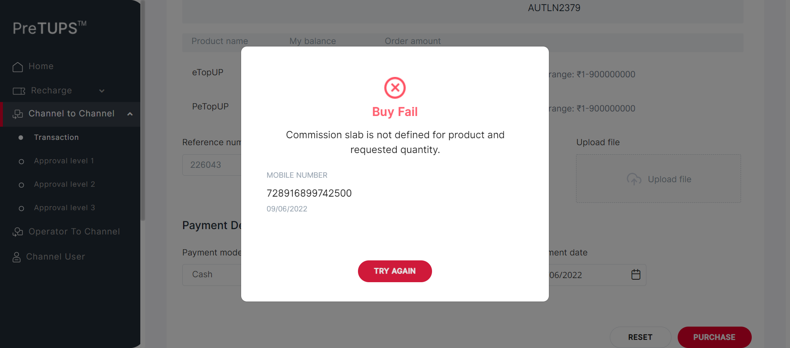

| Status | Timestamp | Details |
|---|---|---|
| info_outline | 2:45:22 PM | Entered :: getPreference() |
| info_outline | 2:45:23 PM | Service Class Preference Not Found |
| info_outline | 2:45:23 PM | Trying to get Preference value from Control Preferences |
| info_outline | 2:45:23 PM | Query Repository Returns: DEFAULT_VALUE (3) |
| info_outline | 2:45:23 PM | Category Code for Retailer: RET |
| info_outline | 2:45:23 PM | Entered webInterface(Retailer) |
| info_outline | 2:45:23 PM | webInterface() :: select query: Select WEB_INTERFACE_ALLOWED from categories where category_name= ? |
| info_outline | 2:45:23 PM | Database Returns: WEB_INTERFACE_ALLOWED (Y) |
| info_outline | 2:45:23 PM | Exited webInterface() |
| info_outline | 2:45:23 PM | Entered performC2CBuyMobileBuyerType(Retailer, Agent, 723932049199625, 2468) |
| info_outline | 2:45:23 PM | Login ID Found as: AUT_41726 |
| info_outline | 2:45:23 PM | Password Found as: com@1357 |
| info_outline | 2:45:23 PM | LOGINID : AUT_41726 |
| info_outline | 2:45:23 PM | LoginID found as: AUT_41726 |
| info_outline | 2:45:23 PM | Password found as: com@1357 |
| info_outline | 2:45:23 PM | Username found as: AUTFN4270 AUTLN3932 |
| info_outline | 2:45:25 PM | Trying to select Language |
| info_outline | 2:45:25 PM | Language selected successfully as: English |
| info_outline | 2:45:25 PM | Trying to enter Login ID |
| info_outline | 2:45:25 PM | Login ID entered successfully as: AUT_41726 |
| info_outline | 2:45:25 PM | Trying to enter Password |
| info_outline | 2:45:25 PM | Password entered successfully as: com@1357 |
| info_outline | 2:45:25 PM | Trying to click Login Button |
| info_outline | 2:45:25 PM | Login button clicked successfully |
| info_outline | 2:45:25 PM | Error Message Found on Login Screen: |
| info_outline | 2:45:29 PM | Trying clicking on C2C Heading |
| info_outline | 2:45:30 PM | User clicked C2C Heading Link. |
| info_outline | 2:45:30 PM | Trying clicking on C2C Transaction Heading |
| info_outline | 2:45:30 PM | User clicked C2C Transaction Heading Link. |
| info_outline | 2:45:30 PM | C2C Heading and Transaction Heading is clicked |
| info_outline | 2:45:30 PM | Trying clicking on C2C Single Operation Heading |
| info_outline | 2:45:43 PM | User clicked C2C Single Operation Heading. |
| info_outline | 2:45:43 PM | Trying clicking on C2C Buy Heading |
| info_outline | 2:45:43 PM | User clicked C2C Buy Heading. |
| info_outline | 2:45:43 PM | Trying clicking on Etopup |
| info_outline | 2:45:43 PM | Clicked Etopup. |
| info_outline | 2:45:43 PM | Trying to select C2C Buyer Type |
| info_outline | 2:45:44 PM | C2C Buyer Type selected : //ng-select[@id='searchBy']//ng-dropdown-panel[contains(@class,'ng-star-inserted')]//span[text()='Mobile Number'] |
| info_outline | 2:45:44 PM | Entering C2C MSISDN |
| info_outline | 2:45:44 PM | Entered C2C MSISDN : 723932049199625 |
| info_outline | 2:45:54 PM | Trying clicking on PROCEED button on C2C |
| info_outline | 2:46:04 PM | Clicked PROCEED button on C2C. |
| info_outline | 2:46:04 PM | Trying to initiate C2C Topups |
| info_outline | 2:46:04 PM | rowCount of c2c topups available on screen : 2 |
| info_outline | 2:46:04 PM | sheetProductCode : eTopUP |
| info_outline | 2:46:04 PM | quantity : 7 |
| info_outline | 2:46:04 PM | String.valueOf(quantity) SEND KEYS : 7 |
| info_outline | 2:46:04 PM | sheetProductCode : PeTopUP |
| info_outline | 2:46:04 PM | rowCount of c2c topups available on screen : 2 |
| info_outline | 2:46:04 PM | sheetProductCode : eTopUP |
| info_outline | 2:46:04 PM | sheetProductCode : PeTopUP |
| info_outline | 2:46:04 PM | quantity : 0 |
| info_outline | 2:46:04 PM | String.valueOf(quantity) SEND KEYS : 0 |
| info_outline | 2:46:04 PM | Entered Quantities: |
| info_outline | 2:46:05 PM | Entered Reference Number |
| info_outline | 2:46:05 PM | User entered Remarks |
| info_outline | 2:46:05 PM | Trying to select Payment mode : Cash |
| info_outline | 2:46:05 PM | Selected Payment Mode : Cash |
| info_outline | 2:46:05 PM | Trying to select Payment Instrument Number |
| info_outline | 2:46:05 PM | User entered PaymentInstNum: 124231 |
| info_outline | 2:46:05 PM | Trying to select Date |
| info_outline | 2:46:05 PM | Trying to enter Payment Instrument Date |
| info_outline | 2:46:06 PM | User entered PaymentInstDate: 09/06/2022 |
| info_outline | 2:46:06 PM | Trying clicking on C2C TRANSFER button |
| info_outline | 2:46:06 PM | Clicked C2C Transfer Button |
| info_outline | 2:46:26 PM | PIN Popup is not visible. |
| info_outline | 2:46:26 PM | Enter PIN Popup for C2C didnt display |
| error | 2:46:47 PM | Error while getting SSH Server Instance : com.jcraft.jsch.JSchException: java.net.ConnectException: Connection timed out: connect |
| cancel | 2:46:47 PM | Catalina Log |
| info_outline | 2:46:47 PM | |
| info_outline | 2:46:47 PM | Exited performC2CBuyMobileBuyerType() |
| info_outline | 2:46:47 PM | Entered performC2CTransferMobileBuyerType(Agent, Retailer, 1357) |
| info_outline | 2:46:47 PM | Login ID Found as: AUT_08837 |
| info_outline | 2:46:47 PM | Password Found as: com@2468 |
| info_outline | 2:46:47 PM | LOGINID : AUT_08837 |
| info_outline | 2:46:48 PM | LoginID found as: AUT_87570 |
| info_outline | 2:46:48 PM | Password found as: com@2468 |
| info_outline | 2:46:48 PM | Username found as: AUTFN5575 AUTLN8034 |
| info_outline | 2:46:48 PM | Trying to select Language |
| info_outline | 2:46:48 PM | Language selected successfully as: English |
| info_outline | 2:46:48 PM | Trying to enter Login ID |
| info_outline | 2:46:49 PM | Login ID entered successfully as: AUT_87570 |
| info_outline | 2:46:49 PM | Trying to enter Password |
| info_outline | 2:46:49 PM | Password entered successfully as: com@2468 |
| info_outline | 2:46:49 PM | Trying to click Login Button |
| info_outline | 2:46:49 PM | Login button clicked successfully |
| info_outline | 2:46:49 PM | Error Message Found on Login Screen: |
| info_outline | 2:46:51 PM | Trying clicking on C2C Heading |
| info_outline | 2:46:51 PM | User clicked C2C Heading Link. |
| info_outline | 2:46:51 PM | Trying clicking on C2C Approval Level 1 Heading |
| info_outline | 2:46:51 PM | User clicked C2C Approval Level 1 Heading Link. |
| info_outline | 2:46:51 PM | C2C Heading and Transaction Heading is clicked |
| info_outline | 2:46:51 PM | Waiting for spinner |
| info_outline | 2:46:52 PM | Waiting for spinner to stop |
| info_outline | 2:46:54 PM | Spinner stopped |
| info_outline | 2:46:54 PM | Trying clicking on C2C Single Operation Heading |
| info_outline | 2:46:54 PM | User clicked C2C Single Operation Heading. |
| info_outline | 2:46:54 PM | Trying clicking on etopUp Heading |
| info_outline | 2:46:54 PM | User clicked eTopup Heading Link. |
| info_outline | 2:46:54 PM | Trying to enter the TransactionId |
| cancel | 2:47:14 PM | org.openqa.selenium.TimeoutException: Expected condition failed: waiting for visibility of element located by By.xpath: //input[@aria-controls='parentTable'] (tried for 20 second(s) with 500 milliseconds interval) at org.openqa.selenium.support.ui.WebDriverWait.timeoutException(WebDriverWait.java:82) at org.openqa.selenium.support.ui.FluentWait.until(FluentWait.java:272) at angular.pageobjects.c2capproval.C2CApproval.enterTxnId(C2CApproval.java:92) at angular.feature.C2CBuyRevamp.performingLevel1Approval(C2CBuyRevamp.java:881) at angular.testscripts.prereuisitesangular.PreRequisite_C2CReturn_Revamp.A_01_Test_C2CReturnMobileBuyerType(PreRequisite_C2CReturn_Revamp.java:66) at sun.reflect.NativeMethodAccessorImpl.invoke0(Native Method) at sun.reflect.NativeMethodAccessorImpl.invoke(Unknown Source) at sun.reflect.DelegatingMethodAccessorImpl.invoke(Unknown Source) at java.lang.reflect.Method.invoke(Unknown Source) at org.testng.internal.MethodInvocationHelper.invokeMethod(MethodInvocationHelper.java:124) at org.testng.internal.Invoker.invokeMethod(Invoker.java:580) at org.testng.internal.Invoker.invokeTestMethod(Invoker.java:716) at org.testng.internal.Invoker.invokeTestMethods(Invoker.java:988) at org.testng.internal.TestMethodWorker.invokeTestMethods(TestMethodWorker.java:125) at org.testng.internal.TestMethodWorker.run(TestMethodWorker.java:109) at org.testng.TestRunner.privateRun(TestRunner.java:648) at org.testng.TestRunner.run(TestRunner.java:505) at org.testng.SuiteRunner.runTest(SuiteRunner.java:455) at org.testng.SuiteRunner.runSequentially(SuiteRunner.java:450) at org.testng.SuiteRunner.privateRun(SuiteRunner.java:415) at org.testng.SuiteRunner.run(SuiteRunner.java:364) at org.testng.SuiteRunnerWorker.runSuite(SuiteRunnerWorker.java:52) at org.testng.SuiteRunnerWorker.run(SuiteRunnerWorker.java:84) at org.testng.TestNG.runSuitesSequentially(TestNG.java:1208) at org.testng.TestNG.runSuitesLocally(TestNG.java:1137) at org.testng.TestNG.runSuites(TestNG.java:1049) at org.testng.TestNG.run(TestNG.java:1017) at org.testng.remote.AbstractRemoteTestNG.run(AbstractRemoteTestNG.java:115) at org.testng.remote.RemoteTestNG.initAndRun(RemoteTestNG.java:251) at org.testng.remote.RemoteTestNG.main(RemoteTestNG.java:77) Caused by: org.openqa.selenium.NoSuchElementException: Cannot locate an element using By.xpath: //input[@aria-controls='parentTable'] For documentation on this error, please visit: http://seleniumhq.org/exceptions/no_such_element.html Build info: version: '3.10.0', revision: '176b4a9', time: '2018-03-02T19:03:16.397Z' System info: host: 'MCKL-20005142', ip: '192.168.1.38', os.name: 'Windows 10', os.arch: 'amd64', os.version: '10.0', java.version: '1.8.0_291' Driver info: driver.version: unknown at org.openqa.selenium.support.ui.ExpectedConditions.lambda$findElement$0(ExpectedConditions.java:896) at java.util.Optional.orElseThrow(Unknown Source) at org.openqa.selenium.support.ui.ExpectedConditions.findElement(ExpectedConditions.java:895) at org.openqa.selenium.support.ui.ExpectedConditions.access$000(ExpectedConditions.java:44) at org.openqa.selenium.support.ui.ExpectedConditions$7.apply(ExpectedConditions.java:206) at org.openqa.selenium.support.ui.ExpectedConditions$7.apply(ExpectedConditions.java:202) at org.openqa.selenium.support.ui.FluentWait.until(FluentWait.java:249) ... 28 more |
| error | 2:47:35 PM | Error while getting SSH Server Instance : com.jcraft.jsch.JSchException: java.net.ConnectException: Connection timed out: connect |
| cancel | 2:47:35 PM | Catalina Log |
| Status | Timestamp | Details |
|---|---|---|
| info_outline | 2:47:36 PM | Entered :: getPreference() |
| info_outline | 2:47:36 PM | Service Class Preference Not Found |
| info_outline | 2:47:36 PM | Trying to get Preference value from Control Preferences |
| info_outline | 2:47:36 PM | Query Repository Returns: DEFAULT_VALUE (3) |
| info_outline | 2:47:36 PM | Category Code for Agent: AG |
| info_outline | 2:47:36 PM | Entered webInterface(Agent) |
| info_outline | 2:47:36 PM | webInterface() :: select query: Select WEB_INTERFACE_ALLOWED from categories where category_name= ? |
| info_outline | 2:47:36 PM | Database Returns: WEB_INTERFACE_ALLOWED (Y) |
| info_outline | 2:47:36 PM | Exited webInterface() |
| info_outline | 2:47:36 PM | Entered performC2CBuyMobileBuyerType(Agent, Super Distributor, 720231342216284, 1357) |
| info_outline | 2:47:36 PM | Login ID Found as: AUT_08837 |
| info_outline | 2:47:36 PM | Password Found as: com@2468 |
| info_outline | 2:47:36 PM | LOGINID : AUT_08837 |
| info_outline | 2:47:36 PM | LoginID found as: AUT_08837 |
| info_outline | 2:47:36 PM | Password found as: com@2468 |
| info_outline | 2:47:36 PM | Username found as: AUTFN7086 AUTLN1035 |
| info_outline | 2:47:37 PM | Trying to select Language |
| info_outline | 2:47:37 PM | Language selected successfully as: English |
| info_outline | 2:47:37 PM | Trying to enter Login ID |
| info_outline | 2:47:37 PM | Login ID entered successfully as: AUT_08837 |
| info_outline | 2:47:37 PM | Trying to enter Password |
| info_outline | 2:47:38 PM | Password entered successfully as: com@2468 |
| info_outline | 2:47:38 PM | Trying to click Login Button |
| info_outline | 2:47:38 PM | Login button clicked successfully |
| info_outline | 2:47:38 PM | Error Message Found on Login Screen: |
| info_outline | 2:47:39 PM | Trying clicking on C2C Heading |
| info_outline | 2:47:40 PM | User clicked C2C Heading Link. |
| info_outline | 2:47:40 PM | Trying clicking on C2C Transaction Heading |
| info_outline | 2:47:40 PM | User clicked C2C Transaction Heading Link. |
| info_outline | 2:47:40 PM | C2C Heading and Transaction Heading is clicked |
| info_outline | 2:47:40 PM | Trying clicking on C2C Single Operation Heading |
| info_outline | 2:47:40 PM | User clicked C2C Single Operation Heading. |
| info_outline | 2:47:40 PM | Trying clicking on C2C Buy Heading |
| info_outline | 2:47:40 PM | User clicked C2C Buy Heading. |
| info_outline | 2:47:40 PM | Trying clicking on Etopup |
| info_outline | 2:47:40 PM | Clicked Etopup. |
| info_outline | 2:47:40 PM | Trying to select C2C Buyer Type |
| info_outline | 2:47:40 PM | C2C Buyer Type selected : //ng-select[@id='searchBy']//ng-dropdown-panel[contains(@class,'ng-star-inserted')]//span[text()='Mobile Number'] |
| info_outline | 2:47:40 PM | Entering C2C MSISDN |
| info_outline | 2:47:41 PM | Entered C2C MSISDN : 720231342216284 |
| info_outline | 2:47:51 PM | Trying clicking on PROCEED button on C2C |
| info_outline | 2:48:01 PM | Clicked PROCEED button on C2C. |
| info_outline | 2:48:01 PM | Trying to initiate C2C Topups |
| info_outline | 2:48:01 PM | rowCount of c2c topups available on screen : 2 |
| info_outline | 2:48:01 PM | sheetProductCode : eTopUP |
| info_outline | 2:48:01 PM | quantity : 0 |
| info_outline | 2:48:01 PM | String.valueOf(quantity) SEND KEYS : 0 |
| info_outline | 2:48:01 PM | sheetProductCode : PeTopUP |
| info_outline | 2:48:01 PM | rowCount of c2c topups available on screen : 2 |
| info_outline | 2:48:01 PM | sheetProductCode : eTopUP |
| info_outline | 2:48:01 PM | sheetProductCode : PeTopUP |
| info_outline | 2:48:02 PM | quantity : 0 |
| info_outline | 2:48:02 PM | String.valueOf(quantity) SEND KEYS : 0 |
| info_outline | 2:48:02 PM | Entered Quantities: |
| info_outline | 2:48:02 PM | Entered Reference Number |
| info_outline | 2:48:02 PM | User entered Remarks |
| info_outline | 2:48:02 PM | Trying to select Payment mode : Cash |
| info_outline | 2:48:02 PM | Selected Payment Mode : Cash |
| info_outline | 2:48:02 PM | Trying to select Payment Instrument Number |
| info_outline | 2:48:02 PM | User entered PaymentInstNum: 124231 |
| info_outline | 2:48:02 PM | Trying to select Date |
| info_outline | 2:48:02 PM | Trying to enter Payment Instrument Date |
| info_outline | 2:48:03 PM | User entered PaymentInstDate: 09/06/2022 |
| info_outline | 2:48:03 PM | Trying clicking on C2C TRANSFER button |
| info_outline | 2:48:03 PM | Clicked C2C Transfer Button |
| info_outline | 2:48:23 PM | PIN Popup is not visible. |
| info_outline | 2:48:23 PM | Enter PIN Popup for C2C didnt display |
| error | 2:48:44 PM | Error while getting SSH Server Instance : com.jcraft.jsch.JSchException: java.net.ConnectException: Connection timed out: connect |
| cancel | 2:48:44 PM | Catalina Log |
| info_outline | 2:48:44 PM |  |
| info_outline | 2:48:44 PM | Exited performC2CBuyMobileBuyerType() |
| info_outline | 2:48:44 PM | Entered performC2CTransferMobileBuyerType(Super Distributor, Agent, 2468) |
| info_outline | 2:48:45 PM | Login ID Found as: AUT_48675 |
| info_outline | 2:48:45 PM | Password Found as: com@2468 |
| info_outline | 2:48:45 PM | LOGINID : AUT_48675 |
| info_outline | 2:48:45 PM | LoginID found as: AUT_48675 |
| info_outline | 2:48:45 PM | Password found as: com@2468 |
| info_outline | 2:48:45 PM | Username found as: AUTFN1393 AUTLN2379 |
| info_outline | 2:48:45 PM | Trying to select Language |
| info_outline | 2:48:45 PM | Language selected successfully as: English |
| info_outline | 2:48:45 PM | Trying to enter Login ID |
| info_outline | 2:48:46 PM | Login ID entered successfully as: AUT_48675 |
| info_outline | 2:48:46 PM | Trying to enter Password |
| info_outline | 2:48:46 PM | Password entered successfully as: com@2468 |
| info_outline | 2:48:46 PM | Trying to click Login Button |
| info_outline | 2:48:46 PM | Login button clicked successfully |
| info_outline | 2:48:46 PM | Error Message Found on Login Screen: |
| info_outline | 2:48:48 PM | Trying clicking on C2C Heading |
| info_outline | 2:48:48 PM | User clicked C2C Heading Link. |
| info_outline | 2:48:48 PM | Trying clicking on C2C Approval Level 1 Heading |
| info_outline | 2:48:48 PM | User clicked C2C Approval Level 1 Heading Link. |
| info_outline | 2:48:48 PM | C2C Heading and Transaction Heading is clicked |
| info_outline | 2:48:48 PM | Waiting for spinner |
| info_outline | 2:48:48 PM | Waiting for spinner to stop |
| info_outline | 2:48:49 PM | Spinner stopped |
| info_outline | 2:48:49 PM | Trying clicking on C2C Single Operation Heading |
| info_outline | 2:48:50 PM | User clicked C2C Single Operation Heading. |
| info_outline | 2:48:50 PM | Trying clicking on etopUp Heading |
| info_outline | 2:48:50 PM | User clicked eTopup Heading Link. |
| info_outline | 2:48:50 PM | Trying to enter the TransactionId |
| info_outline | 2:48:50 PM | Entered the TransactionId |
| info_outline | 2:48:50 PM | Trying to Click the approve button |
| cancel | 2:49:10 PM | org.openqa.selenium.TimeoutException: Expected condition failed: waiting for visibility of element located by By.xpath: (//a[@class='approveClass'])[2] (tried for 20 second(s) with 500 milliseconds interval) at org.openqa.selenium.support.ui.WebDriverWait.timeoutException(WebDriverWait.java:82) at org.openqa.selenium.support.ui.FluentWait.until(FluentWait.java:272) at angular.pageobjects.c2capproval.C2CApproval.approveMainScreen(C2CApproval.java:100) at angular.feature.C2CBuyRevamp.performingLevel1Approval(C2CBuyRevamp.java:882) at angular.testscripts.prereuisitesangular.PreRequisite_C2CReturn_Revamp.A_01_Test_C2CReturnMobileBuyerType(PreRequisite_C2CReturn_Revamp.java:66) at sun.reflect.NativeMethodAccessorImpl.invoke0(Native Method) at sun.reflect.NativeMethodAccessorImpl.invoke(Unknown Source) at sun.reflect.DelegatingMethodAccessorImpl.invoke(Unknown Source) at java.lang.reflect.Method.invoke(Unknown Source) at org.testng.internal.MethodInvocationHelper.invokeMethod(MethodInvocationHelper.java:124) at org.testng.internal.Invoker.invokeMethod(Invoker.java:580) at org.testng.internal.Invoker.invokeTestMethod(Invoker.java:716) at org.testng.internal.Invoker.invokeTestMethods(Invoker.java:988) at org.testng.internal.TestMethodWorker.invokeTestMethods(TestMethodWorker.java:125) at org.testng.internal.TestMethodWorker.run(TestMethodWorker.java:109) at org.testng.TestRunner.privateRun(TestRunner.java:648) at org.testng.TestRunner.run(TestRunner.java:505) at org.testng.SuiteRunner.runTest(SuiteRunner.java:455) at org.testng.SuiteRunner.runSequentially(SuiteRunner.java:450) at org.testng.SuiteRunner.privateRun(SuiteRunner.java:415) at org.testng.SuiteRunner.run(SuiteRunner.java:364) at org.testng.SuiteRunnerWorker.runSuite(SuiteRunnerWorker.java:52) at org.testng.SuiteRunnerWorker.run(SuiteRunnerWorker.java:84) at org.testng.TestNG.runSuitesSequentially(TestNG.java:1208) at org.testng.TestNG.runSuitesLocally(TestNG.java:1137) at org.testng.TestNG.runSuites(TestNG.java:1049) at org.testng.TestNG.run(TestNG.java:1017) at org.testng.remote.AbstractRemoteTestNG.run(AbstractRemoteTestNG.java:115) at org.testng.remote.RemoteTestNG.initAndRun(RemoteTestNG.java:251) at org.testng.remote.RemoteTestNG.main(RemoteTestNG.java:77) Caused by: org.openqa.selenium.NoSuchElementException: Cannot locate an element using By.xpath: (//a[@class='approveClass'])[2] For documentation on this error, please visit: http://seleniumhq.org/exceptions/no_such_element.html Build info: version: '3.10.0', revision: '176b4a9', time: '2018-03-02T19:03:16.397Z' System info: host: 'MCKL-20005142', ip: '192.168.1.38', os.name: 'Windows 10', os.arch: 'amd64', os.version: '10.0', java.version: '1.8.0_291' Driver info: driver.version: unknown at org.openqa.selenium.support.ui.ExpectedConditions.lambda$findElement$0(ExpectedConditions.java:896) at java.util.Optional.orElseThrow(Unknown Source) at org.openqa.selenium.support.ui.ExpectedConditions.findElement(ExpectedConditions.java:895) at org.openqa.selenium.support.ui.ExpectedConditions.access$000(ExpectedConditions.java:44) at org.openqa.selenium.support.ui.ExpectedConditions$7.apply(ExpectedConditions.java:206) at org.openqa.selenium.support.ui.ExpectedConditions$7.apply(ExpectedConditions.java:202) at org.openqa.selenium.support.ui.FluentWait.until(FluentWait.java:249) ... 28 more |
| error | 2:49:31 PM | Error while getting SSH Server Instance : com.jcraft.jsch.JSchException: java.net.ConnectException: Connection timed out: connect |
| cancel | 2:49:31 PM | Catalina Log |
| Status | Timestamp | Details |
|---|---|---|
| info_outline | 2:49:32 PM | Entered :: getPreference() |
| info_outline | 2:49:32 PM | Service Class Preference Not Found |
| info_outline | 2:49:32 PM | Trying to get Preference value from Control Preferences |
| info_outline | 2:49:32 PM | Query Repository Returns: DEFAULT_VALUE (3) |
| info_outline | 2:49:32 PM | Category Code for Agent: AG |
| info_outline | 2:49:32 PM | Entered webInterface(Agent) |
| info_outline | 2:49:32 PM | webInterface() :: select query: Select WEB_INTERFACE_ALLOWED from categories where category_name= ? |
| info_outline | 2:49:32 PM | Database Returns: WEB_INTERFACE_ALLOWED (Y) |
| info_outline | 2:49:32 PM | Exited webInterface() |
| info_outline | 2:49:32 PM | Entered performC2CBuyMobileBuyerType(Agent, Dealer, 724699085750159, 1357) |
| info_outline | 2:49:32 PM | Login ID Found as: AUT_08837 |
| info_outline | 2:49:32 PM | Password Found as: com@2468 |
| info_outline | 2:49:32 PM | LOGINID : AUT_08837 |
| info_outline | 2:49:32 PM | LoginID found as: AUT_08837 |
| info_outline | 2:49:32 PM | Password found as: com@2468 |
| info_outline | 2:49:32 PM | Username found as: AUTFN7086 AUTLN1035 |
| info_outline | 2:49:33 PM | Trying to select Language |
| info_outline | 2:49:33 PM | Language selected successfully as: English |
| info_outline | 2:49:33 PM | Trying to enter Login ID |
| info_outline | 2:49:33 PM | Login ID entered successfully as: AUT_08837 |
| info_outline | 2:49:33 PM | Trying to enter Password |
| info_outline | 2:49:33 PM | Password entered successfully as: com@2468 |
| info_outline | 2:49:33 PM | Trying to click Login Button |
| info_outline | 2:49:33 PM | Login button clicked successfully |
| info_outline | 2:49:33 PM | Error Message Found on Login Screen: |
| info_outline | 2:49:35 PM | Trying clicking on C2C Heading |
| info_outline | 2:49:35 PM | User clicked C2C Heading Link. |
| info_outline | 2:49:35 PM | Trying clicking on C2C Transaction Heading |
| info_outline | 2:49:35 PM | User clicked C2C Transaction Heading Link. |
| info_outline | 2:49:35 PM | C2C Heading and Transaction Heading is clicked |
| info_outline | 2:49:35 PM | Trying clicking on C2C Single Operation Heading |
| info_outline | 2:49:35 PM | User clicked C2C Single Operation Heading. |
| info_outline | 2:49:35 PM | Trying clicking on C2C Buy Heading |
| info_outline | 2:49:36 PM | User clicked C2C Buy Heading. |
| info_outline | 2:49:36 PM | Trying clicking on Etopup |
| info_outline | 2:49:36 PM | Clicked Etopup. |
| info_outline | 2:49:36 PM | Trying to select C2C Buyer Type |
| info_outline | 2:49:36 PM | C2C Buyer Type selected : //ng-select[@id='searchBy']//ng-dropdown-panel[contains(@class,'ng-star-inserted')]//span[text()='Mobile Number'] |
| info_outline | 2:49:36 PM | Entering C2C MSISDN |
| info_outline | 2:49:36 PM | Entered C2C MSISDN : 724699085750159 |
| info_outline | 2:49:46 PM | Trying clicking on PROCEED button on C2C |
| info_outline | 2:49:56 PM | Clicked PROCEED button on C2C. |
| info_outline | 2:49:56 PM | Trying to initiate C2C Topups |
| info_outline | 2:49:57 PM | rowCount of c2c topups available on screen : 2 |
| info_outline | 2:49:57 PM | sheetProductCode : eTopUP |
| info_outline | 2:49:57 PM | quantity : 1 |
| info_outline | 2:49:57 PM | String.valueOf(quantity) SEND KEYS : 1 |
| info_outline | 2:49:57 PM | sheetProductCode : PeTopUP |
| info_outline | 2:49:57 PM | rowCount of c2c topups available on screen : 2 |
| info_outline | 2:49:57 PM | sheetProductCode : eTopUP |
| info_outline | 2:49:57 PM | sheetProductCode : PeTopUP |
| info_outline | 2:49:57 PM | quantity : 0 |
| info_outline | 2:49:57 PM | String.valueOf(quantity) SEND KEYS : 0 |
| info_outline | 2:49:57 PM | Entered Quantities: |
| info_outline | 2:49:57 PM | Entered Reference Number |
| info_outline | 2:49:57 PM | User entered Remarks |
| info_outline | 2:49:57 PM | Trying to select Payment mode : Cash |
| info_outline | 2:49:57 PM | Selected Payment Mode : Cash |
| info_outline | 2:49:57 PM | Trying to select Payment Instrument Number |
| info_outline | 2:49:58 PM | User entered PaymentInstNum: 124231 |
| info_outline | 2:49:58 PM | Trying to select Date |
| info_outline | 2:49:58 PM | Trying to enter Payment Instrument Date |
| info_outline | 2:49:58 PM | User entered PaymentInstDate: 09/06/2022 |
| info_outline | 2:49:58 PM | Trying clicking on C2C TRANSFER button |
| info_outline | 2:49:58 PM | Clicked C2C Transfer Button |
| info_outline | 2:50:18 PM | PIN Popup is not visible. |
| info_outline | 2:50:18 PM | Enter PIN Popup for C2C didnt display |
| error | 2:50:39 PM | Error while getting SSH Server Instance : com.jcraft.jsch.JSchException: java.net.ConnectException: Connection timed out: connect |
| cancel | 2:50:39 PM | Catalina Log |
| info_outline | 2:50:39 PM | |
| info_outline | 2:50:39 PM | Exited performC2CBuyMobileBuyerType() |
| info_outline | 2:50:39 PM | Entered performC2CTransferMobileBuyerType(Dealer, Agent, 2468) |
| info_outline | 2:50:40 PM | Login ID Found as: AUT_19995 |
| info_outline | 2:50:40 PM | Password Found as: com@2468 |
| info_outline | 2:50:40 PM | LOGINID : AUT_19995 |
| info_outline | 2:50:40 PM | LoginID found as: AUT_19995 |
| info_outline | 2:50:40 PM | Password found as: com@2468 |
| info_outline | 2:50:40 PM | Username found as: AUTFN6751 AUTLN4189 |
| info_outline | 2:50:41 PM | Trying to select Language |
| info_outline | 2:50:41 PM | Language selected successfully as: English |
| info_outline | 2:50:41 PM | Trying to enter Login ID |
| info_outline | 2:50:41 PM | Login ID entered successfully as: AUT_19995 |
| info_outline | 2:50:41 PM | Trying to enter Password |
| info_outline | 2:50:41 PM | Password entered successfully as: com@2468 |
| info_outline | 2:50:41 PM | Trying to click Login Button |
| info_outline | 2:50:41 PM | Login button clicked successfully |
| info_outline | 2:50:41 PM | Error Message Found on Login Screen: |
| info_outline | 2:50:43 PM | Trying clicking on C2C Heading |
| info_outline | 2:50:43 PM | User clicked C2C Heading Link. |
| info_outline | 2:50:43 PM | Trying clicking on C2C Approval Level 1 Heading |
| info_outline | 2:50:43 PM | User clicked C2C Approval Level 1 Heading Link. |
| info_outline | 2:50:43 PM | C2C Heading and Transaction Heading is clicked |
| info_outline | 2:50:43 PM | Waiting for spinner |
| info_outline | 2:50:44 PM | Waiting for spinner to stop |
| info_outline | 2:50:45 PM | Spinner stopped |
| info_outline | 2:50:45 PM | Trying clicking on C2C Single Operation Heading |
| info_outline | 2:50:45 PM | User clicked C2C Single Operation Heading. |
| info_outline | 2:50:45 PM | Trying clicking on etopUp Heading |
| info_outline | 2:50:45 PM | User clicked eTopup Heading Link. |
| info_outline | 2:50:45 PM | Trying to enter the TransactionId |
| info_outline | 2:50:45 PM | Entered the TransactionId |
| info_outline | 2:50:45 PM | Trying to Click the approve button |
| cancel | 2:51:05 PM | org.openqa.selenium.TimeoutException: Expected condition failed: waiting for visibility of element located by By.xpath: (//a[@class='approveClass'])[2] (tried for 20 second(s) with 500 milliseconds interval) at org.openqa.selenium.support.ui.WebDriverWait.timeoutException(WebDriverWait.java:82) at org.openqa.selenium.support.ui.FluentWait.until(FluentWait.java:272) at angular.pageobjects.c2capproval.C2CApproval.approveMainScreen(C2CApproval.java:100) at angular.feature.C2CBuyRevamp.performingLevel1Approval(C2CBuyRevamp.java:882) at angular.testscripts.prereuisitesangular.PreRequisite_C2CReturn_Revamp.A_01_Test_C2CReturnMobileBuyerType(PreRequisite_C2CReturn_Revamp.java:66) at sun.reflect.NativeMethodAccessorImpl.invoke0(Native Method) at sun.reflect.NativeMethodAccessorImpl.invoke(Unknown Source) at sun.reflect.DelegatingMethodAccessorImpl.invoke(Unknown Source) at java.lang.reflect.Method.invoke(Unknown Source) at org.testng.internal.MethodInvocationHelper.invokeMethod(MethodInvocationHelper.java:124) at org.testng.internal.Invoker.invokeMethod(Invoker.java:580) at org.testng.internal.Invoker.invokeTestMethod(Invoker.java:716) at org.testng.internal.Invoker.invokeTestMethods(Invoker.java:988) at org.testng.internal.TestMethodWorker.invokeTestMethods(TestMethodWorker.java:125) at org.testng.internal.TestMethodWorker.run(TestMethodWorker.java:109) at org.testng.TestRunner.privateRun(TestRunner.java:648) at org.testng.TestRunner.run(TestRunner.java:505) at org.testng.SuiteRunner.runTest(SuiteRunner.java:455) at org.testng.SuiteRunner.runSequentially(SuiteRunner.java:450) at org.testng.SuiteRunner.privateRun(SuiteRunner.java:415) at org.testng.SuiteRunner.run(SuiteRunner.java:364) at org.testng.SuiteRunnerWorker.runSuite(SuiteRunnerWorker.java:52) at org.testng.SuiteRunnerWorker.run(SuiteRunnerWorker.java:84) at org.testng.TestNG.runSuitesSequentially(TestNG.java:1208) at org.testng.TestNG.runSuitesLocally(TestNG.java:1137) at org.testng.TestNG.runSuites(TestNG.java:1049) at org.testng.TestNG.run(TestNG.java:1017) at org.testng.remote.AbstractRemoteTestNG.run(AbstractRemoteTestNG.java:115) at org.testng.remote.RemoteTestNG.initAndRun(RemoteTestNG.java:251) at org.testng.remote.RemoteTestNG.main(RemoteTestNG.java:77) Caused by: org.openqa.selenium.NoSuchElementException: Cannot locate an element using By.xpath: (//a[@class='approveClass'])[2] For documentation on this error, please visit: http://seleniumhq.org/exceptions/no_such_element.html Build info: version: '3.10.0', revision: '176b4a9', time: '2018-03-02T19:03:16.397Z' System info: host: 'MCKL-20005142', ip: '192.168.1.38', os.name: 'Windows 10', os.arch: 'amd64', os.version: '10.0', java.version: '1.8.0_291' Driver info: driver.version: unknown at org.openqa.selenium.support.ui.ExpectedConditions.lambda$findElement$0(ExpectedConditions.java:896) at java.util.Optional.orElseThrow(Unknown Source) at org.openqa.selenium.support.ui.ExpectedConditions.findElement(ExpectedConditions.java:895) at org.openqa.selenium.support.ui.ExpectedConditions.access$000(ExpectedConditions.java:44) at org.openqa.selenium.support.ui.ExpectedConditions$7.apply(ExpectedConditions.java:206) at org.openqa.selenium.support.ui.ExpectedConditions$7.apply(ExpectedConditions.java:202) at org.openqa.selenium.support.ui.FluentWait.until(FluentWait.java:249) ... 28 more |
| error | 2:51:26 PM | Error while getting SSH Server Instance : com.jcraft.jsch.JSchException: java.net.ConnectException: Connection timed out: connect |
| cancel | 2:51:26 PM | Catalina Log |
| Status | Timestamp | Details |
|---|---|---|
| info_outline | 2:51:27 PM | Entered :: getPreference() |
| info_outline | 2:51:27 PM | Service Class Preference Not Found |
| info_outline | 2:51:27 PM | Trying to get Preference value from Control Preferences |
| info_outline | 2:51:27 PM | Query Repository Returns: DEFAULT_VALUE (3) |
| info_outline | 2:51:27 PM | Category Code for Retailer: RET |
| info_outline | 2:51:27 PM | Entered webInterface(Retailer) |
| info_outline | 2:51:27 PM | webInterface() :: select query: Select WEB_INTERFACE_ALLOWED from categories where category_name= ? |
| info_outline | 2:51:27 PM | Database Returns: WEB_INTERFACE_ALLOWED (Y) |
| info_outline | 2:51:27 PM | Exited webInterface() |
| info_outline | 2:51:27 PM | Entered performC2CBuyMobileBuyerType(Retailer, Super Distributor, 720231342216284, 2468) |
| info_outline | 2:51:27 PM | Login ID Found as: AUT_41726 |
| info_outline | 2:51:27 PM | Password Found as: com@1357 |
| info_outline | 2:51:27 PM | LOGINID : AUT_41726 |
| info_outline | 2:51:27 PM | LoginID found as: AUT_41726 |
| info_outline | 2:51:27 PM | Password found as: com@1357 |
| info_outline | 2:51:27 PM | Username found as: AUTFN4270 AUTLN3932 |
| info_outline | 2:51:28 PM | Trying to select Language |
| info_outline | 2:51:28 PM | Language selected successfully as: English |
| info_outline | 2:51:28 PM | Trying to enter Login ID |
| info_outline | 2:51:28 PM | Login ID entered successfully as: AUT_41726 |
| info_outline | 2:51:28 PM | Trying to enter Password |
| info_outline | 2:51:29 PM | Password entered successfully as: com@1357 |
| info_outline | 2:51:29 PM | Trying to click Login Button |
| info_outline | 2:51:29 PM | Login button clicked successfully |
| info_outline | 2:51:29 PM | Error Message Found on Login Screen: |
| info_outline | 2:51:30 PM | Trying clicking on C2C Heading |
| info_outline | 2:51:30 PM | User clicked C2C Heading Link. |
| info_outline | 2:51:30 PM | Trying clicking on C2C Transaction Heading |
| info_outline | 2:51:30 PM | User clicked C2C Transaction Heading Link. |
| info_outline | 2:51:30 PM | C2C Heading and Transaction Heading is clicked |
| info_outline | 2:51:30 PM | Trying clicking on C2C Single Operation Heading |
| info_outline | 2:51:31 PM | User clicked C2C Single Operation Heading. |
| info_outline | 2:51:31 PM | Trying clicking on C2C Buy Heading |
| info_outline | 2:51:31 PM | User clicked C2C Buy Heading. |
| info_outline | 2:51:31 PM | Trying clicking on Etopup |
| info_outline | 2:51:31 PM | Clicked Etopup. |
| info_outline | 2:51:31 PM | Trying to select C2C Buyer Type |
| info_outline | 2:51:31 PM | C2C Buyer Type selected : //ng-select[@id='searchBy']//ng-dropdown-panel[contains(@class,'ng-star-inserted')]//span[text()='Mobile Number'] |
| info_outline | 2:51:31 PM | Entering C2C MSISDN |
| info_outline | 2:51:31 PM | Entered C2C MSISDN : 720231342216284 |
| info_outline | 2:51:41 PM | Trying clicking on PROCEED button on C2C |
| info_outline | 2:51:51 PM | Clicked PROCEED button on C2C. |
| info_outline | 2:51:51 PM | Trying to initiate C2C Topups |
| cancel | 2:52:12 PM | org.openqa.selenium.TimeoutException: Expected condition failed: waiting for visibility of element located by By.xpath: //form[@id='control']//label[@class='transfer-e-top-up-to-b'] (tried for 20 second(s) with 500 milliseconds interval) at org.openqa.selenium.support.ui.WebDriverWait.timeoutException(WebDriverWait.java:82) at org.openqa.selenium.support.ui.FluentWait.until(FluentWait.java:272) at angular.pageobjects.c2ctransfer.C2CTransfers.enterQuantityforC2CBuyRevamp(C2CTransfers.java:1043) at angular.feature.C2CBuyRevamp.performC2CBuyMobileBuyerType(C2CBuyRevamp.java:64) at angular.testscripts.prereuisitesangular.PreRequisite_C2CReturn_Revamp.A_01_Test_C2CReturnMobileBuyerType(PreRequisite_C2CReturn_Revamp.java:49) at sun.reflect.NativeMethodAccessorImpl.invoke0(Native Method) at sun.reflect.NativeMethodAccessorImpl.invoke(Unknown Source) at sun.reflect.DelegatingMethodAccessorImpl.invoke(Unknown Source) at java.lang.reflect.Method.invoke(Unknown Source) at org.testng.internal.MethodInvocationHelper.invokeMethod(MethodInvocationHelper.java:124) at org.testng.internal.Invoker.invokeMethod(Invoker.java:580) at org.testng.internal.Invoker.invokeTestMethod(Invoker.java:716) at org.testng.internal.Invoker.invokeTestMethods(Invoker.java:988) at org.testng.internal.TestMethodWorker.invokeTestMethods(TestMethodWorker.java:125) at org.testng.internal.TestMethodWorker.run(TestMethodWorker.java:109) at org.testng.TestRunner.privateRun(TestRunner.java:648) at org.testng.TestRunner.run(TestRunner.java:505) at org.testng.SuiteRunner.runTest(SuiteRunner.java:455) at org.testng.SuiteRunner.runSequentially(SuiteRunner.java:450) at org.testng.SuiteRunner.privateRun(SuiteRunner.java:415) at org.testng.SuiteRunner.run(SuiteRunner.java:364) at org.testng.SuiteRunnerWorker.runSuite(SuiteRunnerWorker.java:52) at org.testng.SuiteRunnerWorker.run(SuiteRunnerWorker.java:84) at org.testng.TestNG.runSuitesSequentially(TestNG.java:1208) at org.testng.TestNG.runSuitesLocally(TestNG.java:1137) at org.testng.TestNG.runSuites(TestNG.java:1049) at org.testng.TestNG.run(TestNG.java:1017) at org.testng.remote.AbstractRemoteTestNG.run(AbstractRemoteTestNG.java:115) at org.testng.remote.RemoteTestNG.initAndRun(RemoteTestNG.java:251) at org.testng.remote.RemoteTestNG.main(RemoteTestNG.java:77) Caused by: org.openqa.selenium.NoSuchElementException: Cannot locate an element using By.xpath: //form[@id='control']//label[@class='transfer-e-top-up-to-b'] For documentation on this error, please visit: http://seleniumhq.org/exceptions/no_such_element.html Build info: version: '3.10.0', revision: '176b4a9', time: '2018-03-02T19:03:16.397Z' System info: host: 'MCKL-20005142', ip: '192.168.1.38', os.name: 'Windows 10', os.arch: 'amd64', os.version: '10.0', java.version: '1.8.0_291' Driver info: driver.version: unknown at org.openqa.selenium.support.ui.ExpectedConditions.lambda$findElement$0(ExpectedConditions.java:896) at java.util.Optional.orElseThrow(Unknown Source) at org.openqa.selenium.support.ui.ExpectedConditions.findElement(ExpectedConditions.java:895) at org.openqa.selenium.support.ui.ExpectedConditions.access$000(ExpectedConditions.java:44) at org.openqa.selenium.support.ui.ExpectedConditions$7.apply(ExpectedConditions.java:206) at org.openqa.selenium.support.ui.ExpectedConditions$7.apply(ExpectedConditions.java:202) at org.openqa.selenium.support.ui.FluentWait.until(FluentWait.java:249) ... 28 more |
| error | 2:52:33 PM | Error while getting SSH Server Instance : com.jcraft.jsch.JSchException: java.net.ConnectException: Connection timed out: connect |
| cancel | 2:52:33 PM | Catalina Log |
| Status | Timestamp | Details |
|---|---|---|
| info_outline | 2:52:33 PM | Entered :: getPreference() |
| info_outline | 2:52:33 PM | Service Class Preference Not Found |
| info_outline | 2:52:33 PM | Trying to get Preference value from Control Preferences |
| info_outline | 2:52:33 PM | Query Repository Returns: DEFAULT_VALUE (3) |
| info_outline | 2:52:33 PM | Category Code for Retailer: RET |
| info_outline | 2:52:33 PM | Entered webInterface(Retailer) |
| info_outline | 2:52:33 PM | webInterface() :: select query: Select WEB_INTERFACE_ALLOWED from categories where category_name= ? |
| info_outline | 2:52:34 PM | Database Returns: WEB_INTERFACE_ALLOWED (Y) |
| info_outline | 2:52:34 PM | Exited webInterface() |
| info_outline | 2:52:34 PM | Entered performC2CBuyMobileBuyerType(Retailer, Dealer, 724699085750159, 2468) |
| info_outline | 2:52:34 PM | Login ID Found as: AUT_41726 |
| info_outline | 2:52:34 PM | Password Found as: com@1357 |
| info_outline | 2:52:34 PM | LOGINID : AUT_41726 |
| info_outline | 2:52:34 PM | LoginID found as: AUT_41726 |
| info_outline | 2:52:34 PM | Password found as: com@1357 |
| info_outline | 2:52:34 PM | Username found as: AUTFN4270 AUTLN3932 |
| info_outline | 2:52:34 PM | Trying to select Language |
| info_outline | 2:52:45 PM | Trying to enter Login ID |
| info_outline | 2:52:45 PM | Login ID entered successfully as: AUT_41726 |
| info_outline | 2:52:45 PM | Trying to enter Password |
| info_outline | 2:52:45 PM | Password entered successfully as: com@1357 |
| info_outline | 2:52:45 PM | Trying to click Login Button |
| info_outline | 2:52:45 PM | Login button clicked successfully |
| info_outline | 2:52:45 PM | Error Message Found on Login Screen: |
| info_outline | 2:53:05 PM | Trying clicking on C2C Transaction Heading |
| cancel | 2:53:26 PM | org.openqa.selenium.TimeoutException: Expected condition failed: waiting for visibility of element located by By.xpath: //a[@id= 'c2ctransaction'] (tried for 20 second(s) with 500 milliseconds interval) at org.openqa.selenium.support.ui.WebDriverWait.timeoutException(WebDriverWait.java:82) at org.openqa.selenium.support.ui.FluentWait.until(FluentWait.java:272) at angular.pageobjects.c2ctransfer.C2CTransfers.clickC2CTransactionHeading(C2CTransfers.java:1664) at angular.feature.C2CBuyRevamp.performC2CBuyMobileBuyerType(C2CBuyRevamp.java:50) at angular.testscripts.prereuisitesangular.PreRequisite_C2CReturn_Revamp.A_01_Test_C2CReturnMobileBuyerType(PreRequisite_C2CReturn_Revamp.java:49) at sun.reflect.NativeMethodAccessorImpl.invoke0(Native Method) at sun.reflect.NativeMethodAccessorImpl.invoke(Unknown Source) at sun.reflect.DelegatingMethodAccessorImpl.invoke(Unknown Source) at java.lang.reflect.Method.invoke(Unknown Source) at org.testng.internal.MethodInvocationHelper.invokeMethod(MethodInvocationHelper.java:124) at org.testng.internal.Invoker.invokeMethod(Invoker.java:580) at org.testng.internal.Invoker.invokeTestMethod(Invoker.java:716) at org.testng.internal.Invoker.invokeTestMethods(Invoker.java:988) at org.testng.internal.TestMethodWorker.invokeTestMethods(TestMethodWorker.java:125) at org.testng.internal.TestMethodWorker.run(TestMethodWorker.java:109) at org.testng.TestRunner.privateRun(TestRunner.java:648) at org.testng.TestRunner.run(TestRunner.java:505) at org.testng.SuiteRunner.runTest(SuiteRunner.java:455) at org.testng.SuiteRunner.runSequentially(SuiteRunner.java:450) at org.testng.SuiteRunner.privateRun(SuiteRunner.java:415) at org.testng.SuiteRunner.run(SuiteRunner.java:364) at org.testng.SuiteRunnerWorker.runSuite(SuiteRunnerWorker.java:52) at org.testng.SuiteRunnerWorker.run(SuiteRunnerWorker.java:84) at org.testng.TestNG.runSuitesSequentially(TestNG.java:1208) at org.testng.TestNG.runSuitesLocally(TestNG.java:1137) at org.testng.TestNG.runSuites(TestNG.java:1049) at org.testng.TestNG.run(TestNG.java:1017) at org.testng.remote.AbstractRemoteTestNG.run(AbstractRemoteTestNG.java:115) at org.testng.remote.RemoteTestNG.initAndRun(RemoteTestNG.java:251) at org.testng.remote.RemoteTestNG.main(RemoteTestNG.java:77) Caused by: org.openqa.selenium.NoSuchElementException: Cannot locate an element using By.xpath: //a[@id= 'c2ctransaction'] For documentation on this error, please visit: http://seleniumhq.org/exceptions/no_such_element.html Build info: version: '3.10.0', revision: '176b4a9', time: '2018-03-02T19:03:16.397Z' System info: host: 'MCKL-20005142', ip: '192.168.1.38', os.name: 'Windows 10', os.arch: 'amd64', os.version: '10.0', java.version: '1.8.0_291' Driver info: driver.version: unknown at org.openqa.selenium.support.ui.ExpectedConditions.lambda$findElement$0(ExpectedConditions.java:896) at java.util.Optional.orElseThrow(Unknown Source) at org.openqa.selenium.support.ui.ExpectedConditions.findElement(ExpectedConditions.java:895) at org.openqa.selenium.support.ui.ExpectedConditions.access$000(ExpectedConditions.java:44) at org.openqa.selenium.support.ui.ExpectedConditions$7.apply(ExpectedConditions.java:206) at org.openqa.selenium.support.ui.ExpectedConditions$7.apply(ExpectedConditions.java:202) at org.openqa.selenium.support.ui.FluentWait.until(FluentWait.java:249) ... 28 more |
| error | 2:53:47 PM | Error while getting SSH Server Instance : com.jcraft.jsch.JSchException: java.net.ConnectException: Connection timed out: connect |
| cancel | 2:53:47 PM | Catalina Log |
| Status | Timestamp | Details |
|---|---|---|
| info_outline | 2:53:48 PM | Entered :: getPreference() |
| info_outline | 2:53:48 PM | Service Class Preference Not Found |
| info_outline | 2:53:48 PM | Trying to get Preference value from Control Preferences |
| info_outline | 2:53:48 PM | Query Repository Returns: DEFAULT_VALUE (3) |
| info_outline | 2:53:48 PM | Category Code for Retailer: RET |
| info_outline | 2:53:48 PM | Entered webInterface(Retailer) |
| info_outline | 2:53:48 PM | webInterface() :: select query: Select WEB_INTERFACE_ALLOWED from categories where category_name= ? |
| info_outline | 2:53:49 PM | Database Returns: WEB_INTERFACE_ALLOWED (Y) |
| info_outline | 2:53:49 PM | Exited webInterface() |
| info_outline | 2:53:49 PM | Entered performC2CBuyMobileBuyerType(Retailer, Agent, 728916899742500, 2468) |
| info_outline | 2:53:49 PM | Login ID Found as: AUT_41726 |
| info_outline | 2:53:49 PM | Password Found as: com@1357 |
| info_outline | 2:53:49 PM | LOGINID : AUT_41726 |
| info_outline | 2:53:49 PM | LoginID found as: AUT_41726 |
| info_outline | 2:53:49 PM | Password found as: com@1357 |
| info_outline | 2:53:49 PM | Username found as: AUTFN4270 AUTLN3932 |
| info_outline | 2:53:50 PM | Trying to select Language |
| info_outline | 2:53:50 PM | Language selected successfully as: English |
| info_outline | 2:53:50 PM | Trying to enter Login ID |
| info_outline | 2:53:51 PM | Login ID entered successfully as: AUT_41726 |
| info_outline | 2:53:51 PM | Trying to enter Password |
| info_outline | 2:53:51 PM | Password entered successfully as: com@1357 |
| info_outline | 2:53:51 PM | Trying to click Login Button |
| info_outline | 2:53:51 PM | Login button clicked successfully |
| info_outline | 2:53:51 PM | Error Message Found on Login Screen: |
| info_outline | 2:54:11 PM | Trying clicking on C2C Transaction Heading |
| cancel | 2:54:31 PM | org.openqa.selenium.TimeoutException: Expected condition failed: waiting for visibility of element located by By.xpath: //a[@id= 'c2ctransaction'] (tried for 20 second(s) with 500 milliseconds interval) at org.openqa.selenium.support.ui.WebDriverWait.timeoutException(WebDriverWait.java:82) at org.openqa.selenium.support.ui.FluentWait.until(FluentWait.java:272) at angular.pageobjects.c2ctransfer.C2CTransfers.clickC2CTransactionHeading(C2CTransfers.java:1664) at angular.feature.C2CBuyRevamp.performC2CBuyMobileBuyerType(C2CBuyRevamp.java:50) at angular.testscripts.prereuisitesangular.PreRequisite_C2CReturn_Revamp.A_01_Test_C2CReturnMobileBuyerType(PreRequisite_C2CReturn_Revamp.java:49) at sun.reflect.NativeMethodAccessorImpl.invoke0(Native Method) at sun.reflect.NativeMethodAccessorImpl.invoke(Unknown Source) at sun.reflect.DelegatingMethodAccessorImpl.invoke(Unknown Source) at java.lang.reflect.Method.invoke(Unknown Source) at org.testng.internal.MethodInvocationHelper.invokeMethod(MethodInvocationHelper.java:124) at org.testng.internal.Invoker.invokeMethod(Invoker.java:580) at org.testng.internal.Invoker.invokeTestMethod(Invoker.java:716) at org.testng.internal.Invoker.invokeTestMethods(Invoker.java:988) at org.testng.internal.TestMethodWorker.invokeTestMethods(TestMethodWorker.java:125) at org.testng.internal.TestMethodWorker.run(TestMethodWorker.java:109) at org.testng.TestRunner.privateRun(TestRunner.java:648) at org.testng.TestRunner.run(TestRunner.java:505) at org.testng.SuiteRunner.runTest(SuiteRunner.java:455) at org.testng.SuiteRunner.runSequentially(SuiteRunner.java:450) at org.testng.SuiteRunner.privateRun(SuiteRunner.java:415) at org.testng.SuiteRunner.run(SuiteRunner.java:364) at org.testng.SuiteRunnerWorker.runSuite(SuiteRunnerWorker.java:52) at org.testng.SuiteRunnerWorker.run(SuiteRunnerWorker.java:84) at org.testng.TestNG.runSuitesSequentially(TestNG.java:1208) at org.testng.TestNG.runSuitesLocally(TestNG.java:1137) at org.testng.TestNG.runSuites(TestNG.java:1049) at org.testng.TestNG.run(TestNG.java:1017) at org.testng.remote.AbstractRemoteTestNG.run(AbstractRemoteTestNG.java:115) at org.testng.remote.RemoteTestNG.initAndRun(RemoteTestNG.java:251) at org.testng.remote.RemoteTestNG.main(RemoteTestNG.java:77) Caused by: org.openqa.selenium.NoSuchElementException: Cannot locate an element using By.xpath: //a[@id= 'c2ctransaction'] For documentation on this error, please visit: http://seleniumhq.org/exceptions/no_such_element.html Build info: version: '3.10.0', revision: '176b4a9', time: '2018-03-02T19:03:16.397Z' System info: host: 'MCKL-20005142', ip: '192.168.1.38', os.name: 'Windows 10', os.arch: 'amd64', os.version: '10.0', java.version: '1.8.0_291' Driver info: driver.version: unknown at org.openqa.selenium.support.ui.ExpectedConditions.lambda$findElement$0(ExpectedConditions.java:896) at java.util.Optional.orElseThrow(Unknown Source) at org.openqa.selenium.support.ui.ExpectedConditions.findElement(ExpectedConditions.java:895) at org.openqa.selenium.support.ui.ExpectedConditions.access$000(ExpectedConditions.java:44) at org.openqa.selenium.support.ui.ExpectedConditions$7.apply(ExpectedConditions.java:206) at org.openqa.selenium.support.ui.ExpectedConditions$7.apply(ExpectedConditions.java:202) at org.openqa.selenium.support.ui.FluentWait.until(FluentWait.java:249) ... 28 more |
| error | 2:54:52 PM | Error while getting SSH Server Instance : com.jcraft.jsch.JSchException: java.net.ConnectException: Connection timed out: connect |
| cancel | 2:54:52 PM | Catalina Log |
| Status | Timestamp | Details |
|---|---|---|
| info_outline | 2:54:54 PM | Entered :: getPreference() |
| info_outline | 2:54:55 PM | Service Class Preference Not Found |
| info_outline | 2:54:55 PM | Trying to get Preference value from Control Preferences |
| info_outline | 2:54:55 PM | Query Repository Returns: DEFAULT_VALUE (3) |
| info_outline | 2:54:55 PM | Category Code for Dealer: SE |
| info_outline | 2:54:55 PM | Entered webInterface(Dealer) |
| info_outline | 2:54:55 PM | webInterface() :: select query: Select WEB_INTERFACE_ALLOWED from categories where category_name= ? |
| info_outline | 2:54:55 PM | Database Returns: WEB_INTERFACE_ALLOWED (Y) |
| info_outline | 2:54:55 PM | Exited webInterface() |
| info_outline | 2:54:55 PM | Entered performC2CBuyMobileBuyerType(Dealer, Super Distributor, 720231342216284, 2468) |
| info_outline | 2:54:55 PM | Login ID Found as: AUT_19995 |
| info_outline | 2:54:55 PM | Password Found as: com@2468 |
| info_outline | 2:54:55 PM | LOGINID : AUT_19995 |
| info_outline | 2:54:55 PM | LoginID found as: AUT_19995 |
| info_outline | 2:54:55 PM | Password found as: com@2468 |
| info_outline | 2:54:55 PM | Username found as: AUTFN6751 AUTLN4189 |
| info_outline | 2:54:56 PM | Trying to select Language |
| info_outline | 2:54:57 PM | Language selected successfully as: English |
| info_outline | 2:54:57 PM | Trying to enter Login ID |
| info_outline | 2:54:57 PM | Login ID entered successfully as: AUT_19995 |
| info_outline | 2:54:57 PM | Trying to enter Password |
| info_outline | 2:54:57 PM | Password entered successfully as: com@2468 |
| info_outline | 2:54:57 PM | Trying to click Login Button |
| info_outline | 2:54:57 PM | Login button clicked successfully |
| info_outline | 2:54:57 PM | Error Message Found on Login Screen: |
| info_outline | 2:55:17 PM | Trying clicking on C2C Transaction Heading |
| cancel | 2:55:38 PM | org.openqa.selenium.TimeoutException: Expected condition failed: waiting for visibility of element located by By.xpath: //a[@id= 'c2ctransaction'] (tried for 20 second(s) with 500 milliseconds interval) at org.openqa.selenium.support.ui.WebDriverWait.timeoutException(WebDriverWait.java:82) at org.openqa.selenium.support.ui.FluentWait.until(FluentWait.java:272) at angular.pageobjects.c2ctransfer.C2CTransfers.clickC2CTransactionHeading(C2CTransfers.java:1664) at angular.feature.C2CBuyRevamp.performC2CBuyMobileBuyerType(C2CBuyRevamp.java:50) at angular.testscripts.prereuisitesangular.PreRequisite_C2CReturn_Revamp.A_01_Test_C2CReturnMobileBuyerType(PreRequisite_C2CReturn_Revamp.java:49) at sun.reflect.NativeMethodAccessorImpl.invoke0(Native Method) at sun.reflect.NativeMethodAccessorImpl.invoke(Unknown Source) at sun.reflect.DelegatingMethodAccessorImpl.invoke(Unknown Source) at java.lang.reflect.Method.invoke(Unknown Source) at org.testng.internal.MethodInvocationHelper.invokeMethod(MethodInvocationHelper.java:124) at org.testng.internal.Invoker.invokeMethod(Invoker.java:580) at org.testng.internal.Invoker.invokeTestMethod(Invoker.java:716) at org.testng.internal.Invoker.invokeTestMethods(Invoker.java:988) at org.testng.internal.TestMethodWorker.invokeTestMethods(TestMethodWorker.java:125) at org.testng.internal.TestMethodWorker.run(TestMethodWorker.java:109) at org.testng.TestRunner.privateRun(TestRunner.java:648) at org.testng.TestRunner.run(TestRunner.java:505) at org.testng.SuiteRunner.runTest(SuiteRunner.java:455) at org.testng.SuiteRunner.runSequentially(SuiteRunner.java:450) at org.testng.SuiteRunner.privateRun(SuiteRunner.java:415) at org.testng.SuiteRunner.run(SuiteRunner.java:364) at org.testng.SuiteRunnerWorker.runSuite(SuiteRunnerWorker.java:52) at org.testng.SuiteRunnerWorker.run(SuiteRunnerWorker.java:84) at org.testng.TestNG.runSuitesSequentially(TestNG.java:1208) at org.testng.TestNG.runSuitesLocally(TestNG.java:1137) at org.testng.TestNG.runSuites(TestNG.java:1049) at org.testng.TestNG.run(TestNG.java:1017) at org.testng.remote.AbstractRemoteTestNG.run(AbstractRemoteTestNG.java:115) at org.testng.remote.RemoteTestNG.initAndRun(RemoteTestNG.java:251) at org.testng.remote.RemoteTestNG.main(RemoteTestNG.java:77) Caused by: org.openqa.selenium.NoSuchElementException: Cannot locate an element using By.xpath: //a[@id= 'c2ctransaction'] For documentation on this error, please visit: http://seleniumhq.org/exceptions/no_such_element.html Build info: version: '3.10.0', revision: '176b4a9', time: '2018-03-02T19:03:16.397Z' System info: host: 'MCKL-20005142', ip: '192.168.1.38', os.name: 'Windows 10', os.arch: 'amd64', os.version: '10.0', java.version: '1.8.0_291' Driver info: driver.version: unknown at org.openqa.selenium.support.ui.ExpectedConditions.lambda$findElement$0(ExpectedConditions.java:896) at java.util.Optional.orElseThrow(Unknown Source) at org.openqa.selenium.support.ui.ExpectedConditions.findElement(ExpectedConditions.java:895) at org.openqa.selenium.support.ui.ExpectedConditions.access$000(ExpectedConditions.java:44) at org.openqa.selenium.support.ui.ExpectedConditions$7.apply(ExpectedConditions.java:206) at org.openqa.selenium.support.ui.ExpectedConditions$7.apply(ExpectedConditions.java:202) at org.openqa.selenium.support.ui.FluentWait.until(FluentWait.java:249) ... 28 more |
| error | 2:55:59 PM | Error while getting SSH Server Instance : com.jcraft.jsch.JSchException: java.net.ConnectException: Connection timed out: connect |
| cancel | 2:55:59 PM | Catalina Log |
| low_priority | 2:56:01 PM | java.lang.NullPointerException at com.utils.ExcelUtility.getCellData(ExcelUtility.java:311) at angular.testscripts.prereuisitesangular.PreRequisite_C2CReturn_Revamp.TestDataFeed1(PreRequisite_C2CReturn_Revamp.java:344) at sun.reflect.NativeMethodAccessorImpl.invoke0(Native Method) at sun.reflect.NativeMethodAccessorImpl.invoke(Unknown Source) at sun.reflect.DelegatingMethodAccessorImpl.invoke(Unknown Source) at java.lang.reflect.Method.invoke(Unknown Source) at org.testng.internal.MethodInvocationHelper.invokeMethod(MethodInvocationHelper.java:124) at org.testng.internal.MethodInvocationHelper.invokeMethod(MethodInvocationHelper.java:74) at org.testng.internal.MethodInvocationHelper.invokeMethodNoCheckedException(MethodInvocationHelper.java:45) at org.testng.internal.MethodInvocationHelper.invokeDataProvider(MethodInvocationHelper.java:131) at org.testng.internal.Parameters.handleParameters(Parameters.java:706) at org.testng.internal.ParameterHandler.handleParameters(ParameterHandler.java:49) at org.testng.internal.ParameterHandler.createParameters(ParameterHandler.java:37) at org.testng.internal.Invoker.invokeTestMethods(Invoker.java:923) at org.testng.internal.TestMethodWorker.invokeTestMethods(TestMethodWorker.java:125) at org.testng.internal.TestMethodWorker.run(TestMethodWorker.java:109) at org.testng.TestRunner.privateRun(TestRunner.java:648) at org.testng.TestRunner.run(TestRunner.java:505) at org.testng.SuiteRunner.runTest(SuiteRunner.java:455) at org.testng.SuiteRunner.runSequentially(SuiteRunner.java:450) at org.testng.SuiteRunner.privateRun(SuiteRunner.java:415) at org.testng.SuiteRunner.run(SuiteRunner.java:364) at org.testng.SuiteRunnerWorker.runSuite(SuiteRunnerWorker.java:52) at org.testng.SuiteRunnerWorker.run(SuiteRunnerWorker.java:84) at org.testng.TestNG.runSuitesSequentially(TestNG.java:1208) at org.testng.TestNG.runSuitesLocally(TestNG.java:1137) at org.testng.TestNG.runSuites(TestNG.java:1049) at org.testng.TestNG.run(TestNG.java:1017) at org.testng.remote.AbstractRemoteTestNG.run(AbstractRemoteTestNG.java:115) at org.testng.remote.RemoteTestNG.initAndRun(RemoteTestNG.java:251) at org.testng.remote.RemoteTestNG.main(RemoteTestNG.java:77) |
| low_priority | 2:56:02 PM | java.lang.NullPointerException at com.utils.ExcelUtility.getCellData(ExcelUtility.java:311) at angular.testscripts.prereuisitesangular.PreRequisite_C2CReturn_Revamp.TestDataFeed1(PreRequisite_C2CReturn_Revamp.java:344) at sun.reflect.NativeMethodAccessorImpl.invoke0(Native Method) at sun.reflect.NativeMethodAccessorImpl.invoke(Unknown Source) at sun.reflect.DelegatingMethodAccessorImpl.invoke(Unknown Source) at java.lang.reflect.Method.invoke(Unknown Source) at org.testng.internal.MethodInvocationHelper.invokeMethod(MethodInvocationHelper.java:124) at org.testng.internal.MethodInvocationHelper.invokeMethod(MethodInvocationHelper.java:74) at org.testng.internal.MethodInvocationHelper.invokeMethodNoCheckedException(MethodInvocationHelper.java:45) at org.testng.internal.MethodInvocationHelper.invokeDataProvider(MethodInvocationHelper.java:131) at org.testng.internal.Parameters.handleParameters(Parameters.java:706) at org.testng.internal.ParameterHandler.handleParameters(ParameterHandler.java:49) at org.testng.internal.ParameterHandler.createParameters(ParameterHandler.java:37) at org.testng.internal.Invoker.invokeTestMethods(Invoker.java:923) at org.testng.internal.TestMethodWorker.invokeTestMethods(TestMethodWorker.java:125) at org.testng.internal.TestMethodWorker.run(TestMethodWorker.java:109) at org.testng.TestRunner.privateRun(TestRunner.java:648) at org.testng.TestRunner.run(TestRunner.java:505) at org.testng.SuiteRunner.runTest(SuiteRunner.java:455) at org.testng.SuiteRunner.runSequentially(SuiteRunner.java:450) at org.testng.SuiteRunner.privateRun(SuiteRunner.java:415) at org.testng.SuiteRunner.run(SuiteRunner.java:364) at org.testng.SuiteRunnerWorker.runSuite(SuiteRunnerWorker.java:52) at org.testng.SuiteRunnerWorker.run(SuiteRunnerWorker.java:84) at org.testng.TestNG.runSuitesSequentially(TestNG.java:1208) at org.testng.TestNG.runSuitesLocally(TestNG.java:1137) at org.testng.TestNG.runSuites(TestNG.java:1049) at org.testng.TestNG.run(TestNG.java:1017) at org.testng.remote.AbstractRemoteTestNG.run(AbstractRemoteTestNG.java:115) at org.testng.remote.RemoteTestNG.initAndRun(RemoteTestNG.java:251) at org.testng.remote.RemoteTestNG.main(RemoteTestNG.java:77) |
| low_priority | 2:56:02 PM | java.lang.NullPointerException at com.utils.ExcelUtility.getCellData(ExcelUtility.java:311) at angular.testscripts.prereuisitesangular.PreRequisite_C2CReturn_Revamp.TestDataFeed1(PreRequisite_C2CReturn_Revamp.java:344) at sun.reflect.NativeMethodAccessorImpl.invoke0(Native Method) at sun.reflect.NativeMethodAccessorImpl.invoke(Unknown Source) at sun.reflect.DelegatingMethodAccessorImpl.invoke(Unknown Source) at java.lang.reflect.Method.invoke(Unknown Source) at org.testng.internal.MethodInvocationHelper.invokeMethod(MethodInvocationHelper.java:124) at org.testng.internal.MethodInvocationHelper.invokeMethod(MethodInvocationHelper.java:74) at org.testng.internal.MethodInvocationHelper.invokeMethodNoCheckedException(MethodInvocationHelper.java:45) at org.testng.internal.MethodInvocationHelper.invokeDataProvider(MethodInvocationHelper.java:131) at org.testng.internal.Parameters.handleParameters(Parameters.java:706) at org.testng.internal.ParameterHandler.handleParameters(ParameterHandler.java:49) at org.testng.internal.ParameterHandler.createParameters(ParameterHandler.java:37) at org.testng.internal.Invoker.invokeTestMethods(Invoker.java:923) at org.testng.internal.TestMethodWorker.invokeTestMethods(TestMethodWorker.java:125) at org.testng.internal.TestMethodWorker.run(TestMethodWorker.java:109) at org.testng.TestRunner.privateRun(TestRunner.java:648) at org.testng.TestRunner.run(TestRunner.java:505) at org.testng.SuiteRunner.runTest(SuiteRunner.java:455) at org.testng.SuiteRunner.runSequentially(SuiteRunner.java:450) at org.testng.SuiteRunner.privateRun(SuiteRunner.java:415) at org.testng.SuiteRunner.run(SuiteRunner.java:364) at org.testng.SuiteRunnerWorker.runSuite(SuiteRunnerWorker.java:52) at org.testng.SuiteRunnerWorker.run(SuiteRunnerWorker.java:84) at org.testng.TestNG.runSuitesSequentially(TestNG.java:1208) at org.testng.TestNG.runSuitesLocally(TestNG.java:1137) at org.testng.TestNG.runSuites(TestNG.java:1049) at org.testng.TestNG.run(TestNG.java:1017) at org.testng.remote.AbstractRemoteTestNG.run(AbstractRemoteTestNG.java:115) at org.testng.remote.RemoteTestNG.initAndRun(RemoteTestNG.java:251) at org.testng.remote.RemoteTestNG.main(RemoteTestNG.java:77) |
| low_priority | 2:56:02 PM | java.lang.NullPointerException at com.utils.ExcelUtility.getCellData(ExcelUtility.java:311) at angular.testscripts.prereuisitesangular.PreRequisite_C2CReturn_Revamp.TestDataFeed1(PreRequisite_C2CReturn_Revamp.java:344) at sun.reflect.NativeMethodAccessorImpl.invoke0(Native Method) at sun.reflect.NativeMethodAccessorImpl.invoke(Unknown Source) at sun.reflect.DelegatingMethodAccessorImpl.invoke(Unknown Source) at java.lang.reflect.Method.invoke(Unknown Source) at org.testng.internal.MethodInvocationHelper.invokeMethod(MethodInvocationHelper.java:124) at org.testng.internal.MethodInvocationHelper.invokeMethod(MethodInvocationHelper.java:74) at org.testng.internal.MethodInvocationHelper.invokeMethodNoCheckedException(MethodInvocationHelper.java:45) at org.testng.internal.MethodInvocationHelper.invokeDataProvider(MethodInvocationHelper.java:131) at org.testng.internal.Parameters.handleParameters(Parameters.java:706) at org.testng.internal.ParameterHandler.handleParameters(ParameterHandler.java:49) at org.testng.internal.ParameterHandler.createParameters(ParameterHandler.java:37) at org.testng.internal.Invoker.invokeTestMethods(Invoker.java:923) at org.testng.internal.TestMethodWorker.invokeTestMethods(TestMethodWorker.java:125) at org.testng.internal.TestMethodWorker.run(TestMethodWorker.java:109) at org.testng.TestRunner.privateRun(TestRunner.java:648) at org.testng.TestRunner.run(TestRunner.java:505) at org.testng.SuiteRunner.runTest(SuiteRunner.java:455) at org.testng.SuiteRunner.runSequentially(SuiteRunner.java:450) at org.testng.SuiteRunner.privateRun(SuiteRunner.java:415) at org.testng.SuiteRunner.run(SuiteRunner.java:364) at org.testng.SuiteRunnerWorker.runSuite(SuiteRunnerWorker.java:52) at org.testng.SuiteRunnerWorker.run(SuiteRunnerWorker.java:84) at org.testng.TestNG.runSuitesSequentially(TestNG.java:1208) at org.testng.TestNG.runSuitesLocally(TestNG.java:1137) at org.testng.TestNG.runSuites(TestNG.java:1049) at org.testng.TestNG.run(TestNG.java:1017) at org.testng.remote.AbstractRemoteTestNG.run(AbstractRemoteTestNG.java:115) at org.testng.remote.RemoteTestNG.initAndRun(RemoteTestNG.java:251) at org.testng.remote.RemoteTestNG.main(RemoteTestNG.java:77) |
| low_priority | 2:56:02 PM | java.lang.NullPointerException at com.utils.ExcelUtility.getCellData(ExcelUtility.java:311) at angular.testscripts.prereuisitesangular.PreRequisite_C2CReturn_Revamp.TestDataFeed1(PreRequisite_C2CReturn_Revamp.java:344) at sun.reflect.NativeMethodAccessorImpl.invoke0(Native Method) at sun.reflect.NativeMethodAccessorImpl.invoke(Unknown Source) at sun.reflect.DelegatingMethodAccessorImpl.invoke(Unknown Source) at java.lang.reflect.Method.invoke(Unknown Source) at org.testng.internal.MethodInvocationHelper.invokeMethod(MethodInvocationHelper.java:124) at org.testng.internal.MethodInvocationHelper.invokeMethod(MethodInvocationHelper.java:74) at org.testng.internal.MethodInvocationHelper.invokeMethodNoCheckedException(MethodInvocationHelper.java:45) at org.testng.internal.MethodInvocationHelper.invokeDataProvider(MethodInvocationHelper.java:131) at org.testng.internal.Parameters.handleParameters(Parameters.java:706) at org.testng.internal.ParameterHandler.handleParameters(ParameterHandler.java:49) at org.testng.internal.ParameterHandler.createParameters(ParameterHandler.java:37) at org.testng.internal.Invoker.invokeTestMethods(Invoker.java:923) at org.testng.internal.TestMethodWorker.invokeTestMethods(TestMethodWorker.java:125) at org.testng.internal.TestMethodWorker.run(TestMethodWorker.java:109) at org.testng.TestRunner.privateRun(TestRunner.java:648) at org.testng.TestRunner.run(TestRunner.java:505) at org.testng.SuiteRunner.runTest(SuiteRunner.java:455) at org.testng.SuiteRunner.runSequentially(SuiteRunner.java:450) at org.testng.SuiteRunner.privateRun(SuiteRunner.java:415) at org.testng.SuiteRunner.run(SuiteRunner.java:364) at org.testng.SuiteRunnerWorker.runSuite(SuiteRunnerWorker.java:52) at org.testng.SuiteRunnerWorker.run(SuiteRunnerWorker.java:84) at org.testng.TestNG.runSuitesSequentially(TestNG.java:1208) at org.testng.TestNG.runSuitesLocally(TestNG.java:1137) at org.testng.TestNG.runSuites(TestNG.java:1049) at org.testng.TestNG.run(TestNG.java:1017) at org.testng.remote.AbstractRemoteTestNG.run(AbstractRemoteTestNG.java:115) at org.testng.remote.RemoteTestNG.initAndRun(RemoteTestNG.java:251) at org.testng.remote.RemoteTestNG.main(RemoteTestNG.java:77) |
| low_priority | 2:56:02 PM | java.lang.NullPointerException at com.utils.ExcelUtility.getCellData(ExcelUtility.java:311) at angular.testscripts.prereuisitesangular.PreRequisite_C2CReturn_Revamp.TestDataFeed1(PreRequisite_C2CReturn_Revamp.java:344) at sun.reflect.NativeMethodAccessorImpl.invoke0(Native Method) at sun.reflect.NativeMethodAccessorImpl.invoke(Unknown Source) at sun.reflect.DelegatingMethodAccessorImpl.invoke(Unknown Source) at java.lang.reflect.Method.invoke(Unknown Source) at org.testng.internal.MethodInvocationHelper.invokeMethod(MethodInvocationHelper.java:124) at org.testng.internal.MethodInvocationHelper.invokeMethod(MethodInvocationHelper.java:74) at org.testng.internal.MethodInvocationHelper.invokeMethodNoCheckedException(MethodInvocationHelper.java:45) at org.testng.internal.MethodInvocationHelper.invokeDataProvider(MethodInvocationHelper.java:131) at org.testng.internal.Parameters.handleParameters(Parameters.java:706) at org.testng.internal.ParameterHandler.handleParameters(ParameterHandler.java:49) at org.testng.internal.ParameterHandler.createParameters(ParameterHandler.java:37) at org.testng.internal.Invoker.invokeTestMethods(Invoker.java:923) at org.testng.internal.TestMethodWorker.invokeTestMethods(TestMethodWorker.java:125) at org.testng.internal.TestMethodWorker.run(TestMethodWorker.java:109) at org.testng.TestRunner.privateRun(TestRunner.java:648) at org.testng.TestRunner.run(TestRunner.java:505) at org.testng.SuiteRunner.runTest(SuiteRunner.java:455) at org.testng.SuiteRunner.runSequentially(SuiteRunner.java:450) at org.testng.SuiteRunner.privateRun(SuiteRunner.java:415) at org.testng.SuiteRunner.run(SuiteRunner.java:364) at org.testng.SuiteRunnerWorker.runSuite(SuiteRunnerWorker.java:52) at org.testng.SuiteRunnerWorker.run(SuiteRunnerWorker.java:84) at org.testng.TestNG.runSuitesSequentially(TestNG.java:1208) at org.testng.TestNG.runSuitesLocally(TestNG.java:1137) at org.testng.TestNG.runSuites(TestNG.java:1049) at org.testng.TestNG.run(TestNG.java:1017) at org.testng.remote.AbstractRemoteTestNG.run(AbstractRemoteTestNG.java:115) at org.testng.remote.RemoteTestNG.initAndRun(RemoteTestNG.java:251) at org.testng.remote.RemoteTestNG.main(RemoteTestNG.java:77) |
| info_outline | 2:56:03 PM | Entered :: getSystemPreference(TRF_RULE_USER_LEVEL_ALLOW) |
| info_outline | 2:56:03 PM | Query Repository Returns: DEFAULT_VALUE (true) |
| Status | Timestamp | Details |
|---|---|---|
| info_outline | 2:56:03 PM | Entered :: getPreference() |
| info_outline | 2:56:03 PM | Service Class Preference Not Found |
| info_outline | 2:56:03 PM | Trying to get Preference value from Control Preferences |
| info_outline | 2:56:03 PM | Query Repository Returns: DEFAULT_VALUE (3) |
| info_outline | 2:56:04 PM | Category Code for Retailer: RET |
| info_outline | 2:56:04 PM | Entered webInterface(Retailer) |
| info_outline | 2:56:04 PM | webInterface() :: select query: Select WEB_INTERFACE_ALLOWED from categories where category_name= ? |
| info_outline | 2:56:04 PM | Database Returns: WEB_INTERFACE_ALLOWED (Y) |
| info_outline | 2:56:04 PM | Exited webInterface() |
| info_outline | 2:56:04 PM | Entered performC2CTransfer(Retailer, Agent, 723932049199625, 2468) |
| info_outline | 2:56:04 PM | Login ID Found as: AUT_41726 |
| info_outline | 2:56:04 PM | Password Found as: com@1357 |
| info_outline | 2:56:04 PM | LOGINID : AUT_41726 |
| info_outline | 2:56:04 PM | LoginID found as: AUT_41726 |
| info_outline | 2:56:04 PM | Password found as: com@1357 |
| info_outline | 2:56:04 PM | Username found as: AUTFN4270 AUTLN3932 |
| info_outline | 2:56:05 PM | Trying to select Language |
| info_outline | 2:56:05 PM | Language selected successfully as: English |
| info_outline | 2:56:05 PM | Trying to enter Login ID |
| info_outline | 2:56:05 PM | Login ID entered successfully as: AUT_41726 |
| info_outline | 2:56:05 PM | Trying to enter Password |
| info_outline | 2:56:06 PM | Password entered successfully as: com@1357 |
| info_outline | 2:56:06 PM | Trying to click Login Button |
| info_outline | 2:56:06 PM | Login button clicked successfully |
| info_outline | 2:56:06 PM | Error Message Found on Login Screen: |
| info_outline | 2:56:26 PM | Trying clicking on C2C Transaction Heading |
| cancel | 2:56:46 PM | org.openqa.selenium.TimeoutException: Expected condition failed: waiting for visibility of element located by By.xpath: //a[@id= 'c2ctransaction'] (tried for 20 second(s) with 500 milliseconds interval) at org.openqa.selenium.support.ui.WebDriverWait.timeoutException(WebDriverWait.java:82) at org.openqa.selenium.support.ui.FluentWait.until(FluentWait.java:272) at angular.pageobjects.c2ctransfer.C2CTransfers.clickC2CTransactionHeading(C2CTransfers.java:1664) at angular.feature.C2CBuyRevamp.performC2CBuyLoginBuyerType(C2CBuyRevamp.java:124) at angular.testscripts.prereuisitesangular.PreRequisite_C2CReturn_Revamp.A_02_Test_C2CReturnLoginBuyerType(PreRequisite_C2CReturn_Revamp.java:101) at sun.reflect.NativeMethodAccessorImpl.invoke0(Native Method) at sun.reflect.NativeMethodAccessorImpl.invoke(Unknown Source) at sun.reflect.DelegatingMethodAccessorImpl.invoke(Unknown Source) at java.lang.reflect.Method.invoke(Unknown Source) at org.testng.internal.MethodInvocationHelper.invokeMethod(MethodInvocationHelper.java:124) at org.testng.internal.Invoker.invokeMethod(Invoker.java:580) at org.testng.internal.Invoker.invokeTestMethod(Invoker.java:716) at org.testng.internal.Invoker.invokeTestMethods(Invoker.java:988) at org.testng.internal.TestMethodWorker.invokeTestMethods(TestMethodWorker.java:125) at org.testng.internal.TestMethodWorker.run(TestMethodWorker.java:109) at org.testng.TestRunner.privateRun(TestRunner.java:648) at org.testng.TestRunner.run(TestRunner.java:505) at org.testng.SuiteRunner.runTest(SuiteRunner.java:455) at org.testng.SuiteRunner.runSequentially(SuiteRunner.java:450) at org.testng.SuiteRunner.privateRun(SuiteRunner.java:415) at org.testng.SuiteRunner.run(SuiteRunner.java:364) at org.testng.SuiteRunnerWorker.runSuite(SuiteRunnerWorker.java:52) at org.testng.SuiteRunnerWorker.run(SuiteRunnerWorker.java:84) at org.testng.TestNG.runSuitesSequentially(TestNG.java:1208) at org.testng.TestNG.runSuitesLocally(TestNG.java:1137) at org.testng.TestNG.runSuites(TestNG.java:1049) at org.testng.TestNG.run(TestNG.java:1017) at org.testng.remote.AbstractRemoteTestNG.run(AbstractRemoteTestNG.java:115) at org.testng.remote.RemoteTestNG.initAndRun(RemoteTestNG.java:251) at org.testng.remote.RemoteTestNG.main(RemoteTestNG.java:77) Caused by: org.openqa.selenium.NoSuchElementException: Cannot locate an element using By.xpath: //a[@id= 'c2ctransaction'] For documentation on this error, please visit: http://seleniumhq.org/exceptions/no_such_element.html Build info: version: '3.10.0', revision: '176b4a9', time: '2018-03-02T19:03:16.397Z' System info: host: 'MCKL-20005142', ip: '192.168.1.38', os.name: 'Windows 10', os.arch: 'amd64', os.version: '10.0', java.version: '1.8.0_291' Driver info: driver.version: unknown at org.openqa.selenium.support.ui.ExpectedConditions.lambda$findElement$0(ExpectedConditions.java:896) at java.util.Optional.orElseThrow(Unknown Source) at org.openqa.selenium.support.ui.ExpectedConditions.findElement(ExpectedConditions.java:895) at org.openqa.selenium.support.ui.ExpectedConditions.access$000(ExpectedConditions.java:44) at org.openqa.selenium.support.ui.ExpectedConditions$7.apply(ExpectedConditions.java:206) at org.openqa.selenium.support.ui.ExpectedConditions$7.apply(ExpectedConditions.java:202) at org.openqa.selenium.support.ui.FluentWait.until(FluentWait.java:249) ... 28 more |
| error | 2:57:07 PM | Error while getting SSH Server Instance : com.jcraft.jsch.JSchException: java.net.ConnectException: Connection timed out: connect |
| cancel | 2:57:07 PM | Catalina Log |
| Status | Timestamp | Details |
|---|---|---|
| info_outline | 2:57:09 PM | Entered :: getPreference() |
| info_outline | 2:57:10 PM | Service Class Preference Not Found |
| info_outline | 2:57:10 PM | Trying to get Preference value from Control Preferences |
| info_outline | 2:57:10 PM | Query Repository Returns: DEFAULT_VALUE (3) |
| info_outline | 2:57:10 PM | Category Code for Agent: AG |
| info_outline | 2:57:10 PM | Entered webInterface(Agent) |
| info_outline | 2:57:10 PM | webInterface() :: select query: Select WEB_INTERFACE_ALLOWED from categories where category_name= ? |
| info_outline | 2:57:10 PM | Database Returns: WEB_INTERFACE_ALLOWED (Y) |
| info_outline | 2:57:10 PM | Exited webInterface() |
| info_outline | 2:57:10 PM | Entered performC2CTransfer(Agent, Super Distributor, 720231342216284, 1357) |
| info_outline | 2:57:10 PM | Login ID Found as: AUT_08837 |
| info_outline | 2:57:10 PM | Password Found as: com@2468 |
| info_outline | 2:57:10 PM | LOGINID : AUT_08837 |
| info_outline | 2:57:10 PM | LoginID found as: AUT_08837 |
| info_outline | 2:57:10 PM | Password found as: com@2468 |
| info_outline | 2:57:10 PM | Username found as: AUTFN7086 AUTLN1035 |
| info_outline | 2:57:11 PM | Trying to select Language |
| info_outline | 2:57:12 PM | Language selected successfully as: English |
| info_outline | 2:57:12 PM | Trying to enter Login ID |
| info_outline | 2:57:12 PM | Login ID entered successfully as: AUT_08837 |
| info_outline | 2:57:12 PM | Trying to enter Password |
| info_outline | 2:57:12 PM | Password entered successfully as: com@2468 |
| info_outline | 2:57:12 PM | Trying to click Login Button |
| info_outline | 2:57:12 PM | Login button clicked successfully |
| info_outline | 2:57:12 PM | Error Message Found on Login Screen: |
| info_outline | 2:57:32 PM | Trying clicking on C2C Transaction Heading |
| cancel | 2:57:53 PM | org.openqa.selenium.TimeoutException: Expected condition failed: waiting for visibility of element located by By.xpath: //a[@id= 'c2ctransaction'] (tried for 20 second(s) with 500 milliseconds interval) at org.openqa.selenium.support.ui.WebDriverWait.timeoutException(WebDriverWait.java:82) at org.openqa.selenium.support.ui.FluentWait.until(FluentWait.java:272) at angular.pageobjects.c2ctransfer.C2CTransfers.clickC2CTransactionHeading(C2CTransfers.java:1664) at angular.feature.C2CBuyRevamp.performC2CBuyLoginBuyerType(C2CBuyRevamp.java:124) at angular.testscripts.prereuisitesangular.PreRequisite_C2CReturn_Revamp.A_02_Test_C2CReturnLoginBuyerType(PreRequisite_C2CReturn_Revamp.java:101) at sun.reflect.NativeMethodAccessorImpl.invoke0(Native Method) at sun.reflect.NativeMethodAccessorImpl.invoke(Unknown Source) at sun.reflect.DelegatingMethodAccessorImpl.invoke(Unknown Source) at java.lang.reflect.Method.invoke(Unknown Source) at org.testng.internal.MethodInvocationHelper.invokeMethod(MethodInvocationHelper.java:124) at org.testng.internal.Invoker.invokeMethod(Invoker.java:580) at org.testng.internal.Invoker.invokeTestMethod(Invoker.java:716) at org.testng.internal.Invoker.invokeTestMethods(Invoker.java:988) at org.testng.internal.TestMethodWorker.invokeTestMethods(TestMethodWorker.java:125) at org.testng.internal.TestMethodWorker.run(TestMethodWorker.java:109) at org.testng.TestRunner.privateRun(TestRunner.java:648) at org.testng.TestRunner.run(TestRunner.java:505) at org.testng.SuiteRunner.runTest(SuiteRunner.java:455) at org.testng.SuiteRunner.runSequentially(SuiteRunner.java:450) at org.testng.SuiteRunner.privateRun(SuiteRunner.java:415) at org.testng.SuiteRunner.run(SuiteRunner.java:364) at org.testng.SuiteRunnerWorker.runSuite(SuiteRunnerWorker.java:52) at org.testng.SuiteRunnerWorker.run(SuiteRunnerWorker.java:84) at org.testng.TestNG.runSuitesSequentially(TestNG.java:1208) at org.testng.TestNG.runSuitesLocally(TestNG.java:1137) at org.testng.TestNG.runSuites(TestNG.java:1049) at org.testng.TestNG.run(TestNG.java:1017) at org.testng.remote.AbstractRemoteTestNG.run(AbstractRemoteTestNG.java:115) at org.testng.remote.RemoteTestNG.initAndRun(RemoteTestNG.java:251) at org.testng.remote.RemoteTestNG.main(RemoteTestNG.java:77) Caused by: org.openqa.selenium.NoSuchElementException: Cannot locate an element using By.xpath: //a[@id= 'c2ctransaction'] For documentation on this error, please visit: http://seleniumhq.org/exceptions/no_such_element.html Build info: version: '3.10.0', revision: '176b4a9', time: '2018-03-02T19:03:16.397Z' System info: host: 'MCKL-20005142', ip: '192.168.1.38', os.name: 'Windows 10', os.arch: 'amd64', os.version: '10.0', java.version: '1.8.0_291' Driver info: driver.version: unknown at org.openqa.selenium.support.ui.ExpectedConditions.lambda$findElement$0(ExpectedConditions.java:896) at java.util.Optional.orElseThrow(Unknown Source) at org.openqa.selenium.support.ui.ExpectedConditions.findElement(ExpectedConditions.java:895) at org.openqa.selenium.support.ui.ExpectedConditions.access$000(ExpectedConditions.java:44) at org.openqa.selenium.support.ui.ExpectedConditions$7.apply(ExpectedConditions.java:206) at org.openqa.selenium.support.ui.ExpectedConditions$7.apply(ExpectedConditions.java:202) at org.openqa.selenium.support.ui.FluentWait.until(FluentWait.java:249) ... 28 more |
| error | 2:58:14 PM | Error while getting SSH Server Instance : com.jcraft.jsch.JSchException: java.net.ConnectException: Connection timed out: connect |
| cancel | 2:58:14 PM | Catalina Log |
| Status | Timestamp | Details |
|---|---|---|
| info_outline | 2:58:16 PM | Entered :: getPreference() |
| info_outline | 2:58:16 PM | Service Class Preference Not Found |
| info_outline | 2:58:16 PM | Trying to get Preference value from Control Preferences |
| info_outline | 2:58:16 PM | Query Repository Returns: DEFAULT_VALUE (3) |
| info_outline | 2:58:16 PM | Category Code for Agent: AG |
| info_outline | 2:58:16 PM | Entered webInterface(Agent) |
| info_outline | 2:58:16 PM | webInterface() :: select query: Select WEB_INTERFACE_ALLOWED from categories where category_name= ? |
| info_outline | 2:58:16 PM | Database Returns: WEB_INTERFACE_ALLOWED (Y) |
| info_outline | 2:58:16 PM | Exited webInterface() |
| info_outline | 2:58:16 PM | Entered performC2CTransfer(Agent, Dealer, 724699085750159, 1357) |
| info_outline | 2:58:17 PM | Login ID Found as: AUT_08837 |
| info_outline | 2:58:17 PM | Password Found as: com@2468 |
| info_outline | 2:58:17 PM | LOGINID : AUT_08837 |
| info_outline | 2:58:17 PM | LoginID found as: AUT_08837 |
| info_outline | 2:58:17 PM | Password found as: com@2468 |
| info_outline | 2:58:17 PM | Username found as: AUTFN7086 AUTLN1035 |
| info_outline | 2:58:18 PM | Trying to select Language |
| info_outline | 2:58:18 PM | Language selected successfully as: English |
| info_outline | 2:58:18 PM | Trying to enter Login ID |
| info_outline | 2:58:18 PM | Login ID entered successfully as: AUT_08837 |
| info_outline | 2:58:18 PM | Trying to enter Password |
| info_outline | 2:58:18 PM | Password entered successfully as: com@2468 |
| info_outline | 2:58:18 PM | Trying to click Login Button |
| info_outline | 2:58:18 PM | Login button clicked successfully |
| info_outline | 2:58:18 PM | Error Message Found on Login Screen: |
| info_outline | 2:58:39 PM | Trying clicking on C2C Transaction Heading |
| cancel | 2:58:59 PM | org.openqa.selenium.TimeoutException: Expected condition failed: waiting for visibility of element located by By.xpath: //a[@id= 'c2ctransaction'] (tried for 20 second(s) with 500 milliseconds interval) at org.openqa.selenium.support.ui.WebDriverWait.timeoutException(WebDriverWait.java:82) at org.openqa.selenium.support.ui.FluentWait.until(FluentWait.java:272) at angular.pageobjects.c2ctransfer.C2CTransfers.clickC2CTransactionHeading(C2CTransfers.java:1664) at angular.feature.C2CBuyRevamp.performC2CBuyLoginBuyerType(C2CBuyRevamp.java:124) at angular.testscripts.prereuisitesangular.PreRequisite_C2CReturn_Revamp.A_02_Test_C2CReturnLoginBuyerType(PreRequisite_C2CReturn_Revamp.java:101) at sun.reflect.NativeMethodAccessorImpl.invoke0(Native Method) at sun.reflect.NativeMethodAccessorImpl.invoke(Unknown Source) at sun.reflect.DelegatingMethodAccessorImpl.invoke(Unknown Source) at java.lang.reflect.Method.invoke(Unknown Source) at org.testng.internal.MethodInvocationHelper.invokeMethod(MethodInvocationHelper.java:124) at org.testng.internal.Invoker.invokeMethod(Invoker.java:580) at org.testng.internal.Invoker.invokeTestMethod(Invoker.java:716) at org.testng.internal.Invoker.invokeTestMethods(Invoker.java:988) at org.testng.internal.TestMethodWorker.invokeTestMethods(TestMethodWorker.java:125) at org.testng.internal.TestMethodWorker.run(TestMethodWorker.java:109) at org.testng.TestRunner.privateRun(TestRunner.java:648) at org.testng.TestRunner.run(TestRunner.java:505) at org.testng.SuiteRunner.runTest(SuiteRunner.java:455) at org.testng.SuiteRunner.runSequentially(SuiteRunner.java:450) at org.testng.SuiteRunner.privateRun(SuiteRunner.java:415) at org.testng.SuiteRunner.run(SuiteRunner.java:364) at org.testng.SuiteRunnerWorker.runSuite(SuiteRunnerWorker.java:52) at org.testng.SuiteRunnerWorker.run(SuiteRunnerWorker.java:84) at org.testng.TestNG.runSuitesSequentially(TestNG.java:1208) at org.testng.TestNG.runSuitesLocally(TestNG.java:1137) at org.testng.TestNG.runSuites(TestNG.java:1049) at org.testng.TestNG.run(TestNG.java:1017) at org.testng.remote.AbstractRemoteTestNG.run(AbstractRemoteTestNG.java:115) at org.testng.remote.RemoteTestNG.initAndRun(RemoteTestNG.java:251) at org.testng.remote.RemoteTestNG.main(RemoteTestNG.java:77) Caused by: org.openqa.selenium.NoSuchElementException: Cannot locate an element using By.xpath: //a[@id= 'c2ctransaction'] For documentation on this error, please visit: http://seleniumhq.org/exceptions/no_such_element.html Build info: version: '3.10.0', revision: '176b4a9', time: '2018-03-02T19:03:16.397Z' System info: host: 'MCKL-20005142', ip: '192.168.1.38', os.name: 'Windows 10', os.arch: 'amd64', os.version: '10.0', java.version: '1.8.0_291' Driver info: driver.version: unknown at org.openqa.selenium.support.ui.ExpectedConditions.lambda$findElement$0(ExpectedConditions.java:896) at java.util.Optional.orElseThrow(Unknown Source) at org.openqa.selenium.support.ui.ExpectedConditions.findElement(ExpectedConditions.java:895) at org.openqa.selenium.support.ui.ExpectedConditions.access$000(ExpectedConditions.java:44) at org.openqa.selenium.support.ui.ExpectedConditions$7.apply(ExpectedConditions.java:206) at org.openqa.selenium.support.ui.ExpectedConditions$7.apply(ExpectedConditions.java:202) at org.openqa.selenium.support.ui.FluentWait.until(FluentWait.java:249) ... 28 more |
| error | 2:59:20 PM | Error while getting SSH Server Instance : com.jcraft.jsch.JSchException: java.net.ConnectException: Connection timed out: connect |
| cancel | 2:59:20 PM | Catalina Log |
| Status | Timestamp | Details |
|---|---|---|
| info_outline | 2:59:22 PM | Entered :: getPreference() |
| info_outline | 2:59:22 PM | Service Class Preference Not Found |
| info_outline | 2:59:22 PM | Trying to get Preference value from Control Preferences |
| info_outline | 2:59:22 PM | Query Repository Returns: DEFAULT_VALUE (3) |
| info_outline | 2:59:23 PM | Category Code for Retailer: RET |
| info_outline | 2:59:23 PM | Entered webInterface(Retailer) |
| info_outline | 2:59:23 PM | webInterface() :: select query: Select WEB_INTERFACE_ALLOWED from categories where category_name= ? |
| info_outline | 2:59:23 PM | Database Returns: WEB_INTERFACE_ALLOWED (Y) |
| info_outline | 2:59:23 PM | Exited webInterface() |
| info_outline | 2:59:23 PM | Entered performC2CTransfer(Retailer, Super Distributor, 720231342216284, 2468) |
| info_outline | 2:59:23 PM | Login ID Found as: AUT_41726 |
| info_outline | 2:59:23 PM | Password Found as: com@1357 |
| info_outline | 2:59:23 PM | LOGINID : AUT_41726 |
| info_outline | 2:59:23 PM | LoginID found as: AUT_41726 |
| info_outline | 2:59:23 PM | Password found as: com@1357 |
| info_outline | 2:59:23 PM | Username found as: AUTFN4270 AUTLN3932 |
| info_outline | 2:59:24 PM | Trying to select Language |
| info_outline | 2:59:24 PM | Language selected successfully as: English |
| info_outline | 2:59:24 PM | Trying to enter Login ID |
| info_outline | 2:59:24 PM | Login ID entered successfully as: AUT_41726 |
| info_outline | 2:59:24 PM | Trying to enter Password |
| info_outline | 2:59:25 PM | Password entered successfully as: com@1357 |
| info_outline | 2:59:25 PM | Trying to click Login Button |
| info_outline | 2:59:25 PM | Login button clicked successfully |
| info_outline | 2:59:25 PM | Error Message Found on Login Screen: |
| info_outline | 2:59:45 PM | Trying clicking on C2C Transaction Heading |
| cancel | 3:00:05 PM | org.openqa.selenium.TimeoutException: Expected condition failed: waiting for visibility of element located by By.xpath: //a[@id= 'c2ctransaction'] (tried for 20 second(s) with 500 milliseconds interval) at org.openqa.selenium.support.ui.WebDriverWait.timeoutException(WebDriverWait.java:82) at org.openqa.selenium.support.ui.FluentWait.until(FluentWait.java:272) at angular.pageobjects.c2ctransfer.C2CTransfers.clickC2CTransactionHeading(C2CTransfers.java:1664) at angular.feature.C2CBuyRevamp.performC2CBuyLoginBuyerType(C2CBuyRevamp.java:124) at angular.testscripts.prereuisitesangular.PreRequisite_C2CReturn_Revamp.A_02_Test_C2CReturnLoginBuyerType(PreRequisite_C2CReturn_Revamp.java:101) at sun.reflect.NativeMethodAccessorImpl.invoke0(Native Method) at sun.reflect.NativeMethodAccessorImpl.invoke(Unknown Source) at sun.reflect.DelegatingMethodAccessorImpl.invoke(Unknown Source) at java.lang.reflect.Method.invoke(Unknown Source) at org.testng.internal.MethodInvocationHelper.invokeMethod(MethodInvocationHelper.java:124) at org.testng.internal.Invoker.invokeMethod(Invoker.java:580) at org.testng.internal.Invoker.invokeTestMethod(Invoker.java:716) at org.testng.internal.Invoker.invokeTestMethods(Invoker.java:988) at org.testng.internal.TestMethodWorker.invokeTestMethods(TestMethodWorker.java:125) at org.testng.internal.TestMethodWorker.run(TestMethodWorker.java:109) at org.testng.TestRunner.privateRun(TestRunner.java:648) at org.testng.TestRunner.run(TestRunner.java:505) at org.testng.SuiteRunner.runTest(SuiteRunner.java:455) at org.testng.SuiteRunner.runSequentially(SuiteRunner.java:450) at org.testng.SuiteRunner.privateRun(SuiteRunner.java:415) at org.testng.SuiteRunner.run(SuiteRunner.java:364) at org.testng.SuiteRunnerWorker.runSuite(SuiteRunnerWorker.java:52) at org.testng.SuiteRunnerWorker.run(SuiteRunnerWorker.java:84) at org.testng.TestNG.runSuitesSequentially(TestNG.java:1208) at org.testng.TestNG.runSuitesLocally(TestNG.java:1137) at org.testng.TestNG.runSuites(TestNG.java:1049) at org.testng.TestNG.run(TestNG.java:1017) at org.testng.remote.AbstractRemoteTestNG.run(AbstractRemoteTestNG.java:115) at org.testng.remote.RemoteTestNG.initAndRun(RemoteTestNG.java:251) at org.testng.remote.RemoteTestNG.main(RemoteTestNG.java:77) Caused by: org.openqa.selenium.NoSuchElementException: Cannot locate an element using By.xpath: //a[@id= 'c2ctransaction'] For documentation on this error, please visit: http://seleniumhq.org/exceptions/no_such_element.html Build info: version: '3.10.0', revision: '176b4a9', time: '2018-03-02T19:03:16.397Z' System info: host: 'MCKL-20005142', ip: '192.168.1.38', os.name: 'Windows 10', os.arch: 'amd64', os.version: '10.0', java.version: '1.8.0_291' Driver info: driver.version: unknown at org.openqa.selenium.support.ui.ExpectedConditions.lambda$findElement$0(ExpectedConditions.java:896) at java.util.Optional.orElseThrow(Unknown Source) at org.openqa.selenium.support.ui.ExpectedConditions.findElement(ExpectedConditions.java:895) at org.openqa.selenium.support.ui.ExpectedConditions.access$000(ExpectedConditions.java:44) at org.openqa.selenium.support.ui.ExpectedConditions$7.apply(ExpectedConditions.java:206) at org.openqa.selenium.support.ui.ExpectedConditions$7.apply(ExpectedConditions.java:202) at org.openqa.selenium.support.ui.FluentWait.until(FluentWait.java:249) ... 28 more |
| error | 3:00:26 PM | Error while getting SSH Server Instance : com.jcraft.jsch.JSchException: java.net.ConnectException: Connection timed out: connect |
| cancel | 3:00:26 PM | Catalina Log |
| Status | Timestamp | Details |
|---|---|---|
| info_outline | 3:00:29 PM | Entered :: getPreference() |
| info_outline | 3:00:29 PM | Service Class Preference Not Found |
| info_outline | 3:00:29 PM | Trying to get Preference value from Control Preferences |
| info_outline | 3:00:29 PM | Query Repository Returns: DEFAULT_VALUE (3) |
| info_outline | 3:00:29 PM | Category Code for Retailer: RET |
| info_outline | 3:00:29 PM | Entered webInterface(Retailer) |
| info_outline | 3:00:29 PM | webInterface() :: select query: Select WEB_INTERFACE_ALLOWED from categories where category_name= ? |
| info_outline | 3:00:29 PM | Database Returns: WEB_INTERFACE_ALLOWED (Y) |
| info_outline | 3:00:29 PM | Exited webInterface() |
| info_outline | 3:00:29 PM | Entered performC2CTransfer(Retailer, Dealer, 724699085750159, 2468) |
| info_outline | 3:00:29 PM | Login ID Found as: AUT_41726 |
| info_outline | 3:00:29 PM | Password Found as: com@1357 |
| info_outline | 3:00:29 PM | LOGINID : AUT_41726 |
| info_outline | 3:00:29 PM | LoginID found as: AUT_41726 |
| info_outline | 3:00:29 PM | Password found as: com@1357 |
| info_outline | 3:00:29 PM | Username found as: AUTFN4270 AUTLN3932 |
| info_outline | 3:00:30 PM | Trying to select Language |
| info_outline | 3:00:31 PM | Language selected successfully as: English |
| info_outline | 3:00:31 PM | Trying to enter Login ID |
| info_outline | 3:00:31 PM | Login ID entered successfully as: AUT_41726 |
| info_outline | 3:00:31 PM | Trying to enter Password |
| info_outline | 3:00:31 PM | Password entered successfully as: com@1357 |
| info_outline | 3:00:31 PM | Trying to click Login Button |
| info_outline | 3:00:31 PM | Login button clicked successfully |
| info_outline | 3:00:31 PM | Error Message Found on Login Screen: |
| info_outline | 3:00:52 PM | Trying clicking on C2C Transaction Heading |
| cancel | 3:01:12 PM | org.openqa.selenium.TimeoutException: Expected condition failed: waiting for visibility of element located by By.xpath: //a[@id= 'c2ctransaction'] (tried for 20 second(s) with 500 milliseconds interval) at org.openqa.selenium.support.ui.WebDriverWait.timeoutException(WebDriverWait.java:82) at org.openqa.selenium.support.ui.FluentWait.until(FluentWait.java:272) at angular.pageobjects.c2ctransfer.C2CTransfers.clickC2CTransactionHeading(C2CTransfers.java:1664) at angular.feature.C2CBuyRevamp.performC2CBuyLoginBuyerType(C2CBuyRevamp.java:124) at angular.testscripts.prereuisitesangular.PreRequisite_C2CReturn_Revamp.A_02_Test_C2CReturnLoginBuyerType(PreRequisite_C2CReturn_Revamp.java:101) at sun.reflect.NativeMethodAccessorImpl.invoke0(Native Method) at sun.reflect.NativeMethodAccessorImpl.invoke(Unknown Source) at sun.reflect.DelegatingMethodAccessorImpl.invoke(Unknown Source) at java.lang.reflect.Method.invoke(Unknown Source) at org.testng.internal.MethodInvocationHelper.invokeMethod(MethodInvocationHelper.java:124) at org.testng.internal.Invoker.invokeMethod(Invoker.java:580) at org.testng.internal.Invoker.invokeTestMethod(Invoker.java:716) at org.testng.internal.Invoker.invokeTestMethods(Invoker.java:988) at org.testng.internal.TestMethodWorker.invokeTestMethods(TestMethodWorker.java:125) at org.testng.internal.TestMethodWorker.run(TestMethodWorker.java:109) at org.testng.TestRunner.privateRun(TestRunner.java:648) at org.testng.TestRunner.run(TestRunner.java:505) at org.testng.SuiteRunner.runTest(SuiteRunner.java:455) at org.testng.SuiteRunner.runSequentially(SuiteRunner.java:450) at org.testng.SuiteRunner.privateRun(SuiteRunner.java:415) at org.testng.SuiteRunner.run(SuiteRunner.java:364) at org.testng.SuiteRunnerWorker.runSuite(SuiteRunnerWorker.java:52) at org.testng.SuiteRunnerWorker.run(SuiteRunnerWorker.java:84) at org.testng.TestNG.runSuitesSequentially(TestNG.java:1208) at org.testng.TestNG.runSuitesLocally(TestNG.java:1137) at org.testng.TestNG.runSuites(TestNG.java:1049) at org.testng.TestNG.run(TestNG.java:1017) at org.testng.remote.AbstractRemoteTestNG.run(AbstractRemoteTestNG.java:115) at org.testng.remote.RemoteTestNG.initAndRun(RemoteTestNG.java:251) at org.testng.remote.RemoteTestNG.main(RemoteTestNG.java:77) Caused by: org.openqa.selenium.NoSuchElementException: Cannot locate an element using By.xpath: //a[@id= 'c2ctransaction'] For documentation on this error, please visit: http://seleniumhq.org/exceptions/no_such_element.html Build info: version: '3.10.0', revision: '176b4a9', time: '2018-03-02T19:03:16.397Z' System info: host: 'MCKL-20005142', ip: '192.168.1.38', os.name: 'Windows 10', os.arch: 'amd64', os.version: '10.0', java.version: '1.8.0_291' Driver info: driver.version: unknown at org.openqa.selenium.support.ui.ExpectedConditions.lambda$findElement$0(ExpectedConditions.java:896) at java.util.Optional.orElseThrow(Unknown Source) at org.openqa.selenium.support.ui.ExpectedConditions.findElement(ExpectedConditions.java:895) at org.openqa.selenium.support.ui.ExpectedConditions.access$000(ExpectedConditions.java:44) at org.openqa.selenium.support.ui.ExpectedConditions$7.apply(ExpectedConditions.java:206) at org.openqa.selenium.support.ui.ExpectedConditions$7.apply(ExpectedConditions.java:202) at org.openqa.selenium.support.ui.FluentWait.until(FluentWait.java:249) ... 28 more |
| error | 3:01:33 PM | Error while getting SSH Server Instance : com.jcraft.jsch.JSchException: java.net.ConnectException: Connection timed out: connect |
| cancel | 3:01:33 PM | Catalina Log |
| Status | Timestamp | Details |
|---|---|---|
| info_outline | 3:01:35 PM | Entered :: getPreference() |
| info_outline | 3:01:35 PM | Service Class Preference Not Found |
| info_outline | 3:01:35 PM | Trying to get Preference value from Control Preferences |
| info_outline | 3:01:35 PM | Query Repository Returns: DEFAULT_VALUE (3) |
| info_outline | 3:01:36 PM | Category Code for Retailer: RET |
| info_outline | 3:01:36 PM | Entered webInterface(Retailer) |
| info_outline | 3:01:36 PM | webInterface() :: select query: Select WEB_INTERFACE_ALLOWED from categories where category_name= ? |
| info_outline | 3:01:36 PM | Database Returns: WEB_INTERFACE_ALLOWED (Y) |
| info_outline | 3:01:36 PM | Exited webInterface() |
| info_outline | 3:01:36 PM | Entered performC2CTransfer(Retailer, Agent, 728916899742500, 2468) |
| info_outline | 3:01:36 PM | Login ID Found as: AUT_41726 |
| info_outline | 3:01:36 PM | Password Found as: com@1357 |
| info_outline | 3:01:36 PM | LOGINID : AUT_41726 |
| info_outline | 3:01:36 PM | LoginID found as: AUT_41726 |
| info_outline | 3:01:36 PM | Password found as: com@1357 |
| info_outline | 3:01:36 PM | Username found as: AUTFN4270 AUTLN3932 |
| info_outline | 3:01:37 PM | Trying to select Language |
| info_outline | 3:01:37 PM | Language selected successfully as: English |
| info_outline | 3:01:37 PM | Trying to enter Login ID |
| info_outline | 3:01:38 PM | Login ID entered successfully as: AUT_41726 |
| info_outline | 3:01:38 PM | Trying to enter Password |
| info_outline | 3:01:38 PM | Password entered successfully as: com@1357 |
| info_outline | 3:01:38 PM | Trying to click Login Button |
| info_outline | 3:01:38 PM | Login button clicked successfully |
| info_outline | 3:01:38 PM | Error Message Found on Login Screen: |
| info_outline | 3:01:58 PM | Trying clicking on C2C Transaction Heading |
| cancel | 3:02:18 PM | org.openqa.selenium.TimeoutException: Expected condition failed: waiting for visibility of element located by By.xpath: //a[@id= 'c2ctransaction'] (tried for 20 second(s) with 500 milliseconds interval) at org.openqa.selenium.support.ui.WebDriverWait.timeoutException(WebDriverWait.java:82) at org.openqa.selenium.support.ui.FluentWait.until(FluentWait.java:272) at angular.pageobjects.c2ctransfer.C2CTransfers.clickC2CTransactionHeading(C2CTransfers.java:1664) at angular.feature.C2CBuyRevamp.performC2CBuyLoginBuyerType(C2CBuyRevamp.java:124) at angular.testscripts.prereuisitesangular.PreRequisite_C2CReturn_Revamp.A_02_Test_C2CReturnLoginBuyerType(PreRequisite_C2CReturn_Revamp.java:101) at sun.reflect.NativeMethodAccessorImpl.invoke0(Native Method) at sun.reflect.NativeMethodAccessorImpl.invoke(Unknown Source) at sun.reflect.DelegatingMethodAccessorImpl.invoke(Unknown Source) at java.lang.reflect.Method.invoke(Unknown Source) at org.testng.internal.MethodInvocationHelper.invokeMethod(MethodInvocationHelper.java:124) at org.testng.internal.Invoker.invokeMethod(Invoker.java:580) at org.testng.internal.Invoker.invokeTestMethod(Invoker.java:716) at org.testng.internal.Invoker.invokeTestMethods(Invoker.java:988) at org.testng.internal.TestMethodWorker.invokeTestMethods(TestMethodWorker.java:125) at org.testng.internal.TestMethodWorker.run(TestMethodWorker.java:109) at org.testng.TestRunner.privateRun(TestRunner.java:648) at org.testng.TestRunner.run(TestRunner.java:505) at org.testng.SuiteRunner.runTest(SuiteRunner.java:455) at org.testng.SuiteRunner.runSequentially(SuiteRunner.java:450) at org.testng.SuiteRunner.privateRun(SuiteRunner.java:415) at org.testng.SuiteRunner.run(SuiteRunner.java:364) at org.testng.SuiteRunnerWorker.runSuite(SuiteRunnerWorker.java:52) at org.testng.SuiteRunnerWorker.run(SuiteRunnerWorker.java:84) at org.testng.TestNG.runSuitesSequentially(TestNG.java:1208) at org.testng.TestNG.runSuitesLocally(TestNG.java:1137) at org.testng.TestNG.runSuites(TestNG.java:1049) at org.testng.TestNG.run(TestNG.java:1017) at org.testng.remote.AbstractRemoteTestNG.run(AbstractRemoteTestNG.java:115) at org.testng.remote.RemoteTestNG.initAndRun(RemoteTestNG.java:251) at org.testng.remote.RemoteTestNG.main(RemoteTestNG.java:77) Caused by: org.openqa.selenium.NoSuchElementException: Cannot locate an element using By.xpath: //a[@id= 'c2ctransaction'] For documentation on this error, please visit: http://seleniumhq.org/exceptions/no_such_element.html Build info: version: '3.10.0', revision: '176b4a9', time: '2018-03-02T19:03:16.397Z' System info: host: 'MCKL-20005142', ip: '192.168.1.38', os.name: 'Windows 10', os.arch: 'amd64', os.version: '10.0', java.version: '1.8.0_291' Driver info: driver.version: unknown at org.openqa.selenium.support.ui.ExpectedConditions.lambda$findElement$0(ExpectedConditions.java:896) at java.util.Optional.orElseThrow(Unknown Source) at org.openqa.selenium.support.ui.ExpectedConditions.findElement(ExpectedConditions.java:895) at org.openqa.selenium.support.ui.ExpectedConditions.access$000(ExpectedConditions.java:44) at org.openqa.selenium.support.ui.ExpectedConditions$7.apply(ExpectedConditions.java:206) at org.openqa.selenium.support.ui.ExpectedConditions$7.apply(ExpectedConditions.java:202) at org.openqa.selenium.support.ui.FluentWait.until(FluentWait.java:249) ... 28 more |
| error | 3:02:40 PM | Error while getting SSH Server Instance : com.jcraft.jsch.JSchException: java.net.ConnectException: Connection timed out: connect |
| cancel | 3:02:40 PM | Catalina Log |
| Status | Timestamp | Details |
|---|---|---|
| info_outline | 3:02:42 PM | Entered :: getPreference() |
| info_outline | 3:02:42 PM | Service Class Preference Not Found |
| info_outline | 3:02:42 PM | Trying to get Preference value from Control Preferences |
| info_outline | 3:02:42 PM | Query Repository Returns: DEFAULT_VALUE (3) |
| info_outline | 3:02:42 PM | Category Code for Dealer: SE |
| info_outline | 3:02:42 PM | Entered webInterface(Dealer) |
| info_outline | 3:02:42 PM | webInterface() :: select query: Select WEB_INTERFACE_ALLOWED from categories where category_name= ? |
| info_outline | 3:02:42 PM | Database Returns: WEB_INTERFACE_ALLOWED (Y) |
| info_outline | 3:02:42 PM | Exited webInterface() |
| info_outline | 3:02:42 PM | Entered performC2CTransfer(Dealer, Super Distributor, 720231342216284, 2468) |
| info_outline | 3:02:42 PM | Login ID Found as: AUT_19995 |
| info_outline | 3:02:42 PM | Password Found as: com@2468 |
| info_outline | 3:02:42 PM | LOGINID : AUT_19995 |
| info_outline | 3:02:42 PM | LoginID found as: AUT_19995 |
| info_outline | 3:02:42 PM | Password found as: com@2468 |
| info_outline | 3:02:42 PM | Username found as: AUTFN6751 AUTLN4189 |
| info_outline | 3:02:43 PM | Trying to select Language |
| info_outline | 3:02:43 PM | Language selected successfully as: English |
| info_outline | 3:02:43 PM | Trying to enter Login ID |
| info_outline | 3:02:44 PM | Login ID entered successfully as: AUT_19995 |
| info_outline | 3:02:44 PM | Trying to enter Password |
| info_outline | 3:02:44 PM | Password entered successfully as: com@2468 |
| info_outline | 3:02:44 PM | Trying to click Login Button |
| info_outline | 3:02:44 PM | Login button clicked successfully |
| info_outline | 3:02:44 PM | Error Message Found on Login Screen: |
| info_outline | 3:03:04 PM | Trying clicking on C2C Transaction Heading |
| cancel | 3:03:24 PM | org.openqa.selenium.TimeoutException: Expected condition failed: waiting for visibility of element located by By.xpath: //a[@id= 'c2ctransaction'] (tried for 20 second(s) with 500 milliseconds interval) at org.openqa.selenium.support.ui.WebDriverWait.timeoutException(WebDriverWait.java:82) at org.openqa.selenium.support.ui.FluentWait.until(FluentWait.java:272) at angular.pageobjects.c2ctransfer.C2CTransfers.clickC2CTransactionHeading(C2CTransfers.java:1664) at angular.feature.C2CBuyRevamp.performC2CBuyLoginBuyerType(C2CBuyRevamp.java:124) at angular.testscripts.prereuisitesangular.PreRequisite_C2CReturn_Revamp.A_02_Test_C2CReturnLoginBuyerType(PreRequisite_C2CReturn_Revamp.java:101) at sun.reflect.NativeMethodAccessorImpl.invoke0(Native Method) at sun.reflect.NativeMethodAccessorImpl.invoke(Unknown Source) at sun.reflect.DelegatingMethodAccessorImpl.invoke(Unknown Source) at java.lang.reflect.Method.invoke(Unknown Source) at org.testng.internal.MethodInvocationHelper.invokeMethod(MethodInvocationHelper.java:124) at org.testng.internal.Invoker.invokeMethod(Invoker.java:580) at org.testng.internal.Invoker.invokeTestMethod(Invoker.java:716) at org.testng.internal.Invoker.invokeTestMethods(Invoker.java:988) at org.testng.internal.TestMethodWorker.invokeTestMethods(TestMethodWorker.java:125) at org.testng.internal.TestMethodWorker.run(TestMethodWorker.java:109) at org.testng.TestRunner.privateRun(TestRunner.java:648) at org.testng.TestRunner.run(TestRunner.java:505) at org.testng.SuiteRunner.runTest(SuiteRunner.java:455) at org.testng.SuiteRunner.runSequentially(SuiteRunner.java:450) at org.testng.SuiteRunner.privateRun(SuiteRunner.java:415) at org.testng.SuiteRunner.run(SuiteRunner.java:364) at org.testng.SuiteRunnerWorker.runSuite(SuiteRunnerWorker.java:52) at org.testng.SuiteRunnerWorker.run(SuiteRunnerWorker.java:84) at org.testng.TestNG.runSuitesSequentially(TestNG.java:1208) at org.testng.TestNG.runSuitesLocally(TestNG.java:1137) at org.testng.TestNG.runSuites(TestNG.java:1049) at org.testng.TestNG.run(TestNG.java:1017) at org.testng.remote.AbstractRemoteTestNG.run(AbstractRemoteTestNG.java:115) at org.testng.remote.RemoteTestNG.initAndRun(RemoteTestNG.java:251) at org.testng.remote.RemoteTestNG.main(RemoteTestNG.java:77) Caused by: org.openqa.selenium.NoSuchElementException: Cannot locate an element using By.xpath: //a[@id= 'c2ctransaction'] For documentation on this error, please visit: http://seleniumhq.org/exceptions/no_such_element.html Build info: version: '3.10.0', revision: '176b4a9', time: '2018-03-02T19:03:16.397Z' System info: host: 'MCKL-20005142', ip: '192.168.1.38', os.name: 'Windows 10', os.arch: 'amd64', os.version: '10.0', java.version: '1.8.0_291' Driver info: driver.version: unknown at org.openqa.selenium.support.ui.ExpectedConditions.lambda$findElement$0(ExpectedConditions.java:896) at java.util.Optional.orElseThrow(Unknown Source) at org.openqa.selenium.support.ui.ExpectedConditions.findElement(ExpectedConditions.java:895) at org.openqa.selenium.support.ui.ExpectedConditions.access$000(ExpectedConditions.java:44) at org.openqa.selenium.support.ui.ExpectedConditions$7.apply(ExpectedConditions.java:206) at org.openqa.selenium.support.ui.ExpectedConditions$7.apply(ExpectedConditions.java:202) at org.openqa.selenium.support.ui.FluentWait.until(FluentWait.java:249) ... 28 more |
| error | 3:03:46 PM | Error while getting SSH Server Instance : com.jcraft.jsch.JSchException: java.net.ConnectException: Connection timed out: connect |
| cancel | 3:03:46 PM | Catalina Log |
| low_priority | 3:03:48 PM | java.lang.NullPointerException |
| low_priority | 3:03:48 PM | java.lang.NullPointerException |
| low_priority | 3:03:49 PM | java.lang.NullPointerException |
| low_priority | 3:03:49 PM | java.lang.NullPointerException |
| low_priority | 3:03:49 PM | java.lang.NullPointerException |
| low_priority | 3:03:49 PM | java.lang.NullPointerException |
| info_outline | 3:03:50 PM | Entered :: getSystemPreference(TRF_RULE_USER_LEVEL_ALLOW) |
| info_outline | 3:03:50 PM | Query Repository Returns: DEFAULT_VALUE (true) |
| Status | Timestamp | Details |
|---|---|---|
| info_outline | 3:03:50 PM | Entered :: getPreference() |
| info_outline | 3:03:50 PM | Service Class Preference Not Found |
| info_outline | 3:03:50 PM | Trying to get Preference value from Control Preferences |
| info_outline | 3:03:50 PM | Query Repository Returns: DEFAULT_VALUE (3) |
| info_outline | 3:03:50 PM | Category Code for Retailer: RET |
| info_outline | 3:03:50 PM | Entered webInterface(Retailer) |
| info_outline | 3:03:50 PM | webInterface() :: select query: Select WEB_INTERFACE_ALLOWED from categories where category_name= ? |
| info_outline | 3:03:50 PM | Database Returns: WEB_INTERFACE_ALLOWED (Y) |
| info_outline | 3:03:51 PM | Exited webInterface() |
| info_outline | 3:03:51 PM | Entered performC2CBuyUsernameBuyerType(Retailer, Agent, 723932049199625, 2468) |
| info_outline | 3:03:51 PM | Login ID Found as: AUT_41726 |
| info_outline | 3:03:51 PM | Password Found as: com@1357 |
| info_outline | 3:03:51 PM | LOGINID : AUT_41726 |
| low_priority | 3:03:51 PM | java.lang.NullPointerException at com.utils.ExcelUtility.getCellData(ExcelUtility.java:305) at angular.classes.LoginRevamp.getUsernameofUser(LoginRevamp.java:33) at angular.feature.C2CBuyRevamp.performC2CBuyUsernameBuyerType(C2CBuyRevamp.java:200) at angular.testscripts.prereuisitesangular.PreRequisite_C2CReturn_Revamp.A_03_Test_C2CReturnUsernameBuyerType(PreRequisite_C2CReturn_Revamp.java:154) at sun.reflect.NativeMethodAccessorImpl.invoke0(Native Method) at sun.reflect.NativeMethodAccessorImpl.invoke(Unknown Source) at sun.reflect.DelegatingMethodAccessorImpl.invoke(Unknown Source) at java.lang.reflect.Method.invoke(Unknown Source) at org.testng.internal.MethodInvocationHelper.invokeMethod(MethodInvocationHelper.java:124) at org.testng.internal.Invoker.invokeMethod(Invoker.java:580) at org.testng.internal.Invoker.invokeTestMethod(Invoker.java:716) at org.testng.internal.Invoker.invokeTestMethods(Invoker.java:988) at org.testng.internal.TestMethodWorker.invokeTestMethods(TestMethodWorker.java:125) at org.testng.internal.TestMethodWorker.run(TestMethodWorker.java:109) at org.testng.TestRunner.privateRun(TestRunner.java:648) at org.testng.TestRunner.run(TestRunner.java:505) at org.testng.SuiteRunner.runTest(SuiteRunner.java:455) at org.testng.SuiteRunner.runSequentially(SuiteRunner.java:450) at org.testng.SuiteRunner.privateRun(SuiteRunner.java:415) at org.testng.SuiteRunner.run(SuiteRunner.java:364) at org.testng.SuiteRunnerWorker.runSuite(SuiteRunnerWorker.java:52) at org.testng.SuiteRunnerWorker.run(SuiteRunnerWorker.java:84) at org.testng.TestNG.runSuitesSequentially(TestNG.java:1208) at org.testng.TestNG.runSuitesLocally(TestNG.java:1137) at org.testng.TestNG.runSuites(TestNG.java:1049) at org.testng.TestNG.run(TestNG.java:1017) at org.testng.remote.AbstractRemoteTestNG.run(AbstractRemoteTestNG.java:115) at org.testng.remote.RemoteTestNG.initAndRun(RemoteTestNG.java:251) at org.testng.remote.RemoteTestNG.main(RemoteTestNG.java:77) |
| low_priority | 3:03:51 PM | java.lang.NullPointerException at com.utils.ExcelUtility.getCellData(ExcelUtility.java:305) at angular.classes.LoginRevamp.getUsernameofUser(LoginRevamp.java:33) at angular.feature.C2CBuyRevamp.performC2CBuyUsernameBuyerType(C2CBuyRevamp.java:200) at angular.testscripts.prereuisitesangular.PreRequisite_C2CReturn_Revamp.A_03_Test_C2CReturnUsernameBuyerType(PreRequisite_C2CReturn_Revamp.java:154) at sun.reflect.NativeMethodAccessorImpl.invoke0(Native Method) at sun.reflect.NativeMethodAccessorImpl.invoke(Unknown Source) at sun.reflect.DelegatingMethodAccessorImpl.invoke(Unknown Source) at java.lang.reflect.Method.invoke(Unknown Source) at org.testng.internal.MethodInvocationHelper.invokeMethod(MethodInvocationHelper.java:124) at org.testng.internal.Invoker.invokeMethod(Invoker.java:580) at org.testng.internal.Invoker.invokeTestMethod(Invoker.java:716) at org.testng.internal.Invoker.invokeTestMethods(Invoker.java:988) at org.testng.internal.TestMethodWorker.invokeTestMethods(TestMethodWorker.java:125) at org.testng.internal.TestMethodWorker.run(TestMethodWorker.java:109) at org.testng.TestRunner.privateRun(TestRunner.java:648) at org.testng.TestRunner.run(TestRunner.java:505) at org.testng.SuiteRunner.runTest(SuiteRunner.java:455) at org.testng.SuiteRunner.runSequentially(SuiteRunner.java:450) at org.testng.SuiteRunner.privateRun(SuiteRunner.java:415) at org.testng.SuiteRunner.run(SuiteRunner.java:364) at org.testng.SuiteRunnerWorker.runSuite(SuiteRunnerWorker.java:52) at org.testng.SuiteRunnerWorker.run(SuiteRunnerWorker.java:84) at org.testng.TestNG.runSuitesSequentially(TestNG.java:1208) at org.testng.TestNG.runSuitesLocally(TestNG.java:1137) at org.testng.TestNG.runSuites(TestNG.java:1049) at org.testng.TestNG.run(TestNG.java:1017) at org.testng.remote.AbstractRemoteTestNG.run(AbstractRemoteTestNG.java:115) at org.testng.remote.RemoteTestNG.initAndRun(RemoteTestNG.java:251) at org.testng.remote.RemoteTestNG.main(RemoteTestNG.java:77) |
| low_priority | 3:03:51 PM | java.lang.NullPointerException at com.utils.ExcelUtility.getCellData(ExcelUtility.java:305) at angular.classes.LoginRevamp.getUsernameofUser(LoginRevamp.java:33) at angular.feature.C2CBuyRevamp.performC2CBuyUsernameBuyerType(C2CBuyRevamp.java:200) at angular.testscripts.prereuisitesangular.PreRequisite_C2CReturn_Revamp.A_03_Test_C2CReturnUsernameBuyerType(PreRequisite_C2CReturn_Revamp.java:154) at sun.reflect.NativeMethodAccessorImpl.invoke0(Native Method) at sun.reflect.NativeMethodAccessorImpl.invoke(Unknown Source) at sun.reflect.DelegatingMethodAccessorImpl.invoke(Unknown Source) at java.lang.reflect.Method.invoke(Unknown Source) at org.testng.internal.MethodInvocationHelper.invokeMethod(MethodInvocationHelper.java:124) at org.testng.internal.Invoker.invokeMethod(Invoker.java:580) at org.testng.internal.Invoker.invokeTestMethod(Invoker.java:716) at org.testng.internal.Invoker.invokeTestMethods(Invoker.java:988) at org.testng.internal.TestMethodWorker.invokeTestMethods(TestMethodWorker.java:125) at org.testng.internal.TestMethodWorker.run(TestMethodWorker.java:109) at org.testng.TestRunner.privateRun(TestRunner.java:648) at org.testng.TestRunner.run(TestRunner.java:505) at org.testng.SuiteRunner.runTest(SuiteRunner.java:455) at org.testng.SuiteRunner.runSequentially(SuiteRunner.java:450) at org.testng.SuiteRunner.privateRun(SuiteRunner.java:415) at org.testng.SuiteRunner.run(SuiteRunner.java:364) at org.testng.SuiteRunnerWorker.runSuite(SuiteRunnerWorker.java:52) at org.testng.SuiteRunnerWorker.run(SuiteRunnerWorker.java:84) at org.testng.TestNG.runSuitesSequentially(TestNG.java:1208) at org.testng.TestNG.runSuitesLocally(TestNG.java:1137) at org.testng.TestNG.runSuites(TestNG.java:1049) at org.testng.TestNG.run(TestNG.java:1017) at org.testng.remote.AbstractRemoteTestNG.run(AbstractRemoteTestNG.java:115) at org.testng.remote.RemoteTestNG.initAndRun(RemoteTestNG.java:251) at org.testng.remote.RemoteTestNG.main(RemoteTestNG.java:77) |
| low_priority | 3:03:51 PM | java.lang.NullPointerException at com.utils.ExcelUtility.getCellData(ExcelUtility.java:305) at angular.classes.LoginRevamp.getUsernameofUser(LoginRevamp.java:33) at angular.feature.C2CBuyRevamp.performC2CBuyUsernameBuyerType(C2CBuyRevamp.java:200) at angular.testscripts.prereuisitesangular.PreRequisite_C2CReturn_Revamp.A_03_Test_C2CReturnUsernameBuyerType(PreRequisite_C2CReturn_Revamp.java:154) at sun.reflect.NativeMethodAccessorImpl.invoke0(Native Method) at sun.reflect.NativeMethodAccessorImpl.invoke(Unknown Source) at sun.reflect.DelegatingMethodAccessorImpl.invoke(Unknown Source) at java.lang.reflect.Method.invoke(Unknown Source) at org.testng.internal.MethodInvocationHelper.invokeMethod(MethodInvocationHelper.java:124) at org.testng.internal.Invoker.invokeMethod(Invoker.java:580) at org.testng.internal.Invoker.invokeTestMethod(Invoker.java:716) at org.testng.internal.Invoker.invokeTestMethods(Invoker.java:988) at org.testng.internal.TestMethodWorker.invokeTestMethods(TestMethodWorker.java:125) at org.testng.internal.TestMethodWorker.run(TestMethodWorker.java:109) at org.testng.TestRunner.privateRun(TestRunner.java:648) at org.testng.TestRunner.run(TestRunner.java:505) at org.testng.SuiteRunner.runTest(SuiteRunner.java:455) at org.testng.SuiteRunner.runSequentially(SuiteRunner.java:450) at org.testng.SuiteRunner.privateRun(SuiteRunner.java:415) at org.testng.SuiteRunner.run(SuiteRunner.java:364) at org.testng.SuiteRunnerWorker.runSuite(SuiteRunnerWorker.java:52) at org.testng.SuiteRunnerWorker.run(SuiteRunnerWorker.java:84) at org.testng.TestNG.runSuitesSequentially(TestNG.java:1208) at org.testng.TestNG.runSuitesLocally(TestNG.java:1137) at org.testng.TestNG.runSuites(TestNG.java:1049) at org.testng.TestNG.run(TestNG.java:1017) at org.testng.remote.AbstractRemoteTestNG.run(AbstractRemoteTestNG.java:115) at org.testng.remote.RemoteTestNG.initAndRun(RemoteTestNG.java:251) at org.testng.remote.RemoteTestNG.main(RemoteTestNG.java:77) |
| low_priority | 3:03:51 PM | java.lang.NullPointerException at com.utils.ExcelUtility.getCellData(ExcelUtility.java:305) at angular.classes.LoginRevamp.getUsernameofUser(LoginRevamp.java:33) at angular.feature.C2CBuyRevamp.performC2CBuyUsernameBuyerType(C2CBuyRevamp.java:200) at angular.testscripts.prereuisitesangular.PreRequisite_C2CReturn_Revamp.A_03_Test_C2CReturnUsernameBuyerType(PreRequisite_C2CReturn_Revamp.java:154) at sun.reflect.NativeMethodAccessorImpl.invoke0(Native Method) at sun.reflect.NativeMethodAccessorImpl.invoke(Unknown Source) at sun.reflect.DelegatingMethodAccessorImpl.invoke(Unknown Source) at java.lang.reflect.Method.invoke(Unknown Source) at org.testng.internal.MethodInvocationHelper.invokeMethod(MethodInvocationHelper.java:124) at org.testng.internal.Invoker.invokeMethod(Invoker.java:580) at org.testng.internal.Invoker.invokeTestMethod(Invoker.java:716) at org.testng.internal.Invoker.invokeTestMethods(Invoker.java:988) at org.testng.internal.TestMethodWorker.invokeTestMethods(TestMethodWorker.java:125) at org.testng.internal.TestMethodWorker.run(TestMethodWorker.java:109) at org.testng.TestRunner.privateRun(TestRunner.java:648) at org.testng.TestRunner.run(TestRunner.java:505) at org.testng.SuiteRunner.runTest(SuiteRunner.java:455) at org.testng.SuiteRunner.runSequentially(SuiteRunner.java:450) at org.testng.SuiteRunner.privateRun(SuiteRunner.java:415) at org.testng.SuiteRunner.run(SuiteRunner.java:364) at org.testng.SuiteRunnerWorker.runSuite(SuiteRunnerWorker.java:52) at org.testng.SuiteRunnerWorker.run(SuiteRunnerWorker.java:84) at org.testng.TestNG.runSuitesSequentially(TestNG.java:1208) at org.testng.TestNG.runSuitesLocally(TestNG.java:1137) at org.testng.TestNG.runSuites(TestNG.java:1049) at org.testng.TestNG.run(TestNG.java:1017) at org.testng.remote.AbstractRemoteTestNG.run(AbstractRemoteTestNG.java:115) at org.testng.remote.RemoteTestNG.initAndRun(RemoteTestNG.java:251) at org.testng.remote.RemoteTestNG.main(RemoteTestNG.java:77) |
| info_outline | 3:03:51 PM | Username Found as: null |
| info_outline | 3:03:51 PM | USERNAME : null |
| info_outline | 3:03:51 PM | LoginID found as: AUT_41726 |
| info_outline | 3:03:51 PM | Password found as: com@1357 |
| info_outline | 3:03:51 PM | Username found as: AUTFN4270 AUTLN3932 |
| info_outline | 3:03:52 PM | Trying to select Language |
| info_outline | 3:03:52 PM | Language selected successfully as: English |
| info_outline | 3:03:52 PM | Trying to enter Login ID |
| info_outline | 3:03:52 PM | Login ID entered successfully as: AUT_41726 |
| info_outline | 3:03:52 PM | Trying to enter Password |
| info_outline | 3:03:53 PM | Password entered successfully as: com@1357 |
| info_outline | 3:03:53 PM | Trying to click Login Button |
| info_outline | 3:03:53 PM | Login button clicked successfully |
| info_outline | 3:03:53 PM | Error Message Found on Login Screen: |
| info_outline | 3:04:13 PM | Trying clicking on C2C Transaction Heading |
| cancel | 3:04:33 PM | org.openqa.selenium.TimeoutException: Expected condition failed: waiting for visibility of element located by By.xpath: //a[@id= 'c2ctransaction'] (tried for 20 second(s) with 500 milliseconds interval) at org.openqa.selenium.support.ui.WebDriverWait.timeoutException(WebDriverWait.java:82) at org.openqa.selenium.support.ui.FluentWait.until(FluentWait.java:272) at angular.pageobjects.c2ctransfer.C2CTransfers.clickC2CTransactionHeading(C2CTransfers.java:1664) at angular.feature.C2CBuyRevamp.performC2CBuyUsernameBuyerType(C2CBuyRevamp.java:205) at angular.testscripts.prereuisitesangular.PreRequisite_C2CReturn_Revamp.A_03_Test_C2CReturnUsernameBuyerType(PreRequisite_C2CReturn_Revamp.java:154) at sun.reflect.NativeMethodAccessorImpl.invoke0(Native Method) at sun.reflect.NativeMethodAccessorImpl.invoke(Unknown Source) at sun.reflect.DelegatingMethodAccessorImpl.invoke(Unknown Source) at java.lang.reflect.Method.invoke(Unknown Source) at org.testng.internal.MethodInvocationHelper.invokeMethod(MethodInvocationHelper.java:124) at org.testng.internal.Invoker.invokeMethod(Invoker.java:580) at org.testng.internal.Invoker.invokeTestMethod(Invoker.java:716) at org.testng.internal.Invoker.invokeTestMethods(Invoker.java:988) at org.testng.internal.TestMethodWorker.invokeTestMethods(TestMethodWorker.java:125) at org.testng.internal.TestMethodWorker.run(TestMethodWorker.java:109) at org.testng.TestRunner.privateRun(TestRunner.java:648) at org.testng.TestRunner.run(TestRunner.java:505) at org.testng.SuiteRunner.runTest(SuiteRunner.java:455) at org.testng.SuiteRunner.runSequentially(SuiteRunner.java:450) at org.testng.SuiteRunner.privateRun(SuiteRunner.java:415) at org.testng.SuiteRunner.run(SuiteRunner.java:364) at org.testng.SuiteRunnerWorker.runSuite(SuiteRunnerWorker.java:52) at org.testng.SuiteRunnerWorker.run(SuiteRunnerWorker.java:84) at org.testng.TestNG.runSuitesSequentially(TestNG.java:1208) at org.testng.TestNG.runSuitesLocally(TestNG.java:1137) at org.testng.TestNG.runSuites(TestNG.java:1049) at org.testng.TestNG.run(TestNG.java:1017) at org.testng.remote.AbstractRemoteTestNG.run(AbstractRemoteTestNG.java:115) at org.testng.remote.RemoteTestNG.initAndRun(RemoteTestNG.java:251) at org.testng.remote.RemoteTestNG.main(RemoteTestNG.java:77) Caused by: org.openqa.selenium.NoSuchElementException: Cannot locate an element using By.xpath: //a[@id= 'c2ctransaction'] For documentation on this error, please visit: http://seleniumhq.org/exceptions/no_such_element.html Build info: version: '3.10.0', revision: '176b4a9', time: '2018-03-02T19:03:16.397Z' System info: host: 'MCKL-20005142', ip: '192.168.1.38', os.name: 'Windows 10', os.arch: 'amd64', os.version: '10.0', java.version: '1.8.0_291' Driver info: driver.version: unknown at org.openqa.selenium.support.ui.ExpectedConditions.lambda$findElement$0(ExpectedConditions.java:896) at java.util.Optional.orElseThrow(Unknown Source) at org.openqa.selenium.support.ui.ExpectedConditions.findElement(ExpectedConditions.java:895) at org.openqa.selenium.support.ui.ExpectedConditions.access$000(ExpectedConditions.java:44) at org.openqa.selenium.support.ui.ExpectedConditions$7.apply(ExpectedConditions.java:206) at org.openqa.selenium.support.ui.ExpectedConditions$7.apply(ExpectedConditions.java:202) at org.openqa.selenium.support.ui.FluentWait.until(FluentWait.java:249) ... 28 more |
| error | 3:04:54 PM | Error while getting SSH Server Instance : com.jcraft.jsch.JSchException: java.net.ConnectException: Connection timed out: connect |
| cancel | 3:04:54 PM | Catalina Log |
| Status | Timestamp | Details |
|---|---|---|
| info_outline | 3:04:56 PM | Entered :: getPreference() |
| info_outline | 3:04:57 PM | Service Class Preference Not Found |
| info_outline | 3:04:57 PM | Trying to get Preference value from Control Preferences |
| info_outline | 3:04:57 PM | Query Repository Returns: DEFAULT_VALUE (3) |
| info_outline | 3:04:57 PM | Category Code for Agent: AG |
| info_outline | 3:04:57 PM | Entered webInterface(Agent) |
| info_outline | 3:04:57 PM | webInterface() :: select query: Select WEB_INTERFACE_ALLOWED from categories where category_name= ? |
| info_outline | 3:04:57 PM | Database Returns: WEB_INTERFACE_ALLOWED (Y) |
| info_outline | 3:04:57 PM | Exited webInterface() |
| info_outline | 3:04:57 PM | Entered performC2CBuyUsernameBuyerType(Agent, Super Distributor, 720231342216284, 1357) |
| info_outline | 3:04:57 PM | Login ID Found as: AUT_08837 |
| info_outline | 3:04:57 PM | Password Found as: com@2468 |
| info_outline | 3:04:57 PM | LOGINID : AUT_08837 |
| low_priority | 3:04:58 PM | java.lang.NullPointerException |
| low_priority | 3:04:58 PM | java.lang.NullPointerException |
| low_priority | 3:04:58 PM | java.lang.NullPointerException |
| low_priority | 3:04:58 PM | java.lang.NullPointerException |
| low_priority | 3:04:58 PM | java.lang.NullPointerException |
| info_outline | 3:04:58 PM | Username Found as: null |
| info_outline | 3:04:58 PM | USERNAME : null |
| info_outline | 3:04:58 PM | LoginID found as: AUT_08837 |
| info_outline | 3:04:58 PM | Password found as: com@2468 |
| info_outline | 3:04:58 PM | Username found as: AUTFN7086 AUTLN1035 |
| info_outline | 3:04:59 PM | Trying to select Language |
| info_outline | 3:04:59 PM | Language selected successfully as: English |
| info_outline | 3:04:59 PM | Trying to enter Login ID |
| info_outline | 3:04:59 PM | Login ID entered successfully as: AUT_08837 |
| info_outline | 3:04:59 PM | Trying to enter Password |
| info_outline | 3:04:59 PM | Password entered successfully as: com@2468 |
| info_outline | 3:04:59 PM | Trying to click Login Button |
| info_outline | 3:04:59 PM | Login button clicked successfully |
| info_outline | 3:05:00 PM | Error Message Found on Login Screen: |
| info_outline | 3:05:20 PM | Trying clicking on C2C Transaction Heading |
| cancel | 3:05:40 PM | org.openqa.selenium.TimeoutException: Expected condition failed: waiting for visibility of element located by By.xpath: //a[@id= 'c2ctransaction'] (tried for 20 second(s) with 500 milliseconds interval) at org.openqa.selenium.support.ui.WebDriverWait.timeoutException(WebDriverWait.java:82) at org.openqa.selenium.support.ui.FluentWait.until(FluentWait.java:272) at angular.pageobjects.c2ctransfer.C2CTransfers.clickC2CTransactionHeading(C2CTransfers.java:1664) at angular.feature.C2CBuyRevamp.performC2CBuyUsernameBuyerType(C2CBuyRevamp.java:205) at angular.testscripts.prereuisitesangular.PreRequisite_C2CReturn_Revamp.A_03_Test_C2CReturnUsernameBuyerType(PreRequisite_C2CReturn_Revamp.java:154) at sun.reflect.NativeMethodAccessorImpl.invoke0(Native Method) at sun.reflect.NativeMethodAccessorImpl.invoke(Unknown Source) at sun.reflect.DelegatingMethodAccessorImpl.invoke(Unknown Source) at java.lang.reflect.Method.invoke(Unknown Source) at org.testng.internal.MethodInvocationHelper.invokeMethod(MethodInvocationHelper.java:124) at org.testng.internal.Invoker.invokeMethod(Invoker.java:580) at org.testng.internal.Invoker.invokeTestMethod(Invoker.java:716) at org.testng.internal.Invoker.invokeTestMethods(Invoker.java:988) at org.testng.internal.TestMethodWorker.invokeTestMethods(TestMethodWorker.java:125) at org.testng.internal.TestMethodWorker.run(TestMethodWorker.java:109) at org.testng.TestRunner.privateRun(TestRunner.java:648) at org.testng.TestRunner.run(TestRunner.java:505) at org.testng.SuiteRunner.runTest(SuiteRunner.java:455) at org.testng.SuiteRunner.runSequentially(SuiteRunner.java:450) at org.testng.SuiteRunner.privateRun(SuiteRunner.java:415) at org.testng.SuiteRunner.run(SuiteRunner.java:364) at org.testng.SuiteRunnerWorker.runSuite(SuiteRunnerWorker.java:52) at org.testng.SuiteRunnerWorker.run(SuiteRunnerWorker.java:84) at org.testng.TestNG.runSuitesSequentially(TestNG.java:1208) at org.testng.TestNG.runSuitesLocally(TestNG.java:1137) at org.testng.TestNG.runSuites(TestNG.java:1049) at org.testng.TestNG.run(TestNG.java:1017) at org.testng.remote.AbstractRemoteTestNG.run(AbstractRemoteTestNG.java:115) at org.testng.remote.RemoteTestNG.initAndRun(RemoteTestNG.java:251) at org.testng.remote.RemoteTestNG.main(RemoteTestNG.java:77) Caused by: org.openqa.selenium.NoSuchElementException: Cannot locate an element using By.xpath: //a[@id= 'c2ctransaction'] For documentation on this error, please visit: http://seleniumhq.org/exceptions/no_such_element.html Build info: version: '3.10.0', revision: '176b4a9', time: '2018-03-02T19:03:16.397Z' System info: host: 'MCKL-20005142', ip: '192.168.1.38', os.name: 'Windows 10', os.arch: 'amd64', os.version: '10.0', java.version: '1.8.0_291' Driver info: driver.version: unknown at org.openqa.selenium.support.ui.ExpectedConditions.lambda$findElement$0(ExpectedConditions.java:896) at java.util.Optional.orElseThrow(Unknown Source) at org.openqa.selenium.support.ui.ExpectedConditions.findElement(ExpectedConditions.java:895) at org.openqa.selenium.support.ui.ExpectedConditions.access$000(ExpectedConditions.java:44) at org.openqa.selenium.support.ui.ExpectedConditions$7.apply(ExpectedConditions.java:206) at org.openqa.selenium.support.ui.ExpectedConditions$7.apply(ExpectedConditions.java:202) at org.openqa.selenium.support.ui.FluentWait.until(FluentWait.java:249) ... 28 more |
| error | 3:06:01 PM | Error while getting SSH Server Instance : com.jcraft.jsch.JSchException: java.net.ConnectException: Connection timed out: connect |
| cancel | 3:06:01 PM | Catalina Log |
| Status | Timestamp | Details |
|---|---|---|
| info_outline | 3:06:03 PM | Entered :: getPreference() |
| info_outline | 3:06:03 PM | Service Class Preference Not Found |
| info_outline | 3:06:03 PM | Trying to get Preference value from Control Preferences |
| info_outline | 3:06:04 PM | Query Repository Returns: DEFAULT_VALUE (3) |
| info_outline | 3:06:04 PM | Category Code for Agent: AG |
| info_outline | 3:06:04 PM | Entered webInterface(Agent) |
| info_outline | 3:06:04 PM | webInterface() :: select query: Select WEB_INTERFACE_ALLOWED from categories where category_name= ? |
| info_outline | 3:06:04 PM | Database Returns: WEB_INTERFACE_ALLOWED (Y) |
| info_outline | 3:06:04 PM | Exited webInterface() |
| info_outline | 3:06:04 PM | Entered performC2CBuyUsernameBuyerType(Agent, Dealer, 724699085750159, 1357) |
| info_outline | 3:06:04 PM | Login ID Found as: AUT_08837 |
| info_outline | 3:06:04 PM | Password Found as: com@2468 |
| info_outline | 3:06:04 PM | LOGINID : AUT_08837 |
| low_priority | 3:06:04 PM | java.lang.NullPointerException |
| low_priority | 3:06:04 PM | java.lang.NullPointerException |
| low_priority | 3:06:04 PM | java.lang.NullPointerException |
| low_priority | 3:06:04 PM | java.lang.NullPointerException |
| low_priority | 3:06:04 PM | java.lang.NullPointerException |
| info_outline | 3:06:04 PM | Username Found as: null |
| info_outline | 3:06:04 PM | USERNAME : null |
| info_outline | 3:06:04 PM | LoginID found as: AUT_08837 |
| info_outline | 3:06:04 PM | Password found as: com@2468 |
| info_outline | 3:06:04 PM | Username found as: AUTFN7086 AUTLN1035 |
| info_outline | 3:06:05 PM | Trying to select Language |
| info_outline | 3:06:06 PM | Language selected successfully as: English |
| info_outline | 3:06:06 PM | Trying to enter Login ID |
| info_outline | 3:06:06 PM | Login ID entered successfully as: AUT_08837 |
| info_outline | 3:06:06 PM | Trying to enter Password |
| info_outline | 3:06:06 PM | Password entered successfully as: com@2468 |
| info_outline | 3:06:06 PM | Trying to click Login Button |
| info_outline | 3:06:06 PM | Login button clicked successfully |
| info_outline | 3:06:06 PM | Error Message Found on Login Screen: |
| info_outline | 3:06:26 PM | Trying clicking on C2C Transaction Heading |
| cancel | 3:06:47 PM | org.openqa.selenium.TimeoutException: Expected condition failed: waiting for visibility of element located by By.xpath: //a[@id= 'c2ctransaction'] (tried for 20 second(s) with 500 milliseconds interval) at org.openqa.selenium.support.ui.WebDriverWait.timeoutException(WebDriverWait.java:82) at org.openqa.selenium.support.ui.FluentWait.until(FluentWait.java:272) at angular.pageobjects.c2ctransfer.C2CTransfers.clickC2CTransactionHeading(C2CTransfers.java:1664) at angular.feature.C2CBuyRevamp.performC2CBuyUsernameBuyerType(C2CBuyRevamp.java:205) at angular.testscripts.prereuisitesangular.PreRequisite_C2CReturn_Revamp.A_03_Test_C2CReturnUsernameBuyerType(PreRequisite_C2CReturn_Revamp.java:154) at sun.reflect.NativeMethodAccessorImpl.invoke0(Native Method) at sun.reflect.NativeMethodAccessorImpl.invoke(Unknown Source) at sun.reflect.DelegatingMethodAccessorImpl.invoke(Unknown Source) at java.lang.reflect.Method.invoke(Unknown Source) at org.testng.internal.MethodInvocationHelper.invokeMethod(MethodInvocationHelper.java:124) at org.testng.internal.Invoker.invokeMethod(Invoker.java:580) at org.testng.internal.Invoker.invokeTestMethod(Invoker.java:716) at org.testng.internal.Invoker.invokeTestMethods(Invoker.java:988) at org.testng.internal.TestMethodWorker.invokeTestMethods(TestMethodWorker.java:125) at org.testng.internal.TestMethodWorker.run(TestMethodWorker.java:109) at org.testng.TestRunner.privateRun(TestRunner.java:648) at org.testng.TestRunner.run(TestRunner.java:505) at org.testng.SuiteRunner.runTest(SuiteRunner.java:455) at org.testng.SuiteRunner.runSequentially(SuiteRunner.java:450) at org.testng.SuiteRunner.privateRun(SuiteRunner.java:415) at org.testng.SuiteRunner.run(SuiteRunner.java:364) at org.testng.SuiteRunnerWorker.runSuite(SuiteRunnerWorker.java:52) at org.testng.SuiteRunnerWorker.run(SuiteRunnerWorker.java:84) at org.testng.TestNG.runSuitesSequentially(TestNG.java:1208) at org.testng.TestNG.runSuitesLocally(TestNG.java:1137) at org.testng.TestNG.runSuites(TestNG.java:1049) at org.testng.TestNG.run(TestNG.java:1017) at org.testng.remote.AbstractRemoteTestNG.run(AbstractRemoteTestNG.java:115) at org.testng.remote.RemoteTestNG.initAndRun(RemoteTestNG.java:251) at org.testng.remote.RemoteTestNG.main(RemoteTestNG.java:77) Caused by: org.openqa.selenium.NoSuchElementException: Cannot locate an element using By.xpath: //a[@id= 'c2ctransaction'] For documentation on this error, please visit: http://seleniumhq.org/exceptions/no_such_element.html Build info: version: '3.10.0', revision: '176b4a9', time: '2018-03-02T19:03:16.397Z' System info: host: 'MCKL-20005142', ip: '192.168.1.38', os.name: 'Windows 10', os.arch: 'amd64', os.version: '10.0', java.version: '1.8.0_291' Driver info: driver.version: unknown at org.openqa.selenium.support.ui.ExpectedConditions.lambda$findElement$0(ExpectedConditions.java:896) at java.util.Optional.orElseThrow(Unknown Source) at org.openqa.selenium.support.ui.ExpectedConditions.findElement(ExpectedConditions.java:895) at org.openqa.selenium.support.ui.ExpectedConditions.access$000(ExpectedConditions.java:44) at org.openqa.selenium.support.ui.ExpectedConditions$7.apply(ExpectedConditions.java:206) at org.openqa.selenium.support.ui.ExpectedConditions$7.apply(ExpectedConditions.java:202) at org.openqa.selenium.support.ui.FluentWait.until(FluentWait.java:249) ... 28 more |
| error | 3:07:08 PM | Error while getting SSH Server Instance : com.jcraft.jsch.JSchException: java.net.ConnectException: Connection timed out: connect |
| cancel | 3:07:08 PM | Catalina Log |
| Status | Timestamp | Details |
|---|---|---|
| info_outline | 3:07:09 PM | Entered :: getPreference() |
| info_outline | 3:07:09 PM | Service Class Preference Not Found |
| info_outline | 3:07:09 PM | Trying to get Preference value from Control Preferences |
| info_outline | 3:07:09 PM | Query Repository Returns: DEFAULT_VALUE (3) |
| info_outline | 3:07:09 PM | Category Code for Retailer: RET |
| info_outline | 3:07:09 PM | Entered webInterface(Retailer) |
| info_outline | 3:07:09 PM | webInterface() :: select query: Select WEB_INTERFACE_ALLOWED from categories where category_name= ? |
| info_outline | 3:07:09 PM | Database Returns: WEB_INTERFACE_ALLOWED (Y) |
| info_outline | 3:07:09 PM | Exited webInterface() |
| info_outline | 3:07:09 PM | Entered performC2CBuyUsernameBuyerType(Retailer, Super Distributor, 720231342216284, 2468) |
| info_outline | 3:07:09 PM | Login ID Found as: AUT_41726 |
| info_outline | 3:07:09 PM | Password Found as: com@1357 |
| info_outline | 3:07:09 PM | LOGINID : AUT_41726 |
| low_priority | 3:07:10 PM | java.lang.NullPointerException |
| low_priority | 3:07:10 PM | java.lang.NullPointerException |
| low_priority | 3:07:10 PM | java.lang.NullPointerException |
| low_priority | 3:07:10 PM | java.lang.NullPointerException |
| low_priority | 3:07:10 PM | java.lang.NullPointerException |
| info_outline | 3:07:10 PM | Username Found as: null |
| info_outline | 3:07:10 PM | USERNAME : null |
| info_outline | 3:07:10 PM | LoginID found as: AUT_41726 |
| info_outline | 3:07:10 PM | Password found as: com@1357 |
| info_outline | 3:07:10 PM | Username found as: AUTFN4270 AUTLN3932 |
| info_outline | 3:07:11 PM | Trying to select Language |
| info_outline | 3:07:11 PM | Language selected successfully as: English |
| info_outline | 3:07:11 PM | Trying to enter Login ID |
| info_outline | 3:07:11 PM | Login ID entered successfully as: AUT_41726 |
| info_outline | 3:07:11 PM | Trying to enter Password |
| info_outline | 3:07:12 PM | Password entered successfully as: com@1357 |
| info_outline | 3:07:12 PM | Trying to click Login Button |
| info_outline | 3:07:12 PM | Login button clicked successfully |
| info_outline | 3:07:12 PM | Error Message Found on Login Screen: |
| info_outline | 3:07:32 PM | Trying clicking on C2C Transaction Heading |
| cancel | 3:07:52 PM | org.openqa.selenium.TimeoutException: Expected condition failed: waiting for visibility of element located by By.xpath: //a[@id= 'c2ctransaction'] (tried for 20 second(s) with 500 milliseconds interval) at org.openqa.selenium.support.ui.WebDriverWait.timeoutException(WebDriverWait.java:82) at org.openqa.selenium.support.ui.FluentWait.until(FluentWait.java:272) at angular.pageobjects.c2ctransfer.C2CTransfers.clickC2CTransactionHeading(C2CTransfers.java:1664) at angular.feature.C2CBuyRevamp.performC2CBuyUsernameBuyerType(C2CBuyRevamp.java:205) at angular.testscripts.prereuisitesangular.PreRequisite_C2CReturn_Revamp.A_03_Test_C2CReturnUsernameBuyerType(PreRequisite_C2CReturn_Revamp.java:154) at sun.reflect.NativeMethodAccessorImpl.invoke0(Native Method) at sun.reflect.NativeMethodAccessorImpl.invoke(Unknown Source) at sun.reflect.DelegatingMethodAccessorImpl.invoke(Unknown Source) at java.lang.reflect.Method.invoke(Unknown Source) at org.testng.internal.MethodInvocationHelper.invokeMethod(MethodInvocationHelper.java:124) at org.testng.internal.Invoker.invokeMethod(Invoker.java:580) at org.testng.internal.Invoker.invokeTestMethod(Invoker.java:716) at org.testng.internal.Invoker.invokeTestMethods(Invoker.java:988) at org.testng.internal.TestMethodWorker.invokeTestMethods(TestMethodWorker.java:125) at org.testng.internal.TestMethodWorker.run(TestMethodWorker.java:109) at org.testng.TestRunner.privateRun(TestRunner.java:648) at org.testng.TestRunner.run(TestRunner.java:505) at org.testng.SuiteRunner.runTest(SuiteRunner.java:455) at org.testng.SuiteRunner.runSequentially(SuiteRunner.java:450) at org.testng.SuiteRunner.privateRun(SuiteRunner.java:415) at org.testng.SuiteRunner.run(SuiteRunner.java:364) at org.testng.SuiteRunnerWorker.runSuite(SuiteRunnerWorker.java:52) at org.testng.SuiteRunnerWorker.run(SuiteRunnerWorker.java:84) at org.testng.TestNG.runSuitesSequentially(TestNG.java:1208) at org.testng.TestNG.runSuitesLocally(TestNG.java:1137) at org.testng.TestNG.runSuites(TestNG.java:1049) at org.testng.TestNG.run(TestNG.java:1017) at org.testng.remote.AbstractRemoteTestNG.run(AbstractRemoteTestNG.java:115) at org.testng.remote.RemoteTestNG.initAndRun(RemoteTestNG.java:251) at org.testng.remote.RemoteTestNG.main(RemoteTestNG.java:77) Caused by: org.openqa.selenium.NoSuchElementException: Cannot locate an element using By.xpath: //a[@id= 'c2ctransaction'] For documentation on this error, please visit: http://seleniumhq.org/exceptions/no_such_element.html Build info: version: '3.10.0', revision: '176b4a9', time: '2018-03-02T19:03:16.397Z' System info: host: 'MCKL-20005142', ip: '192.168.1.38', os.name: 'Windows 10', os.arch: 'amd64', os.version: '10.0', java.version: '1.8.0_291' Driver info: driver.version: unknown at org.openqa.selenium.support.ui.ExpectedConditions.lambda$findElement$0(ExpectedConditions.java:896) at java.util.Optional.orElseThrow(Unknown Source) at org.openqa.selenium.support.ui.ExpectedConditions.findElement(ExpectedConditions.java:895) at org.openqa.selenium.support.ui.ExpectedConditions.access$000(ExpectedConditions.java:44) at org.openqa.selenium.support.ui.ExpectedConditions$7.apply(ExpectedConditions.java:206) at org.openqa.selenium.support.ui.ExpectedConditions$7.apply(ExpectedConditions.java:202) at org.openqa.selenium.support.ui.FluentWait.until(FluentWait.java:249) ... 28 more |
| error | 3:08:13 PM | Error while getting SSH Server Instance : com.jcraft.jsch.JSchException: java.net.ConnectException: Connection timed out: connect |
| cancel | 3:08:13 PM | Catalina Log |
| Status | Timestamp | Details |
|---|---|---|
| info_outline | 3:08:15 PM | Entered :: getPreference() |
| info_outline | 3:08:15 PM | Service Class Preference Not Found |
| info_outline | 3:08:15 PM | Trying to get Preference value from Control Preferences |
| info_outline | 3:08:15 PM | Query Repository Returns: DEFAULT_VALUE (3) |
| info_outline | 3:08:15 PM | Category Code for Retailer: RET |
| info_outline | 3:08:15 PM | Entered webInterface(Retailer) |
| info_outline | 3:08:15 PM | webInterface() :: select query: Select WEB_INTERFACE_ALLOWED from categories where category_name= ? |
| info_outline | 3:08:16 PM | Database Returns: WEB_INTERFACE_ALLOWED (Y) |
| info_outline | 3:08:16 PM | Exited webInterface() |
| info_outline | 3:08:16 PM | Entered performC2CBuyUsernameBuyerType(Retailer, Dealer, 724699085750159, 2468) |
| info_outline | 3:08:16 PM | Login ID Found as: AUT_41726 |
| info_outline | 3:08:16 PM | Password Found as: com@1357 |
| info_outline | 3:08:16 PM | LOGINID : AUT_41726 |
| low_priority | 3:08:16 PM | java.lang.NullPointerException |
| low_priority | 3:08:16 PM | java.lang.NullPointerException |
| low_priority | 3:08:16 PM | java.lang.NullPointerException |
| low_priority | 3:08:16 PM | java.lang.NullPointerException |
| low_priority | 3:08:16 PM | java.lang.NullPointerException |
| info_outline | 3:08:16 PM | Username Found as: null |
| info_outline | 3:08:16 PM | USERNAME : null |
| info_outline | 3:08:16 PM | LoginID found as: AUT_41726 |
| info_outline | 3:08:16 PM | Password found as: com@1357 |
| info_outline | 3:08:16 PM | Username found as: AUTFN4270 AUTLN3932 |
| info_outline | 3:08:17 PM | Trying to select Language |
| info_outline | 3:08:17 PM | Language selected successfully as: English |
| info_outline | 3:08:17 PM | Trying to enter Login ID |
| info_outline | 3:08:17 PM | Login ID entered successfully as: AUT_41726 |
| info_outline | 3:08:17 PM | Trying to enter Password |
| info_outline | 3:08:17 PM | Password entered successfully as: com@1357 |
| info_outline | 3:08:17 PM | Trying to click Login Button |
| info_outline | 3:08:18 PM | Login button clicked successfully |
| info_outline | 3:08:18 PM | Error Message Found on Login Screen: |
| info_outline | 3:08:38 PM | Trying clicking on C2C Transaction Heading |
| cancel | 3:08:58 PM | org.openqa.selenium.TimeoutException: Expected condition failed: waiting for visibility of element located by By.xpath: //a[@id= 'c2ctransaction'] (tried for 20 second(s) with 500 milliseconds interval) at org.openqa.selenium.support.ui.WebDriverWait.timeoutException(WebDriverWait.java:82) at org.openqa.selenium.support.ui.FluentWait.until(FluentWait.java:272) at angular.pageobjects.c2ctransfer.C2CTransfers.clickC2CTransactionHeading(C2CTransfers.java:1664) at angular.feature.C2CBuyRevamp.performC2CBuyUsernameBuyerType(C2CBuyRevamp.java:205) at angular.testscripts.prereuisitesangular.PreRequisite_C2CReturn_Revamp.A_03_Test_C2CReturnUsernameBuyerType(PreRequisite_C2CReturn_Revamp.java:154) at sun.reflect.NativeMethodAccessorImpl.invoke0(Native Method) at sun.reflect.NativeMethodAccessorImpl.invoke(Unknown Source) at sun.reflect.DelegatingMethodAccessorImpl.invoke(Unknown Source) at java.lang.reflect.Method.invoke(Unknown Source) at org.testng.internal.MethodInvocationHelper.invokeMethod(MethodInvocationHelper.java:124) at org.testng.internal.Invoker.invokeMethod(Invoker.java:580) at org.testng.internal.Invoker.invokeTestMethod(Invoker.java:716) at org.testng.internal.Invoker.invokeTestMethods(Invoker.java:988) at org.testng.internal.TestMethodWorker.invokeTestMethods(TestMethodWorker.java:125) at org.testng.internal.TestMethodWorker.run(TestMethodWorker.java:109) at org.testng.TestRunner.privateRun(TestRunner.java:648) at org.testng.TestRunner.run(TestRunner.java:505) at org.testng.SuiteRunner.runTest(SuiteRunner.java:455) at org.testng.SuiteRunner.runSequentially(SuiteRunner.java:450) at org.testng.SuiteRunner.privateRun(SuiteRunner.java:415) at org.testng.SuiteRunner.run(SuiteRunner.java:364) at org.testng.SuiteRunnerWorker.runSuite(SuiteRunnerWorker.java:52) at org.testng.SuiteRunnerWorker.run(SuiteRunnerWorker.java:84) at org.testng.TestNG.runSuitesSequentially(TestNG.java:1208) at org.testng.TestNG.runSuitesLocally(TestNG.java:1137) at org.testng.TestNG.runSuites(TestNG.java:1049) at org.testng.TestNG.run(TestNG.java:1017) at org.testng.remote.AbstractRemoteTestNG.run(AbstractRemoteTestNG.java:115) at org.testng.remote.RemoteTestNG.initAndRun(RemoteTestNG.java:251) at org.testng.remote.RemoteTestNG.main(RemoteTestNG.java:77) Caused by: org.openqa.selenium.NoSuchElementException: Cannot locate an element using By.xpath: //a[@id= 'c2ctransaction'] For documentation on this error, please visit: http://seleniumhq.org/exceptions/no_such_element.html Build info: version: '3.10.0', revision: '176b4a9', time: '2018-03-02T19:03:16.397Z' System info: host: 'MCKL-20005142', ip: '192.168.1.38', os.name: 'Windows 10', os.arch: 'amd64', os.version: '10.0', java.version: '1.8.0_291' Driver info: driver.version: unknown at org.openqa.selenium.support.ui.ExpectedConditions.lambda$findElement$0(ExpectedConditions.java:896) at java.util.Optional.orElseThrow(Unknown Source) at org.openqa.selenium.support.ui.ExpectedConditions.findElement(ExpectedConditions.java:895) at org.openqa.selenium.support.ui.ExpectedConditions.access$000(ExpectedConditions.java:44) at org.openqa.selenium.support.ui.ExpectedConditions$7.apply(ExpectedConditions.java:206) at org.openqa.selenium.support.ui.ExpectedConditions$7.apply(ExpectedConditions.java:202) at org.openqa.selenium.support.ui.FluentWait.until(FluentWait.java:249) ... 28 more |
| error | 3:09:19 PM | Error while getting SSH Server Instance : com.jcraft.jsch.JSchException: java.net.ConnectException: Connection timed out: connect |
| cancel | 3:09:19 PM | Catalina Log |
| Status | Timestamp | Details |
|---|---|---|
| info_outline | 3:09:21 PM | Entered :: getPreference() |
| info_outline | 3:09:21 PM | Service Class Preference Not Found |
| info_outline | 3:09:21 PM | Trying to get Preference value from Control Preferences |
| info_outline | 3:09:21 PM | Query Repository Returns: DEFAULT_VALUE (3) |
| info_outline | 3:09:21 PM | Category Code for Retailer: RET |
| info_outline | 3:09:21 PM | Entered webInterface(Retailer) |
| info_outline | 3:09:21 PM | webInterface() :: select query: Select WEB_INTERFACE_ALLOWED from categories where category_name= ? |
| info_outline | 3:09:21 PM | Database Returns: WEB_INTERFACE_ALLOWED (Y) |
| info_outline | 3:09:21 PM | Exited webInterface() |
| info_outline | 3:09:21 PM | Entered performC2CBuyUsernameBuyerType(Retailer, Agent, 728916899742500, 2468) |
| info_outline | 3:09:22 PM | Login ID Found as: AUT_41726 |
| info_outline | 3:09:22 PM | Password Found as: com@1357 |
| info_outline | 3:09:22 PM | LOGINID : AUT_41726 |
| low_priority | 3:09:22 PM | java.lang.NullPointerException |
| low_priority | 3:09:22 PM | java.lang.NullPointerException |
| low_priority | 3:09:22 PM | java.lang.NullPointerException |
| low_priority | 3:09:22 PM | java.lang.NullPointerException |
| low_priority | 3:09:22 PM | java.lang.NullPointerException |
| info_outline | 3:09:22 PM | Username Found as: null |
| info_outline | 3:09:22 PM | USERNAME : null |
| info_outline | 3:09:22 PM | LoginID found as: AUT_41726 |
| info_outline | 3:09:22 PM | Password found as: com@1357 |
| info_outline | 3:09:22 PM | Username found as: AUTFN4270 AUTLN3932 |
| info_outline | 3:09:23 PM | Trying to select Language |
| info_outline | 3:09:23 PM | Language selected successfully as: English |
| info_outline | 3:09:23 PM | Trying to enter Login ID |
| info_outline | 3:09:23 PM | Login ID entered successfully as: AUT_41726 |
| info_outline | 3:09:23 PM | Trying to enter Password |
| info_outline | 3:09:23 PM | Password entered successfully as: com@1357 |
| info_outline | 3:09:23 PM | Trying to click Login Button |
| info_outline | 3:09:23 PM | Login button clicked successfully |
| info_outline | 3:09:23 PM | Error Message Found on Login Screen: |
| info_outline | 3:09:44 PM | Trying clicking on C2C Transaction Heading |
| cancel | 3:10:04 PM | org.openqa.selenium.TimeoutException: Expected condition failed: waiting for visibility of element located by By.xpath: //a[@id= 'c2ctransaction'] (tried for 20 second(s) with 500 milliseconds interval) at org.openqa.selenium.support.ui.WebDriverWait.timeoutException(WebDriverWait.java:82) at org.openqa.selenium.support.ui.FluentWait.until(FluentWait.java:272) at angular.pageobjects.c2ctransfer.C2CTransfers.clickC2CTransactionHeading(C2CTransfers.java:1664) at angular.feature.C2CBuyRevamp.performC2CBuyUsernameBuyerType(C2CBuyRevamp.java:205) at angular.testscripts.prereuisitesangular.PreRequisite_C2CReturn_Revamp.A_03_Test_C2CReturnUsernameBuyerType(PreRequisite_C2CReturn_Revamp.java:154) at sun.reflect.NativeMethodAccessorImpl.invoke0(Native Method) at sun.reflect.NativeMethodAccessorImpl.invoke(Unknown Source) at sun.reflect.DelegatingMethodAccessorImpl.invoke(Unknown Source) at java.lang.reflect.Method.invoke(Unknown Source) at org.testng.internal.MethodInvocationHelper.invokeMethod(MethodInvocationHelper.java:124) at org.testng.internal.Invoker.invokeMethod(Invoker.java:580) at org.testng.internal.Invoker.invokeTestMethod(Invoker.java:716) at org.testng.internal.Invoker.invokeTestMethods(Invoker.java:988) at org.testng.internal.TestMethodWorker.invokeTestMethods(TestMethodWorker.java:125) at org.testng.internal.TestMethodWorker.run(TestMethodWorker.java:109) at org.testng.TestRunner.privateRun(TestRunner.java:648) at org.testng.TestRunner.run(TestRunner.java:505) at org.testng.SuiteRunner.runTest(SuiteRunner.java:455) at org.testng.SuiteRunner.runSequentially(SuiteRunner.java:450) at org.testng.SuiteRunner.privateRun(SuiteRunner.java:415) at org.testng.SuiteRunner.run(SuiteRunner.java:364) at org.testng.SuiteRunnerWorker.runSuite(SuiteRunnerWorker.java:52) at org.testng.SuiteRunnerWorker.run(SuiteRunnerWorker.java:84) at org.testng.TestNG.runSuitesSequentially(TestNG.java:1208) at org.testng.TestNG.runSuitesLocally(TestNG.java:1137) at org.testng.TestNG.runSuites(TestNG.java:1049) at org.testng.TestNG.run(TestNG.java:1017) at org.testng.remote.AbstractRemoteTestNG.run(AbstractRemoteTestNG.java:115) at org.testng.remote.RemoteTestNG.initAndRun(RemoteTestNG.java:251) at org.testng.remote.RemoteTestNG.main(RemoteTestNG.java:77) Caused by: org.openqa.selenium.NoSuchElementException: Cannot locate an element using By.xpath: //a[@id= 'c2ctransaction'] For documentation on this error, please visit: http://seleniumhq.org/exceptions/no_such_element.html Build info: version: '3.10.0', revision: '176b4a9', time: '2018-03-02T19:03:16.397Z' System info: host: 'MCKL-20005142', ip: '192.168.1.38', os.name: 'Windows 10', os.arch: 'amd64', os.version: '10.0', java.version: '1.8.0_291' Driver info: driver.version: unknown at org.openqa.selenium.support.ui.ExpectedConditions.lambda$findElement$0(ExpectedConditions.java:896) at java.util.Optional.orElseThrow(Unknown Source) at org.openqa.selenium.support.ui.ExpectedConditions.findElement(ExpectedConditions.java:895) at org.openqa.selenium.support.ui.ExpectedConditions.access$000(ExpectedConditions.java:44) at org.openqa.selenium.support.ui.ExpectedConditions$7.apply(ExpectedConditions.java:206) at org.openqa.selenium.support.ui.ExpectedConditions$7.apply(ExpectedConditions.java:202) at org.openqa.selenium.support.ui.FluentWait.until(FluentWait.java:249) ... 28 more |
| error | 3:10:25 PM | Error while getting SSH Server Instance : com.jcraft.jsch.JSchException: java.net.ConnectException: Connection timed out: connect |
| cancel | 3:10:25 PM | Catalina Log |
| Status | Timestamp | Details |
|---|---|---|
| info_outline | 3:10:27 PM | Entered :: getPreference() |
| info_outline | 3:10:27 PM | Service Class Preference Not Found |
| info_outline | 3:10:27 PM | Trying to get Preference value from Control Preferences |
| info_outline | 3:10:27 PM | Query Repository Returns: DEFAULT_VALUE (3) |
| info_outline | 3:10:27 PM | Category Code for Dealer: SE |
| info_outline | 3:10:27 PM | Entered webInterface(Dealer) |
| info_outline | 3:10:27 PM | webInterface() :: select query: Select WEB_INTERFACE_ALLOWED from categories where category_name= ? |
| info_outline | 3:10:27 PM | Database Returns: WEB_INTERFACE_ALLOWED (Y) |
| info_outline | 3:10:27 PM | Exited webInterface() |
| info_outline | 3:10:27 PM | Entered performC2CBuyUsernameBuyerType(Dealer, Super Distributor, 720231342216284, 2468) |
| info_outline | 3:10:27 PM | Login ID Found as: AUT_19995 |
| info_outline | 3:10:27 PM | Password Found as: com@2468 |
| info_outline | 3:10:27 PM | LOGINID : AUT_19995 |
| low_priority | 3:10:27 PM | java.lang.NullPointerException |
| low_priority | 3:10:27 PM | java.lang.NullPointerException |
| low_priority | 3:10:27 PM | java.lang.NullPointerException |
| low_priority | 3:10:27 PM | java.lang.NullPointerException |
| low_priority | 3:10:27 PM | java.lang.NullPointerException |
| info_outline | 3:10:27 PM | Username Found as: null |
| info_outline | 3:10:27 PM | USERNAME : null |
| info_outline | 3:10:27 PM | LoginID found as: AUT_19995 |
| info_outline | 3:10:27 PM | Password found as: com@2468 |
| info_outline | 3:10:27 PM | Username found as: AUTFN6751 AUTLN4189 |
| info_outline | 3:10:28 PM | Trying to select Language |
| info_outline | 3:10:28 PM | Language selected successfully as: English |
| info_outline | 3:10:28 PM | Trying to enter Login ID |
| info_outline | 3:10:29 PM | Login ID entered successfully as: AUT_19995 |
| info_outline | 3:10:29 PM | Trying to enter Password |
| info_outline | 3:10:29 PM | Password entered successfully as: com@2468 |
| info_outline | 3:10:29 PM | Trying to click Login Button |
| info_outline | 3:10:29 PM | Login button clicked successfully |
| info_outline | 3:10:29 PM | Error Message Found on Login Screen: |
| info_outline | 3:10:49 PM | Trying clicking on C2C Transaction Heading |
| cancel | 3:11:09 PM | org.openqa.selenium.TimeoutException: Expected condition failed: waiting for visibility of element located by By.xpath: //a[@id= 'c2ctransaction'] (tried for 20 second(s) with 500 milliseconds interval) at org.openqa.selenium.support.ui.WebDriverWait.timeoutException(WebDriverWait.java:82) at org.openqa.selenium.support.ui.FluentWait.until(FluentWait.java:272) at angular.pageobjects.c2ctransfer.C2CTransfers.clickC2CTransactionHeading(C2CTransfers.java:1664) at angular.feature.C2CBuyRevamp.performC2CBuyUsernameBuyerType(C2CBuyRevamp.java:205) at angular.testscripts.prereuisitesangular.PreRequisite_C2CReturn_Revamp.A_03_Test_C2CReturnUsernameBuyerType(PreRequisite_C2CReturn_Revamp.java:154) at sun.reflect.NativeMethodAccessorImpl.invoke0(Native Method) at sun.reflect.NativeMethodAccessorImpl.invoke(Unknown Source) at sun.reflect.DelegatingMethodAccessorImpl.invoke(Unknown Source) at java.lang.reflect.Method.invoke(Unknown Source) at org.testng.internal.MethodInvocationHelper.invokeMethod(MethodInvocationHelper.java:124) at org.testng.internal.Invoker.invokeMethod(Invoker.java:580) at org.testng.internal.Invoker.invokeTestMethod(Invoker.java:716) at org.testng.internal.Invoker.invokeTestMethods(Invoker.java:988) at org.testng.internal.TestMethodWorker.invokeTestMethods(TestMethodWorker.java:125) at org.testng.internal.TestMethodWorker.run(TestMethodWorker.java:109) at org.testng.TestRunner.privateRun(TestRunner.java:648) at org.testng.TestRunner.run(TestRunner.java:505) at org.testng.SuiteRunner.runTest(SuiteRunner.java:455) at org.testng.SuiteRunner.runSequentially(SuiteRunner.java:450) at org.testng.SuiteRunner.privateRun(SuiteRunner.java:415) at org.testng.SuiteRunner.run(SuiteRunner.java:364) at org.testng.SuiteRunnerWorker.runSuite(SuiteRunnerWorker.java:52) at org.testng.SuiteRunnerWorker.run(SuiteRunnerWorker.java:84) at org.testng.TestNG.runSuitesSequentially(TestNG.java:1208) at org.testng.TestNG.runSuitesLocally(TestNG.java:1137) at org.testng.TestNG.runSuites(TestNG.java:1049) at org.testng.TestNG.run(TestNG.java:1017) at org.testng.remote.AbstractRemoteTestNG.run(AbstractRemoteTestNG.java:115) at org.testng.remote.RemoteTestNG.initAndRun(RemoteTestNG.java:251) at org.testng.remote.RemoteTestNG.main(RemoteTestNG.java:77) Caused by: org.openqa.selenium.NoSuchElementException: Cannot locate an element using By.xpath: //a[@id= 'c2ctransaction'] For documentation on this error, please visit: http://seleniumhq.org/exceptions/no_such_element.html Build info: version: '3.10.0', revision: '176b4a9', time: '2018-03-02T19:03:16.397Z' System info: host: 'MCKL-20005142', ip: '192.168.1.38', os.name: 'Windows 10', os.arch: 'amd64', os.version: '10.0', java.version: '1.8.0_291' Driver info: driver.version: unknown at org.openqa.selenium.support.ui.ExpectedConditions.lambda$findElement$0(ExpectedConditions.java:896) at java.util.Optional.orElseThrow(Unknown Source) at org.openqa.selenium.support.ui.ExpectedConditions.findElement(ExpectedConditions.java:895) at org.openqa.selenium.support.ui.ExpectedConditions.access$000(ExpectedConditions.java:44) at org.openqa.selenium.support.ui.ExpectedConditions$7.apply(ExpectedConditions.java:206) at org.openqa.selenium.support.ui.ExpectedConditions$7.apply(ExpectedConditions.java:202) at org.openqa.selenium.support.ui.FluentWait.until(FluentWait.java:249) ... 28 more |
| error | 3:11:30 PM | Error while getting SSH Server Instance : com.jcraft.jsch.JSchException: java.net.ConnectException: Connection timed out: connect |
| cancel | 3:11:30 PM | Catalina Log |
| low_priority | 3:11:33 PM | java.lang.NullPointerException |
| low_priority | 3:11:33 PM | java.lang.NullPointerException |
| low_priority | 3:11:33 PM | java.lang.NullPointerException |
| low_priority | 3:11:33 PM | java.lang.NullPointerException |
| low_priority | 3:11:33 PM | java.lang.NullPointerException |
| low_priority | 3:11:34 PM | java.lang.NullPointerException |
| info_outline | 3:11:34 PM | Entered :: getSystemPreference(TRF_RULE_USER_LEVEL_ALLOW) |
| info_outline | 3:11:34 PM | Query Repository Returns: DEFAULT_VALUE (true) |
| Status | Timestamp | Details |
|---|---|---|
| info_outline | 3:11:34 PM | Entered :: getPreference() |
| info_outline | 3:11:34 PM | Service Class Preference Not Found |
| info_outline | 3:11:34 PM | Trying to get Preference value from Control Preferences |
| info_outline | 3:11:35 PM | Query Repository Returns: DEFAULT_VALUE (3) |
| info_outline | 3:11:35 PM | Category Code for Retailer: RET |
| info_outline | 3:11:35 PM | Entered webInterface(Retailer) |
| info_outline | 3:11:35 PM | webInterface() :: select query: Select WEB_INTERFACE_ALLOWED from categories where category_name= ? |
| info_outline | 3:11:35 PM | Database Returns: WEB_INTERFACE_ALLOWED (Y) |
| info_outline | 3:11:35 PM | Exited webInterface() |
| info_outline | 3:11:35 PM | Entered performC2CWithdrawalMobileBuyerType(Retailer, Agent, 723932049199625, 2468) |
| info_outline | 3:11:35 PM | Login ID Found as: AUT_41726 |
| info_outline | 3:11:35 PM | Password Found as: com@1357 |
| info_outline | 3:11:35 PM | LOGINID : AUT_41726 |
| info_outline | 3:11:35 PM | LoginID found as: AUT_41726 |
| info_outline | 3:11:35 PM | Password found as: com@1357 |
| info_outline | 3:11:35 PM | Username found as: AUTFN4270 AUTLN3932 |
| info_outline | 3:11:36 PM | Trying to select Language |
| info_outline | 3:11:36 PM | Language selected successfully as: English |
| info_outline | 3:11:36 PM | Trying to enter Login ID |
| info_outline | 3:11:36 PM | Login ID entered successfully as: AUT_41726 |
| info_outline | 3:11:37 PM | Trying to enter Password |
| info_outline | 3:11:37 PM | Password entered successfully as: com@1357 |
| info_outline | 3:11:37 PM | Trying to click Login Button |
| info_outline | 3:11:37 PM | Login button clicked successfully |
| info_outline | 3:11:37 PM | Error Message Found on Login Screen: |
| info_outline | 3:11:57 PM | Trying clicking on C2C Transaction Heading |
| cancel | 3:12:17 PM | org.openqa.selenium.TimeoutException: Expected condition failed: waiting for visibility of element located by By.xpath: //a[@id= 'c2ctransaction'] (tried for 20 second(s) with 500 milliseconds interval) at org.openqa.selenium.support.ui.WebDriverWait.timeoutException(WebDriverWait.java:82) at org.openqa.selenium.support.ui.FluentWait.until(FluentWait.java:272) at angular.pageobjects.c2ctransfer.C2CTransfers.clickC2CTransactionHeading(C2CTransfers.java:1664) at angular.feature.C2CBuyRevamp.performC2CReturnMobileBuyerType_InvalidAmount(C2CBuyRevamp.java:1347) at angular.testscripts.prereuisitesangular.PreRequisite_C2CReturn_Revamp.A_04_Test_C2CReturnMobileBuyerType_InvalidAmount(PreRequisite_C2CReturn_Revamp.java:208) at sun.reflect.NativeMethodAccessorImpl.invoke0(Native Method) at sun.reflect.NativeMethodAccessorImpl.invoke(Unknown Source) at sun.reflect.DelegatingMethodAccessorImpl.invoke(Unknown Source) at java.lang.reflect.Method.invoke(Unknown Source) at org.testng.internal.MethodInvocationHelper.invokeMethod(MethodInvocationHelper.java:124) at org.testng.internal.Invoker.invokeMethod(Invoker.java:580) at org.testng.internal.Invoker.invokeTestMethod(Invoker.java:716) at org.testng.internal.Invoker.invokeTestMethods(Invoker.java:988) at org.testng.internal.TestMethodWorker.invokeTestMethods(TestMethodWorker.java:125) at org.testng.internal.TestMethodWorker.run(TestMethodWorker.java:109) at org.testng.TestRunner.privateRun(TestRunner.java:648) at org.testng.TestRunner.run(TestRunner.java:505) at org.testng.SuiteRunner.runTest(SuiteRunner.java:455) at org.testng.SuiteRunner.runSequentially(SuiteRunner.java:450) at org.testng.SuiteRunner.privateRun(SuiteRunner.java:415) at org.testng.SuiteRunner.run(SuiteRunner.java:364) at org.testng.SuiteRunnerWorker.runSuite(SuiteRunnerWorker.java:52) at org.testng.SuiteRunnerWorker.run(SuiteRunnerWorker.java:84) at org.testng.TestNG.runSuitesSequentially(TestNG.java:1208) at org.testng.TestNG.runSuitesLocally(TestNG.java:1137) at org.testng.TestNG.runSuites(TestNG.java:1049) at org.testng.TestNG.run(TestNG.java:1017) at org.testng.remote.AbstractRemoteTestNG.run(AbstractRemoteTestNG.java:115) at org.testng.remote.RemoteTestNG.initAndRun(RemoteTestNG.java:251) at org.testng.remote.RemoteTestNG.main(RemoteTestNG.java:77) Caused by: org.openqa.selenium.NoSuchElementException: Cannot locate an element using By.xpath: //a[@id= 'c2ctransaction'] For documentation on this error, please visit: http://seleniumhq.org/exceptions/no_such_element.html Build info: version: '3.10.0', revision: '176b4a9', time: '2018-03-02T19:03:16.397Z' System info: host: 'MCKL-20005142', ip: '192.168.1.38', os.name: 'Windows 10', os.arch: 'amd64', os.version: '10.0', java.version: '1.8.0_291' Driver info: driver.version: unknown at org.openqa.selenium.support.ui.ExpectedConditions.lambda$findElement$0(ExpectedConditions.java:896) at java.util.Optional.orElseThrow(Unknown Source) at org.openqa.selenium.support.ui.ExpectedConditions.findElement(ExpectedConditions.java:895) at org.openqa.selenium.support.ui.ExpectedConditions.access$000(ExpectedConditions.java:44) at org.openqa.selenium.support.ui.ExpectedConditions$7.apply(ExpectedConditions.java:206) at org.openqa.selenium.support.ui.ExpectedConditions$7.apply(ExpectedConditions.java:202) at org.openqa.selenium.support.ui.FluentWait.until(FluentWait.java:249) ... 28 more |
| error | 3:12:38 PM | Error while getting SSH Server Instance : com.jcraft.jsch.JSchException: java.net.ConnectException: Connection timed out: connect |
| cancel | 3:12:38 PM | Catalina Log |
| Status | Timestamp | Details |
|---|---|---|
| info_outline | 3:12:40 PM | Entered :: getPreference() |
| info_outline | 3:12:40 PM | Service Class Preference Not Found |
| info_outline | 3:12:40 PM | Trying to get Preference value from Control Preferences |
| info_outline | 3:12:40 PM | Query Repository Returns: DEFAULT_VALUE (3) |
| info_outline | 3:12:40 PM | Category Code for Agent: AG |
| info_outline | 3:12:40 PM | Entered webInterface(Agent) |
| info_outline | 3:12:40 PM | webInterface() :: select query: Select WEB_INTERFACE_ALLOWED from categories where category_name= ? |
| info_outline | 3:12:41 PM | Database Returns: WEB_INTERFACE_ALLOWED (Y) |
| info_outline | 3:12:41 PM | Exited webInterface() |
| info_outline | 3:12:41 PM | Entered performC2CWithdrawalMobileBuyerType(Agent, Super Distributor, 720231342216284, 1357) |
| info_outline | 3:12:41 PM | Login ID Found as: AUT_08837 |
| info_outline | 3:12:41 PM | Password Found as: com@2468 |
| info_outline | 3:12:41 PM | LOGINID : AUT_08837 |
| info_outline | 3:12:41 PM | LoginID found as: AUT_08837 |
| info_outline | 3:12:41 PM | Password found as: com@2468 |
| info_outline | 3:12:41 PM | Username found as: AUTFN7086 AUTLN1035 |
| info_outline | 3:12:42 PM | Trying to select Language |
| info_outline | 3:12:42 PM | Language selected successfully as: English |
| info_outline | 3:12:42 PM | Trying to enter Login ID |
| info_outline | 3:12:42 PM | Login ID entered successfully as: AUT_08837 |
| info_outline | 3:12:42 PM | Trying to enter Password |
| info_outline | 3:12:42 PM | Password entered successfully as: com@2468 |
| info_outline | 3:12:42 PM | Trying to click Login Button |
| info_outline | 3:12:42 PM | Login button clicked successfully |
| info_outline | 3:12:42 PM | Error Message Found on Login Screen: |
| info_outline | 3:13:03 PM | Trying clicking on C2C Transaction Heading |
| cancel | 3:13:23 PM | org.openqa.selenium.TimeoutException: Expected condition failed: waiting for visibility of element located by By.xpath: //a[@id= 'c2ctransaction'] (tried for 20 second(s) with 500 milliseconds interval) at org.openqa.selenium.support.ui.WebDriverWait.timeoutException(WebDriverWait.java:82) at org.openqa.selenium.support.ui.FluentWait.until(FluentWait.java:272) at angular.pageobjects.c2ctransfer.C2CTransfers.clickC2CTransactionHeading(C2CTransfers.java:1664) at angular.feature.C2CBuyRevamp.performC2CReturnMobileBuyerType_InvalidAmount(C2CBuyRevamp.java:1347) at angular.testscripts.prereuisitesangular.PreRequisite_C2CReturn_Revamp.A_04_Test_C2CReturnMobileBuyerType_InvalidAmount(PreRequisite_C2CReturn_Revamp.java:208) at sun.reflect.NativeMethodAccessorImpl.invoke0(Native Method) at sun.reflect.NativeMethodAccessorImpl.invoke(Unknown Source) at sun.reflect.DelegatingMethodAccessorImpl.invoke(Unknown Source) at java.lang.reflect.Method.invoke(Unknown Source) at org.testng.internal.MethodInvocationHelper.invokeMethod(MethodInvocationHelper.java:124) at org.testng.internal.Invoker.invokeMethod(Invoker.java:580) at org.testng.internal.Invoker.invokeTestMethod(Invoker.java:716) at org.testng.internal.Invoker.invokeTestMethods(Invoker.java:988) at org.testng.internal.TestMethodWorker.invokeTestMethods(TestMethodWorker.java:125) at org.testng.internal.TestMethodWorker.run(TestMethodWorker.java:109) at org.testng.TestRunner.privateRun(TestRunner.java:648) at org.testng.TestRunner.run(TestRunner.java:505) at org.testng.SuiteRunner.runTest(SuiteRunner.java:455) at org.testng.SuiteRunner.runSequentially(SuiteRunner.java:450) at org.testng.SuiteRunner.privateRun(SuiteRunner.java:415) at org.testng.SuiteRunner.run(SuiteRunner.java:364) at org.testng.SuiteRunnerWorker.runSuite(SuiteRunnerWorker.java:52) at org.testng.SuiteRunnerWorker.run(SuiteRunnerWorker.java:84) at org.testng.TestNG.runSuitesSequentially(TestNG.java:1208) at org.testng.TestNG.runSuitesLocally(TestNG.java:1137) at org.testng.TestNG.runSuites(TestNG.java:1049) at org.testng.TestNG.run(TestNG.java:1017) at org.testng.remote.AbstractRemoteTestNG.run(AbstractRemoteTestNG.java:115) at org.testng.remote.RemoteTestNG.initAndRun(RemoteTestNG.java:251) at org.testng.remote.RemoteTestNG.main(RemoteTestNG.java:77) Caused by: org.openqa.selenium.NoSuchElementException: Cannot locate an element using By.xpath: //a[@id= 'c2ctransaction'] For documentation on this error, please visit: http://seleniumhq.org/exceptions/no_such_element.html Build info: version: '3.10.0', revision: '176b4a9', time: '2018-03-02T19:03:16.397Z' System info: host: 'MCKL-20005142', ip: '192.168.1.38', os.name: 'Windows 10', os.arch: 'amd64', os.version: '10.0', java.version: '1.8.0_291' Driver info: driver.version: unknown at org.openqa.selenium.support.ui.ExpectedConditions.lambda$findElement$0(ExpectedConditions.java:896) at java.util.Optional.orElseThrow(Unknown Source) at org.openqa.selenium.support.ui.ExpectedConditions.findElement(ExpectedConditions.java:895) at org.openqa.selenium.support.ui.ExpectedConditions.access$000(ExpectedConditions.java:44) at org.openqa.selenium.support.ui.ExpectedConditions$7.apply(ExpectedConditions.java:206) at org.openqa.selenium.support.ui.ExpectedConditions$7.apply(ExpectedConditions.java:202) at org.openqa.selenium.support.ui.FluentWait.until(FluentWait.java:249) ... 28 more |
| error | 3:13:44 PM | Error while getting SSH Server Instance : com.jcraft.jsch.JSchException: java.net.ConnectException: Connection timed out: connect |
| cancel | 3:13:44 PM | Catalina Log |
| Status | Timestamp | Details |
|---|---|---|
| info_outline | 3:13:46 PM | Entered :: getPreference() |
| info_outline | 3:13:46 PM | Service Class Preference Not Found |
| info_outline | 3:13:46 PM | Trying to get Preference value from Control Preferences |
| info_outline | 3:13:46 PM | Query Repository Returns: DEFAULT_VALUE (3) |
| info_outline | 3:13:46 PM | Category Code for Agent: AG |
| info_outline | 3:13:46 PM | Entered webInterface(Agent) |
| info_outline | 3:13:46 PM | webInterface() :: select query: Select WEB_INTERFACE_ALLOWED from categories where category_name= ? |
| info_outline | 3:13:46 PM | Database Returns: WEB_INTERFACE_ALLOWED (Y) |
| info_outline | 3:13:46 PM | Exited webInterface() |
| info_outline | 3:13:46 PM | Entered performC2CWithdrawalMobileBuyerType(Agent, Dealer, 724699085750159, 1357) |
| info_outline | 3:13:47 PM | Login ID Found as: AUT_08837 |
| info_outline | 3:13:47 PM | Password Found as: com@2468 |
| info_outline | 3:13:47 PM | LOGINID : AUT_08837 |
| info_outline | 3:13:47 PM | LoginID found as: AUT_08837 |
| info_outline | 3:13:47 PM | Password found as: com@2468 |
| info_outline | 3:13:47 PM | Username found as: AUTFN7086 AUTLN1035 |
| info_outline | 3:13:48 PM | Trying to select Language |
| info_outline | 3:13:48 PM | Language selected successfully as: English |
| info_outline | 3:13:48 PM | Trying to enter Login ID |
| info_outline | 3:13:48 PM | Login ID entered successfully as: AUT_08837 |
| info_outline | 3:13:48 PM | Trying to enter Password |
| info_outline | 3:13:48 PM | Password entered successfully as: com@2468 |
| info_outline | 3:13:48 PM | Trying to click Login Button |
| info_outline | 3:13:48 PM | Login button clicked successfully |
| info_outline | 3:13:49 PM | Error Message Found on Login Screen: |
| info_outline | 3:14:09 PM | Trying clicking on C2C Transaction Heading |
| cancel | 3:14:29 PM | org.openqa.selenium.TimeoutException: Expected condition failed: waiting for visibility of element located by By.xpath: //a[@id= 'c2ctransaction'] (tried for 20 second(s) with 500 milliseconds interval) at org.openqa.selenium.support.ui.WebDriverWait.timeoutException(WebDriverWait.java:82) at org.openqa.selenium.support.ui.FluentWait.until(FluentWait.java:272) at angular.pageobjects.c2ctransfer.C2CTransfers.clickC2CTransactionHeading(C2CTransfers.java:1664) at angular.feature.C2CBuyRevamp.performC2CReturnMobileBuyerType_InvalidAmount(C2CBuyRevamp.java:1347) at angular.testscripts.prereuisitesangular.PreRequisite_C2CReturn_Revamp.A_04_Test_C2CReturnMobileBuyerType_InvalidAmount(PreRequisite_C2CReturn_Revamp.java:208) at sun.reflect.NativeMethodAccessorImpl.invoke0(Native Method) at sun.reflect.NativeMethodAccessorImpl.invoke(Unknown Source) at sun.reflect.DelegatingMethodAccessorImpl.invoke(Unknown Source) at java.lang.reflect.Method.invoke(Unknown Source) at org.testng.internal.MethodInvocationHelper.invokeMethod(MethodInvocationHelper.java:124) at org.testng.internal.Invoker.invokeMethod(Invoker.java:580) at org.testng.internal.Invoker.invokeTestMethod(Invoker.java:716) at org.testng.internal.Invoker.invokeTestMethods(Invoker.java:988) at org.testng.internal.TestMethodWorker.invokeTestMethods(TestMethodWorker.java:125) at org.testng.internal.TestMethodWorker.run(TestMethodWorker.java:109) at org.testng.TestRunner.privateRun(TestRunner.java:648) at org.testng.TestRunner.run(TestRunner.java:505) at org.testng.SuiteRunner.runTest(SuiteRunner.java:455) at org.testng.SuiteRunner.runSequentially(SuiteRunner.java:450) at org.testng.SuiteRunner.privateRun(SuiteRunner.java:415) at org.testng.SuiteRunner.run(SuiteRunner.java:364) at org.testng.SuiteRunnerWorker.runSuite(SuiteRunnerWorker.java:52) at org.testng.SuiteRunnerWorker.run(SuiteRunnerWorker.java:84) at org.testng.TestNG.runSuitesSequentially(TestNG.java:1208) at org.testng.TestNG.runSuitesLocally(TestNG.java:1137) at org.testng.TestNG.runSuites(TestNG.java:1049) at org.testng.TestNG.run(TestNG.java:1017) at org.testng.remote.AbstractRemoteTestNG.run(AbstractRemoteTestNG.java:115) at org.testng.remote.RemoteTestNG.initAndRun(RemoteTestNG.java:251) at org.testng.remote.RemoteTestNG.main(RemoteTestNG.java:77) Caused by: org.openqa.selenium.NoSuchElementException: Cannot locate an element using By.xpath: //a[@id= 'c2ctransaction'] For documentation on this error, please visit: http://seleniumhq.org/exceptions/no_such_element.html Build info: version: '3.10.0', revision: '176b4a9', time: '2018-03-02T19:03:16.397Z' System info: host: 'MCKL-20005142', ip: '192.168.1.38', os.name: 'Windows 10', os.arch: 'amd64', os.version: '10.0', java.version: '1.8.0_291' Driver info: driver.version: unknown at org.openqa.selenium.support.ui.ExpectedConditions.lambda$findElement$0(ExpectedConditions.java:896) at java.util.Optional.orElseThrow(Unknown Source) at org.openqa.selenium.support.ui.ExpectedConditions.findElement(ExpectedConditions.java:895) at org.openqa.selenium.support.ui.ExpectedConditions.access$000(ExpectedConditions.java:44) at org.openqa.selenium.support.ui.ExpectedConditions$7.apply(ExpectedConditions.java:206) at org.openqa.selenium.support.ui.ExpectedConditions$7.apply(ExpectedConditions.java:202) at org.openqa.selenium.support.ui.FluentWait.until(FluentWait.java:249) ... 28 more |
| error | 3:14:50 PM | Error while getting SSH Server Instance : com.jcraft.jsch.JSchException: java.net.ConnectException: Connection timed out: connect |
| cancel | 3:14:50 PM | Catalina Log |
| Status | Timestamp | Details |
|---|---|---|
| info_outline | 3:14:51 PM | Entered :: getPreference() |
| info_outline | 3:14:51 PM | Service Class Preference Not Found |
| info_outline | 3:14:51 PM | Trying to get Preference value from Control Preferences |
| info_outline | 3:14:51 PM | Query Repository Returns: DEFAULT_VALUE (3) |
| info_outline | 3:14:51 PM | Category Code for Retailer: RET |
| info_outline | 3:14:51 PM | Entered webInterface(Retailer) |
| info_outline | 3:14:51 PM | webInterface() :: select query: Select WEB_INTERFACE_ALLOWED from categories where category_name= ? |
| info_outline | 3:14:52 PM | Database Returns: WEB_INTERFACE_ALLOWED (Y) |
| info_outline | 3:14:52 PM | Exited webInterface() |
| info_outline | 3:14:52 PM | Entered performC2CWithdrawalMobileBuyerType(Retailer, Super Distributor, 720231342216284, 2468) |
| info_outline | 3:14:52 PM | Login ID Found as: AUT_41726 |
| info_outline | 3:14:52 PM | Password Found as: com@1357 |
| info_outline | 3:14:52 PM | LOGINID : AUT_41726 |
| info_outline | 3:14:52 PM | LoginID found as: AUT_41726 |
| info_outline | 3:14:52 PM | Password found as: com@1357 |
| info_outline | 3:14:52 PM | Username found as: AUTFN4270 AUTLN3932 |
| info_outline | 3:14:53 PM | Trying to select Language |
| info_outline | 3:14:53 PM | Language selected successfully as: English |
| info_outline | 3:14:53 PM | Trying to enter Login ID |
| info_outline | 3:14:53 PM | Login ID entered successfully as: AUT_41726 |
| info_outline | 3:14:53 PM | Trying to enter Password |
| info_outline | 3:14:53 PM | Password entered successfully as: com@1357 |
| info_outline | 3:14:53 PM | Trying to click Login Button |
| info_outline | 3:14:53 PM | Login button clicked successfully |
| info_outline | 3:14:54 PM | Error Message Found on Login Screen: |
| info_outline | 3:15:14 PM | Trying clicking on C2C Transaction Heading |
| cancel | 3:15:34 PM | org.openqa.selenium.TimeoutException: Expected condition failed: waiting for visibility of element located by By.xpath: //a[@id= 'c2ctransaction'] (tried for 20 second(s) with 500 milliseconds interval) at org.openqa.selenium.support.ui.WebDriverWait.timeoutException(WebDriverWait.java:82) at org.openqa.selenium.support.ui.FluentWait.until(FluentWait.java:272) at angular.pageobjects.c2ctransfer.C2CTransfers.clickC2CTransactionHeading(C2CTransfers.java:1664) at angular.feature.C2CBuyRevamp.performC2CReturnMobileBuyerType_InvalidAmount(C2CBuyRevamp.java:1347) at angular.testscripts.prereuisitesangular.PreRequisite_C2CReturn_Revamp.A_04_Test_C2CReturnMobileBuyerType_InvalidAmount(PreRequisite_C2CReturn_Revamp.java:208) at sun.reflect.NativeMethodAccessorImpl.invoke0(Native Method) at sun.reflect.NativeMethodAccessorImpl.invoke(Unknown Source) at sun.reflect.DelegatingMethodAccessorImpl.invoke(Unknown Source) at java.lang.reflect.Method.invoke(Unknown Source) at org.testng.internal.MethodInvocationHelper.invokeMethod(MethodInvocationHelper.java:124) at org.testng.internal.Invoker.invokeMethod(Invoker.java:580) at org.testng.internal.Invoker.invokeTestMethod(Invoker.java:716) at org.testng.internal.Invoker.invokeTestMethods(Invoker.java:988) at org.testng.internal.TestMethodWorker.invokeTestMethods(TestMethodWorker.java:125) at org.testng.internal.TestMethodWorker.run(TestMethodWorker.java:109) at org.testng.TestRunner.privateRun(TestRunner.java:648) at org.testng.TestRunner.run(TestRunner.java:505) at org.testng.SuiteRunner.runTest(SuiteRunner.java:455) at org.testng.SuiteRunner.runSequentially(SuiteRunner.java:450) at org.testng.SuiteRunner.privateRun(SuiteRunner.java:415) at org.testng.SuiteRunner.run(SuiteRunner.java:364) at org.testng.SuiteRunnerWorker.runSuite(SuiteRunnerWorker.java:52) at org.testng.SuiteRunnerWorker.run(SuiteRunnerWorker.java:84) at org.testng.TestNG.runSuitesSequentially(TestNG.java:1208) at org.testng.TestNG.runSuitesLocally(TestNG.java:1137) at org.testng.TestNG.runSuites(TestNG.java:1049) at org.testng.TestNG.run(TestNG.java:1017) at org.testng.remote.AbstractRemoteTestNG.run(AbstractRemoteTestNG.java:115) at org.testng.remote.RemoteTestNG.initAndRun(RemoteTestNG.java:251) at org.testng.remote.RemoteTestNG.main(RemoteTestNG.java:77) Caused by: org.openqa.selenium.NoSuchElementException: Cannot locate an element using By.xpath: //a[@id= 'c2ctransaction'] For documentation on this error, please visit: http://seleniumhq.org/exceptions/no_such_element.html Build info: version: '3.10.0', revision: '176b4a9', time: '2018-03-02T19:03:16.397Z' System info: host: 'MCKL-20005142', ip: '192.168.1.38', os.name: 'Windows 10', os.arch: 'amd64', os.version: '10.0', java.version: '1.8.0_291' Driver info: driver.version: unknown at org.openqa.selenium.support.ui.ExpectedConditions.lambda$findElement$0(ExpectedConditions.java:896) at java.util.Optional.orElseThrow(Unknown Source) at org.openqa.selenium.support.ui.ExpectedConditions.findElement(ExpectedConditions.java:895) at org.openqa.selenium.support.ui.ExpectedConditions.access$000(ExpectedConditions.java:44) at org.openqa.selenium.support.ui.ExpectedConditions$7.apply(ExpectedConditions.java:206) at org.openqa.selenium.support.ui.ExpectedConditions$7.apply(ExpectedConditions.java:202) at org.openqa.selenium.support.ui.FluentWait.until(FluentWait.java:249) ... 28 more |
| error | 3:15:55 PM | Error while getting SSH Server Instance : com.jcraft.jsch.JSchException: java.net.ConnectException: Connection timed out: connect |
| cancel | 3:15:55 PM | Catalina Log |
| Status | Timestamp | Details |
|---|---|---|
| info_outline | 3:15:57 PM | Entered :: getPreference() |
| info_outline | 3:15:57 PM | Service Class Preference Not Found |
| info_outline | 3:15:57 PM | Trying to get Preference value from Control Preferences |
| info_outline | 3:15:57 PM | Query Repository Returns: DEFAULT_VALUE (3) |
| info_outline | 3:15:57 PM | Category Code for Retailer: RET |
| info_outline | 3:15:57 PM | Entered webInterface(Retailer) |
| info_outline | 3:15:57 PM | webInterface() :: select query: Select WEB_INTERFACE_ALLOWED from categories where category_name= ? |
| info_outline | 3:15:57 PM | Database Returns: WEB_INTERFACE_ALLOWED (Y) |
| info_outline | 3:15:57 PM | Exited webInterface() |
| info_outline | 3:15:57 PM | Entered performC2CWithdrawalMobileBuyerType(Retailer, Dealer, 724699085750159, 2468) |
| info_outline | 3:15:57 PM | Login ID Found as: AUT_41726 |
| info_outline | 3:15:57 PM | Password Found as: com@1357 |
| info_outline | 3:15:57 PM | LOGINID : AUT_41726 |
| info_outline | 3:15:58 PM | LoginID found as: AUT_41726 |
| info_outline | 3:15:58 PM | Password found as: com@1357 |
| info_outline | 3:15:58 PM | Username found as: AUTFN4270 AUTLN3932 |
| info_outline | 3:15:58 PM | Trying to select Language |
| info_outline | 3:15:59 PM | Language selected successfully as: English |
| info_outline | 3:15:59 PM | Trying to enter Login ID |
| info_outline | 3:15:59 PM | Login ID entered successfully as: AUT_41726 |
| info_outline | 3:15:59 PM | Trying to enter Password |
| info_outline | 3:15:59 PM | Password entered successfully as: com@1357 |
| info_outline | 3:15:59 PM | Trying to click Login Button |
| info_outline | 3:15:59 PM | Login button clicked successfully |
| info_outline | 3:15:59 PM | Error Message Found on Login Screen: |
| info_outline | 3:16:19 PM | Trying clicking on C2C Transaction Heading |
| cancel | 3:16:40 PM | org.openqa.selenium.TimeoutException: Expected condition failed: waiting for visibility of element located by By.xpath: //a[@id= 'c2ctransaction'] (tried for 20 second(s) with 500 milliseconds interval) at org.openqa.selenium.support.ui.WebDriverWait.timeoutException(WebDriverWait.java:82) at org.openqa.selenium.support.ui.FluentWait.until(FluentWait.java:272) at angular.pageobjects.c2ctransfer.C2CTransfers.clickC2CTransactionHeading(C2CTransfers.java:1664) at angular.feature.C2CBuyRevamp.performC2CReturnMobileBuyerType_InvalidAmount(C2CBuyRevamp.java:1347) at angular.testscripts.prereuisitesangular.PreRequisite_C2CReturn_Revamp.A_04_Test_C2CReturnMobileBuyerType_InvalidAmount(PreRequisite_C2CReturn_Revamp.java:208) at sun.reflect.NativeMethodAccessorImpl.invoke0(Native Method) at sun.reflect.NativeMethodAccessorImpl.invoke(Unknown Source) at sun.reflect.DelegatingMethodAccessorImpl.invoke(Unknown Source) at java.lang.reflect.Method.invoke(Unknown Source) at org.testng.internal.MethodInvocationHelper.invokeMethod(MethodInvocationHelper.java:124) at org.testng.internal.Invoker.invokeMethod(Invoker.java:580) at org.testng.internal.Invoker.invokeTestMethod(Invoker.java:716) at org.testng.internal.Invoker.invokeTestMethods(Invoker.java:988) at org.testng.internal.TestMethodWorker.invokeTestMethods(TestMethodWorker.java:125) at org.testng.internal.TestMethodWorker.run(TestMethodWorker.java:109) at org.testng.TestRunner.privateRun(TestRunner.java:648) at org.testng.TestRunner.run(TestRunner.java:505) at org.testng.SuiteRunner.runTest(SuiteRunner.java:455) at org.testng.SuiteRunner.runSequentially(SuiteRunner.java:450) at org.testng.SuiteRunner.privateRun(SuiteRunner.java:415) at org.testng.SuiteRunner.run(SuiteRunner.java:364) at org.testng.SuiteRunnerWorker.runSuite(SuiteRunnerWorker.java:52) at org.testng.SuiteRunnerWorker.run(SuiteRunnerWorker.java:84) at org.testng.TestNG.runSuitesSequentially(TestNG.java:1208) at org.testng.TestNG.runSuitesLocally(TestNG.java:1137) at org.testng.TestNG.runSuites(TestNG.java:1049) at org.testng.TestNG.run(TestNG.java:1017) at org.testng.remote.AbstractRemoteTestNG.run(AbstractRemoteTestNG.java:115) at org.testng.remote.RemoteTestNG.initAndRun(RemoteTestNG.java:251) at org.testng.remote.RemoteTestNG.main(RemoteTestNG.java:77) Caused by: org.openqa.selenium.NoSuchElementException: Cannot locate an element using By.xpath: //a[@id= 'c2ctransaction'] For documentation on this error, please visit: http://seleniumhq.org/exceptions/no_such_element.html Build info: version: '3.10.0', revision: '176b4a9', time: '2018-03-02T19:03:16.397Z' System info: host: 'MCKL-20005142', ip: '192.168.1.38', os.name: 'Windows 10', os.arch: 'amd64', os.version: '10.0', java.version: '1.8.0_291' Driver info: driver.version: unknown at org.openqa.selenium.support.ui.ExpectedConditions.lambda$findElement$0(ExpectedConditions.java:896) at java.util.Optional.orElseThrow(Unknown Source) at org.openqa.selenium.support.ui.ExpectedConditions.findElement(ExpectedConditions.java:895) at org.openqa.selenium.support.ui.ExpectedConditions.access$000(ExpectedConditions.java:44) at org.openqa.selenium.support.ui.ExpectedConditions$7.apply(ExpectedConditions.java:206) at org.openqa.selenium.support.ui.ExpectedConditions$7.apply(ExpectedConditions.java:202) at org.openqa.selenium.support.ui.FluentWait.until(FluentWait.java:249) ... 28 more |
| error | 3:17:01 PM | Error while getting SSH Server Instance : com.jcraft.jsch.JSchException: java.net.ConnectException: Connection timed out: connect |
| cancel | 3:17:01 PM | Catalina Log |
| Status | Timestamp | Details |
|---|---|---|
| info_outline | 3:17:03 PM | Entered :: getPreference() |
| info_outline | 3:17:03 PM | Service Class Preference Not Found |
| info_outline | 3:17:03 PM | Trying to get Preference value from Control Preferences |
| info_outline | 3:17:03 PM | Query Repository Returns: DEFAULT_VALUE (3) |
| info_outline | 3:17:03 PM | Category Code for Retailer: RET |
| info_outline | 3:17:03 PM | Entered webInterface(Retailer) |
| info_outline | 3:17:03 PM | webInterface() :: select query: Select WEB_INTERFACE_ALLOWED from categories where category_name= ? |
| info_outline | 3:17:03 PM | Database Returns: WEB_INTERFACE_ALLOWED (Y) |
| info_outline | 3:17:03 PM | Exited webInterface() |
| info_outline | 3:17:03 PM | Entered performC2CWithdrawalMobileBuyerType(Retailer, Agent, 728916899742500, 2468) |
| info_outline | 3:17:03 PM | Login ID Found as: AUT_41726 |
| info_outline | 3:17:03 PM | Password Found as: com@1357 |
| info_outline | 3:17:03 PM | LOGINID : AUT_41726 |
| info_outline | 3:17:03 PM | LoginID found as: AUT_41726 |
| info_outline | 3:17:03 PM | Password found as: com@1357 |
| info_outline | 3:17:03 PM | Username found as: AUTFN4270 AUTLN3932 |
| info_outline | 3:17:04 PM | Trying to select Language |
| info_outline | 3:17:05 PM | Language selected successfully as: English |
| info_outline | 3:17:05 PM | Trying to enter Login ID |
| info_outline | 3:17:05 PM | Login ID entered successfully as: AUT_41726 |
| info_outline | 3:17:05 PM | Trying to enter Password |
| info_outline | 3:17:05 PM | Password entered successfully as: com@1357 |
| info_outline | 3:17:05 PM | Trying to click Login Button |
| info_outline | 3:17:05 PM | Login button clicked successfully |
| info_outline | 3:17:05 PM | Error Message Found on Login Screen: |
| info_outline | 3:17:25 PM | Trying clicking on C2C Transaction Heading |
| cancel | 3:17:46 PM | org.openqa.selenium.TimeoutException: Expected condition failed: waiting for visibility of element located by By.xpath: //a[@id= 'c2ctransaction'] (tried for 20 second(s) with 500 milliseconds interval) at org.openqa.selenium.support.ui.WebDriverWait.timeoutException(WebDriverWait.java:82) at org.openqa.selenium.support.ui.FluentWait.until(FluentWait.java:272) at angular.pageobjects.c2ctransfer.C2CTransfers.clickC2CTransactionHeading(C2CTransfers.java:1664) at angular.feature.C2CBuyRevamp.performC2CReturnMobileBuyerType_InvalidAmount(C2CBuyRevamp.java:1347) at angular.testscripts.prereuisitesangular.PreRequisite_C2CReturn_Revamp.A_04_Test_C2CReturnMobileBuyerType_InvalidAmount(PreRequisite_C2CReturn_Revamp.java:208) at sun.reflect.NativeMethodAccessorImpl.invoke0(Native Method) at sun.reflect.NativeMethodAccessorImpl.invoke(Unknown Source) at sun.reflect.DelegatingMethodAccessorImpl.invoke(Unknown Source) at java.lang.reflect.Method.invoke(Unknown Source) at org.testng.internal.MethodInvocationHelper.invokeMethod(MethodInvocationHelper.java:124) at org.testng.internal.Invoker.invokeMethod(Invoker.java:580) at org.testng.internal.Invoker.invokeTestMethod(Invoker.java:716) at org.testng.internal.Invoker.invokeTestMethods(Invoker.java:988) at org.testng.internal.TestMethodWorker.invokeTestMethods(TestMethodWorker.java:125) at org.testng.internal.TestMethodWorker.run(TestMethodWorker.java:109) at org.testng.TestRunner.privateRun(TestRunner.java:648) at org.testng.TestRunner.run(TestRunner.java:505) at org.testng.SuiteRunner.runTest(SuiteRunner.java:455) at org.testng.SuiteRunner.runSequentially(SuiteRunner.java:450) at org.testng.SuiteRunner.privateRun(SuiteRunner.java:415) at org.testng.SuiteRunner.run(SuiteRunner.java:364) at org.testng.SuiteRunnerWorker.runSuite(SuiteRunnerWorker.java:52) at org.testng.SuiteRunnerWorker.run(SuiteRunnerWorker.java:84) at org.testng.TestNG.runSuitesSequentially(TestNG.java:1208) at org.testng.TestNG.runSuitesLocally(TestNG.java:1137) at org.testng.TestNG.runSuites(TestNG.java:1049) at org.testng.TestNG.run(TestNG.java:1017) at org.testng.remote.AbstractRemoteTestNG.run(AbstractRemoteTestNG.java:115) at org.testng.remote.RemoteTestNG.initAndRun(RemoteTestNG.java:251) at org.testng.remote.RemoteTestNG.main(RemoteTestNG.java:77) Caused by: org.openqa.selenium.NoSuchElementException: Cannot locate an element using By.xpath: //a[@id= 'c2ctransaction'] For documentation on this error, please visit: http://seleniumhq.org/exceptions/no_such_element.html Build info: version: '3.10.0', revision: '176b4a9', time: '2018-03-02T19:03:16.397Z' System info: host: 'MCKL-20005142', ip: '192.168.1.38', os.name: 'Windows 10', os.arch: 'amd64', os.version: '10.0', java.version: '1.8.0_291' Driver info: driver.version: unknown at org.openqa.selenium.support.ui.ExpectedConditions.lambda$findElement$0(ExpectedConditions.java:896) at java.util.Optional.orElseThrow(Unknown Source) at org.openqa.selenium.support.ui.ExpectedConditions.findElement(ExpectedConditions.java:895) at org.openqa.selenium.support.ui.ExpectedConditions.access$000(ExpectedConditions.java:44) at org.openqa.selenium.support.ui.ExpectedConditions$7.apply(ExpectedConditions.java:206) at org.openqa.selenium.support.ui.ExpectedConditions$7.apply(ExpectedConditions.java:202) at org.openqa.selenium.support.ui.FluentWait.until(FluentWait.java:249) ... 28 more |
| error | 3:18:07 PM | Error while getting SSH Server Instance : com.jcraft.jsch.JSchException: java.net.ConnectException: Connection timed out: connect |
| cancel | 3:18:07 PM | Catalina Log |
| Status | Timestamp | Details |
|---|---|---|
| info_outline | 3:18:08 PM | Entered :: getPreference() |
| info_outline | 3:18:09 PM | Service Class Preference Not Found |
| info_outline | 3:18:09 PM | Trying to get Preference value from Control Preferences |
| info_outline | 3:18:09 PM | Query Repository Returns: DEFAULT_VALUE (3) |
| info_outline | 3:18:09 PM | Category Code for Dealer: SE |
| info_outline | 3:18:09 PM | Entered webInterface(Dealer) |
| info_outline | 3:18:09 PM | webInterface() :: select query: Select WEB_INTERFACE_ALLOWED from categories where category_name= ? |
| info_outline | 3:18:09 PM | Database Returns: WEB_INTERFACE_ALLOWED (Y) |
| info_outline | 3:18:09 PM | Exited webInterface() |
| info_outline | 3:18:09 PM | Entered performC2CWithdrawalMobileBuyerType(Dealer, Super Distributor, 720231342216284, 2468) |
| info_outline | 3:18:09 PM | Login ID Found as: AUT_19995 |
| info_outline | 3:18:09 PM | Password Found as: com@2468 |
| info_outline | 3:18:09 PM | LOGINID : AUT_19995 |
| info_outline | 3:18:09 PM | LoginID found as: AUT_19995 |
| info_outline | 3:18:09 PM | Password found as: com@2468 |
| info_outline | 3:18:09 PM | Username found as: AUTFN6751 AUTLN4189 |
| info_outline | 3:18:10 PM | Trying to select Language |
| info_outline | 3:18:10 PM | Language selected successfully as: English |
| info_outline | 3:18:10 PM | Trying to enter Login ID |
| info_outline | 3:18:11 PM | Login ID entered successfully as: AUT_19995 |
| info_outline | 3:18:11 PM | Trying to enter Password |
| info_outline | 3:18:11 PM | Password entered successfully as: com@2468 |
| info_outline | 3:18:11 PM | Trying to click Login Button |
| info_outline | 3:18:11 PM | Login button clicked successfully |
| info_outline | 3:18:11 PM | Error Message Found on Login Screen: |
| info_outline | 3:18:31 PM | Trying clicking on C2C Transaction Heading |
| cancel | 3:18:51 PM | org.openqa.selenium.TimeoutException: Expected condition failed: waiting for visibility of element located by By.xpath: //a[@id= 'c2ctransaction'] (tried for 20 second(s) with 500 milliseconds interval) at org.openqa.selenium.support.ui.WebDriverWait.timeoutException(WebDriverWait.java:82) at org.openqa.selenium.support.ui.FluentWait.until(FluentWait.java:272) at angular.pageobjects.c2ctransfer.C2CTransfers.clickC2CTransactionHeading(C2CTransfers.java:1664) at angular.feature.C2CBuyRevamp.performC2CReturnMobileBuyerType_InvalidAmount(C2CBuyRevamp.java:1347) at angular.testscripts.prereuisitesangular.PreRequisite_C2CReturn_Revamp.A_04_Test_C2CReturnMobileBuyerType_InvalidAmount(PreRequisite_C2CReturn_Revamp.java:208) at sun.reflect.NativeMethodAccessorImpl.invoke0(Native Method) at sun.reflect.NativeMethodAccessorImpl.invoke(Unknown Source) at sun.reflect.DelegatingMethodAccessorImpl.invoke(Unknown Source) at java.lang.reflect.Method.invoke(Unknown Source) at org.testng.internal.MethodInvocationHelper.invokeMethod(MethodInvocationHelper.java:124) at org.testng.internal.Invoker.invokeMethod(Invoker.java:580) at org.testng.internal.Invoker.invokeTestMethod(Invoker.java:716) at org.testng.internal.Invoker.invokeTestMethods(Invoker.java:988) at org.testng.internal.TestMethodWorker.invokeTestMethods(TestMethodWorker.java:125) at org.testng.internal.TestMethodWorker.run(TestMethodWorker.java:109) at org.testng.TestRunner.privateRun(TestRunner.java:648) at org.testng.TestRunner.run(TestRunner.java:505) at org.testng.SuiteRunner.runTest(SuiteRunner.java:455) at org.testng.SuiteRunner.runSequentially(SuiteRunner.java:450) at org.testng.SuiteRunner.privateRun(SuiteRunner.java:415) at org.testng.SuiteRunner.run(SuiteRunner.java:364) at org.testng.SuiteRunnerWorker.runSuite(SuiteRunnerWorker.java:52) at org.testng.SuiteRunnerWorker.run(SuiteRunnerWorker.java:84) at org.testng.TestNG.runSuitesSequentially(TestNG.java:1208) at org.testng.TestNG.runSuitesLocally(TestNG.java:1137) at org.testng.TestNG.runSuites(TestNG.java:1049) at org.testng.TestNG.run(TestNG.java:1017) at org.testng.remote.AbstractRemoteTestNG.run(AbstractRemoteTestNG.java:115) at org.testng.remote.RemoteTestNG.initAndRun(RemoteTestNG.java:251) at org.testng.remote.RemoteTestNG.main(RemoteTestNG.java:77) Caused by: org.openqa.selenium.NoSuchElementException: Cannot locate an element using By.xpath: //a[@id= 'c2ctransaction'] For documentation on this error, please visit: http://seleniumhq.org/exceptions/no_such_element.html Build info: version: '3.10.0', revision: '176b4a9', time: '2018-03-02T19:03:16.397Z' System info: host: 'MCKL-20005142', ip: '192.168.1.38', os.name: 'Windows 10', os.arch: 'amd64', os.version: '10.0', java.version: '1.8.0_291' Driver info: driver.version: unknown at org.openqa.selenium.support.ui.ExpectedConditions.lambda$findElement$0(ExpectedConditions.java:896) at java.util.Optional.orElseThrow(Unknown Source) at org.openqa.selenium.support.ui.ExpectedConditions.findElement(ExpectedConditions.java:895) at org.openqa.selenium.support.ui.ExpectedConditions.access$000(ExpectedConditions.java:44) at org.openqa.selenium.support.ui.ExpectedConditions$7.apply(ExpectedConditions.java:206) at org.openqa.selenium.support.ui.ExpectedConditions$7.apply(ExpectedConditions.java:202) at org.openqa.selenium.support.ui.FluentWait.until(FluentWait.java:249) ... 28 more |
| error | 3:19:12 PM | Error while getting SSH Server Instance : com.jcraft.jsch.JSchException: java.net.ConnectException: Connection timed out: connect |
| cancel | 3:19:12 PM | Catalina Log |
| low_priority | 3:19:15 PM | java.lang.NullPointerException |
| low_priority | 3:19:15 PM | java.lang.NullPointerException |
| low_priority | 3:19:15 PM | java.lang.NullPointerException |
| low_priority | 3:19:15 PM | java.lang.NullPointerException |
| low_priority | 3:19:16 PM | java.lang.NullPointerException |
| low_priority | 3:19:16 PM | java.lang.NullPointerException |
| info_outline | 3:19:16 PM | Entered :: getSystemPreference(TRF_RULE_USER_LEVEL_ALLOW) |
| info_outline | 3:19:16 PM | Query Repository Returns: DEFAULT_VALUE (true) |
| Status | Timestamp | Details |
|---|---|---|
| info_outline | 3:19:16 PM | Entered :: getPreference() |
| info_outline | 3:19:16 PM | Service Class Preference Not Found |
| info_outline | 3:19:16 PM | Trying to get Preference value from Control Preferences |
| info_outline | 3:19:16 PM | Query Repository Returns: DEFAULT_VALUE (3) |
| info_outline | 3:19:17 PM | Category Code for Retailer: RET |
| info_outline | 3:19:17 PM | Entered webInterface(Retailer) |
| info_outline | 3:19:17 PM | webInterface() :: select query: Select WEB_INTERFACE_ALLOWED from categories where category_name= ? |
| info_outline | 3:19:17 PM | Database Returns: WEB_INTERFACE_ALLOWED (Y) |
| info_outline | 3:19:17 PM | Exited webInterface() |
| info_outline | 3:19:17 PM | Entered performC2CReturnMobileBuyerType_BlankAmount(Retailer, Agent, 723932049199625, 2468) |
| info_outline | 3:19:17 PM | Login ID Found as: AUT_41726 |
| info_outline | 3:19:17 PM | Password Found as: com@1357 |
| info_outline | 3:19:17 PM | LOGINID : AUT_41726 |
| info_outline | 3:19:17 PM | LoginID found as: AUT_41726 |
| info_outline | 3:19:17 PM | Password found as: com@1357 |
| info_outline | 3:19:17 PM | Username found as: AUTFN4270 AUTLN3932 |
| info_outline | 3:19:18 PM | Trying to select Language |
| info_outline | 3:19:18 PM | Language selected successfully as: English |
| info_outline | 3:19:18 PM | Trying to enter Login ID |
| info_outline | 3:19:18 PM | Login ID entered successfully as: AUT_41726 |
| info_outline | 3:19:18 PM | Trying to enter Password |
| info_outline | 3:19:19 PM | Password entered successfully as: com@1357 |
| info_outline | 3:19:19 PM | Trying to click Login Button |
| info_outline | 3:19:19 PM | Login button clicked successfully |
| info_outline | 3:19:19 PM | Error Message Found on Login Screen: |
| info_outline | 3:19:39 PM | Trying clicking on C2C Transaction Heading |
| cancel | 3:19:59 PM | org.openqa.selenium.TimeoutException: Expected condition failed: waiting for visibility of element located by By.xpath: //a[@id= 'c2ctransaction'] (tried for 20 second(s) with 500 milliseconds interval) at org.openqa.selenium.support.ui.WebDriverWait.timeoutException(WebDriverWait.java:82) at org.openqa.selenium.support.ui.FluentWait.until(FluentWait.java:272) at angular.pageobjects.c2ctransfer.C2CTransfers.clickC2CTransactionHeading(C2CTransfers.java:1664) at angular.feature.C2CBuyRevamp.performC2CReturnMobileBuyerType_BlankAmount(C2CBuyRevamp.java:1391) at angular.testscripts.prereuisitesangular.PreRequisite_C2CReturn_Revamp.A_05_Test_C2CReturnMobileBuyerType_Blank_Amount(PreRequisite_C2CReturn_Revamp.java:240) at sun.reflect.NativeMethodAccessorImpl.invoke0(Native Method) at sun.reflect.NativeMethodAccessorImpl.invoke(Unknown Source) at sun.reflect.DelegatingMethodAccessorImpl.invoke(Unknown Source) at java.lang.reflect.Method.invoke(Unknown Source) at org.testng.internal.MethodInvocationHelper.invokeMethod(MethodInvocationHelper.java:124) at org.testng.internal.Invoker.invokeMethod(Invoker.java:580) at org.testng.internal.Invoker.invokeTestMethod(Invoker.java:716) at org.testng.internal.Invoker.invokeTestMethods(Invoker.java:988) at org.testng.internal.TestMethodWorker.invokeTestMethods(TestMethodWorker.java:125) at org.testng.internal.TestMethodWorker.run(TestMethodWorker.java:109) at org.testng.TestRunner.privateRun(TestRunner.java:648) at org.testng.TestRunner.run(TestRunner.java:505) at org.testng.SuiteRunner.runTest(SuiteRunner.java:455) at org.testng.SuiteRunner.runSequentially(SuiteRunner.java:450) at org.testng.SuiteRunner.privateRun(SuiteRunner.java:415) at org.testng.SuiteRunner.run(SuiteRunner.java:364) at org.testng.SuiteRunnerWorker.runSuite(SuiteRunnerWorker.java:52) at org.testng.SuiteRunnerWorker.run(SuiteRunnerWorker.java:84) at org.testng.TestNG.runSuitesSequentially(TestNG.java:1208) at org.testng.TestNG.runSuitesLocally(TestNG.java:1137) at org.testng.TestNG.runSuites(TestNG.java:1049) at org.testng.TestNG.run(TestNG.java:1017) at org.testng.remote.AbstractRemoteTestNG.run(AbstractRemoteTestNG.java:115) at org.testng.remote.RemoteTestNG.initAndRun(RemoteTestNG.java:251) at org.testng.remote.RemoteTestNG.main(RemoteTestNG.java:77) Caused by: org.openqa.selenium.NoSuchElementException: Cannot locate an element using By.xpath: //a[@id= 'c2ctransaction'] For documentation on this error, please visit: http://seleniumhq.org/exceptions/no_such_element.html Build info: version: '3.10.0', revision: '176b4a9', time: '2018-03-02T19:03:16.397Z' System info: host: 'MCKL-20005142', ip: '192.168.1.38', os.name: 'Windows 10', os.arch: 'amd64', os.version: '10.0', java.version: '1.8.0_291' Driver info: driver.version: unknown at org.openqa.selenium.support.ui.ExpectedConditions.lambda$findElement$0(ExpectedConditions.java:896) at java.util.Optional.orElseThrow(Unknown Source) at org.openqa.selenium.support.ui.ExpectedConditions.findElement(ExpectedConditions.java:895) at org.openqa.selenium.support.ui.ExpectedConditions.access$000(ExpectedConditions.java:44) at org.openqa.selenium.support.ui.ExpectedConditions$7.apply(ExpectedConditions.java:206) at org.openqa.selenium.support.ui.ExpectedConditions$7.apply(ExpectedConditions.java:202) at org.openqa.selenium.support.ui.FluentWait.until(FluentWait.java:249) ... 28 more |
| error | 3:20:20 PM | Error while getting SSH Server Instance : com.jcraft.jsch.JSchException: java.net.ConnectException: Connection timed out: connect |
| cancel | 3:20:20 PM | Catalina Log |
| Timestamp | TestName | Status |
|---|---|---|
| Jun 9, 2022 02:45:22 PM | [Pre-Requisite]C2C Return Revamped.PREVAMPC2CR1: To verify Mobile Buyer Type C2C Return from Retailer to Agent is successful. | fail |
| Jun 9, 2022 02:47:36 PM | [Pre-Requisite]C2C Return Revamped.PREVAMPC2CR1: To verify Mobile Buyer Type C2C Return from Agent to Super Distributor is successful. | fail |
| Jun 9, 2022 02:49:32 PM | [Pre-Requisite]C2C Return Revamped.PREVAMPC2CR1: To verify Mobile Buyer Type C2C Return from Agent to Dealer is successful. | fail |
| Jun 9, 2022 02:51:27 PM | [Pre-Requisite]C2C Return Revamped.PREVAMPC2CR1: To verify Mobile Buyer Type C2C Return from Retailer to Super Distributor is successful. | fail |
| Jun 9, 2022 02:52:33 PM | [Pre-Requisite]C2C Return Revamped.PREVAMPC2CR1: To verify Mobile Buyer Type C2C Return from Retailer to Dealer is successful. | fail |
| Jun 9, 2022 02:53:48 PM | [Pre-Requisite]C2C Return Revamped.PREVAMPC2CR1: To verify Mobile Buyer Type C2C Return from Retailer to Agent is successful. | fail |
| Jun 9, 2022 02:54:54 PM | [Pre-Requisite]C2C Return Revamped.PREVAMPC2CR1: To verify Mobile Buyer Type C2C Return from Dealer to Super Distributor is successful. | fail |
| Jun 9, 2022 02:56:03 PM | [Pre-Requisite]C2C Return Revamped.PREVAMPC2CR2: To verify LoginID Buyer Type C2C Return from Retailer to Agent is successful. | fail |
| Jun 9, 2022 02:57:09 PM | [Pre-Requisite]C2C Return Revamped.PREVAMPC2CR2: To verify LoginID Buyer Type C2C Return from Agent to Super Distributor is successful. | fail |
| Jun 9, 2022 02:58:16 PM | [Pre-Requisite]C2C Return Revamped.PREVAMPC2CR2: To verify LoginID Buyer Type C2C Return from Agent to Dealer is successful. | fail |
| Jun 9, 2022 02:59:22 PM | [Pre-Requisite]C2C Return Revamped.PREVAMPC2CR2: To verify LoginID Buyer Type C2C Return from Retailer to Super Distributor is successful. | fail |
| Jun 9, 2022 03:00:29 PM | [Pre-Requisite]C2C Return Revamped.PREVAMPC2CR2: To verify LoginID Buyer Type C2C Return from Retailer to Dealer is successful. | fail |
| Jun 9, 2022 03:01:35 PM | [Pre-Requisite]C2C Return Revamped.PREVAMPC2CR2: To verify LoginID Buyer Type C2C Return from Retailer to Agent is successful. | fail |
| Jun 9, 2022 03:02:42 PM | [Pre-Requisite]C2C Return Revamped.PREVAMPC2CR2: To verify LoginID Buyer Type C2C Return from Dealer to Super Distributor is successful. | fail |
| Jun 9, 2022 03:03:50 PM | [Pre-Requisite]C2C Return Revamped.PREVAMPC2CR3: To verify Username Buyer Type C2C Return from Retailer to Agent is successful. | fail |
| Jun 9, 2022 03:04:56 PM | [Pre-Requisite]C2C Return Revamped.PREVAMPC2CR3: To verify Username Buyer Type C2C Return from Agent to Super Distributor is successful. | fail |
| Jun 9, 2022 03:06:03 PM | [Pre-Requisite]C2C Return Revamped.PREVAMPC2CR3: To verify Username Buyer Type C2C Return from Agent to Dealer is successful. | fail |
| Jun 9, 2022 03:07:09 PM | [Pre-Requisite]C2C Return Revamped.PREVAMPC2CR3: To verify Username Buyer Type C2C Return from Retailer to Super Distributor is successful. | fail |
| Jun 9, 2022 03:08:15 PM | [Pre-Requisite]C2C Return Revamped.PREVAMPC2CR3: To verify Username Buyer Type C2C Return from Retailer to Dealer is successful. | fail |
| Jun 9, 2022 03:09:21 PM | [Pre-Requisite]C2C Return Revamped.PREVAMPC2CR3: To verify Username Buyer Type C2C Return from Retailer to Agent is successful. | fail |
| Jun 9, 2022 03:10:27 PM | [Pre-Requisite]C2C Return Revamped.PREVAMPC2CR3: To verify Username Buyer Type C2C Return from Dealer to Super Distributor is successful. | fail |
| Jun 9, 2022 03:11:34 PM | [Pre-Requisite]C2C Return Revamped.PREVAMPC2CR4: To verify error is displayed when Invalid Amount is given. | fail |
| Jun 9, 2022 03:12:40 PM | [Pre-Requisite]C2C Return Revamped.PREVAMPC2CR4: To verify error is displayed when Invalid Amount is given. | fail |
| Jun 9, 2022 03:13:46 PM | [Pre-Requisite]C2C Return Revamped.PREVAMPC2CR4: To verify error is displayed when Invalid Amount is given. | fail |
| Jun 9, 2022 03:14:51 PM | [Pre-Requisite]C2C Return Revamped.PREVAMPC2CR4: To verify error is displayed when Invalid Amount is given. | fail |
| Jun 9, 2022 03:15:57 PM | [Pre-Requisite]C2C Return Revamped.PREVAMPC2CR4: To verify error is displayed when Invalid Amount is given. | fail |
| Jun 9, 2022 03:17:03 PM | [Pre-Requisite]C2C Return Revamped.PREVAMPC2CR4: To verify error is displayed when Invalid Amount is given. | fail |
| Jun 9, 2022 03:18:08 PM | [Pre-Requisite]C2C Return Revamped.PREVAMPC2CR4: To verify error is displayed when Invalid Amount is given. | fail |
| Jun 9, 2022 03:19:16 PM | [Pre-Requisite]C2C Return Revamped.PREVAMPC2CR5: To verify error is displayed when Blank Msisdn given for MOBILE BUYER TYPE. | fail |
| Timestamp | TestName | Status |
|---|---|---|
| Jun 9, 2022 02:45:22 PM | [Pre-Requisite]C2C Return Revamped.PREVAMPC2CR1: To verify Mobile Buyer Type C2C Return from Retailer to Agent is successful. | org.openqa.selenium.TimeoutException: Expected condition failed: waiting for visibility of element located by By.xpath: //input[@aria-controls='parentTable'] (tried for 20 second(s) with 500 milliseconds interval) at org.openqa.selenium.support.ui.WebDriverWait.timeoutException(WebDriverWait.java:82) at org.openqa.selenium.support.ui.FluentWait.until(FluentWait.java:272) at angular.pageobjects.c2capproval.C2CApproval.enterTxnId(C2CApproval.java:92) at angular.feature.C2CBuyRevamp.performingLevel1Approval(C2CBuyRevamp.java:881) at angular.testscripts.prereuisitesangular.PreRequisite_C2CReturn_Revamp.A_01_Test_C2CReturnMobileBuyerType(PreRequisite_C2CReturn_Revamp.java:66) at sun.reflect.NativeMethodAccessorImpl.invoke0(Native Method) at sun.reflect.NativeMethodAccessorImpl.invoke(Unknown Source) at sun.reflect.DelegatingMethodAccessorImpl.invoke(Unknown Source) at java.lang.reflect.Method.invoke(Unknown Source) at org.testng.internal.MethodInvocationHelper.invokeMethod(MethodInvocationHelper.java:124) at org.testng.internal.Invoker.invokeMethod(Invoker.java:580) at org.testng.internal.Invoker.invokeTestMethod(Invoker.java:716) at org.testng.internal.Invoker.invokeTestMethods(Invoker.java:988) at org.testng.internal.TestMethodWorker.invokeTestMethods(TestMethodWorker.java:125) at org.testng.internal.TestMethodWorker.run(TestMethodWorker.java:109) at org.testng.TestRunner.privateRun(TestRunner.java:648) at org.testng.TestRunner.run(TestRunner.java:505) at org.testng.SuiteRunner.runTest(SuiteRunner.java:455) at org.testng.SuiteRunner.runSequentially(SuiteRunner.java:450) at org.testng.SuiteRunner.privateRun(SuiteRunner.java:415) at org.testng.SuiteRunner.run(SuiteRunner.java:364) at org.testng.SuiteRunnerWorker.runSuite(SuiteRunnerWorker.java:52) at org.testng.SuiteRunnerWorker.run(SuiteRunnerWorker.java:84) at org.testng.TestNG.runSuitesSequentially(TestNG.java:1208) at org.testng.TestNG.runSuitesLocally(TestNG.java:1137) at org.testng.TestNG.runSuites(TestNG.java:1049) at org.testng.TestNG.run(TestNG.java:1017) at org.testng.remote.AbstractRemoteTestNG.run(AbstractRemoteTestNG.java:115) at org.testng.remote.RemoteTestNG.initAndRun(RemoteTestNG.java:251) at org.testng.remote.RemoteTestNG.main(RemoteTestNG.java:77) Caused by: org.openqa.selenium.NoSuchElementException: Cannot locate an element using By.xpath: //input[@aria-controls='parentTable'] For documentation on this error, please visit: http://seleniumhq.org/exceptions/no_such_element.html Build info: version: '3.10.0', revision: '176b4a9', time: '2018-03-02T19:03:16.397Z' System info: host: 'MCKL-20005142', ip: '192.168.1.38', os.name: 'Windows 10', os.arch: 'amd64', os.version: '10.0', java.version: '1.8.0_291' Driver info: driver.version: unknown at org.openqa.selenium.support.ui.ExpectedConditions.lambda$findElement$0(ExpectedConditions.java:896) at java.util.Optional.orElseThrow(Unknown Source) at org.openqa.selenium.support.ui.ExpectedConditions.findElement(ExpectedConditions.java:895) at org.openqa.selenium.support.ui.ExpectedConditions.access$000(ExpectedConditions.java:44) at org.openqa.selenium.support.ui.ExpectedConditions$7.apply(ExpectedConditions.java:206) at org.openqa.selenium.support.ui.ExpectedConditions$7.apply(ExpectedConditions.java:202) at org.openqa.selenium.support.ui.FluentWait.until(FluentWait.java:249) ... 28 more |
| Jun 9, 2022 02:47:36 PM | [Pre-Requisite]C2C Return Revamped.PREVAMPC2CR1: To verify Mobile Buyer Type C2C Return from Agent to Super Distributor is successful. | org.openqa.selenium.TimeoutException: Expected condition failed: waiting for visibility of element located by By.xpath: (//a[@class='approveClass'])[2] (tried for 20 second(s) with 500 milliseconds interval) at org.openqa.selenium.support.ui.WebDriverWait.timeoutException(WebDriverWait.java:82) at org.openqa.selenium.support.ui.FluentWait.until(FluentWait.java:272) at angular.pageobjects.c2capproval.C2CApproval.approveMainScreen(C2CApproval.java:100) at angular.feature.C2CBuyRevamp.performingLevel1Approval(C2CBuyRevamp.java:882) at angular.testscripts.prereuisitesangular.PreRequisite_C2CReturn_Revamp.A_01_Test_C2CReturnMobileBuyerType(PreRequisite_C2CReturn_Revamp.java:66) at sun.reflect.NativeMethodAccessorImpl.invoke0(Native Method) at sun.reflect.NativeMethodAccessorImpl.invoke(Unknown Source) at sun.reflect.DelegatingMethodAccessorImpl.invoke(Unknown Source) at java.lang.reflect.Method.invoke(Unknown Source) at org.testng.internal.MethodInvocationHelper.invokeMethod(MethodInvocationHelper.java:124) at org.testng.internal.Invoker.invokeMethod(Invoker.java:580) at org.testng.internal.Invoker.invokeTestMethod(Invoker.java:716) at org.testng.internal.Invoker.invokeTestMethods(Invoker.java:988) at org.testng.internal.TestMethodWorker.invokeTestMethods(TestMethodWorker.java:125) at org.testng.internal.TestMethodWorker.run(TestMethodWorker.java:109) at org.testng.TestRunner.privateRun(TestRunner.java:648) at org.testng.TestRunner.run(TestRunner.java:505) at org.testng.SuiteRunner.runTest(SuiteRunner.java:455) at org.testng.SuiteRunner.runSequentially(SuiteRunner.java:450) at org.testng.SuiteRunner.privateRun(SuiteRunner.java:415) at org.testng.SuiteRunner.run(SuiteRunner.java:364) at org.testng.SuiteRunnerWorker.runSuite(SuiteRunnerWorker.java:52) at org.testng.SuiteRunnerWorker.run(SuiteRunnerWorker.java:84) at org.testng.TestNG.runSuitesSequentially(TestNG.java:1208) at org.testng.TestNG.runSuitesLocally(TestNG.java:1137) at org.testng.TestNG.runSuites(TestNG.java:1049) at org.testng.TestNG.run(TestNG.java:1017) at org.testng.remote.AbstractRemoteTestNG.run(AbstractRemoteTestNG.java:115) at org.testng.remote.RemoteTestNG.initAndRun(RemoteTestNG.java:251) at org.testng.remote.RemoteTestNG.main(RemoteTestNG.java:77) Caused by: org.openqa.selenium.NoSuchElementException: Cannot locate an element using By.xpath: (//a[@class='approveClass'])[2] For documentation on this error, please visit: http://seleniumhq.org/exceptions/no_such_element.html Build info: version: '3.10.0', revision: '176b4a9', time: '2018-03-02T19:03:16.397Z' System info: host: 'MCKL-20005142', ip: '192.168.1.38', os.name: 'Windows 10', os.arch: 'amd64', os.version: '10.0', java.version: '1.8.0_291' Driver info: driver.version: unknown at org.openqa.selenium.support.ui.ExpectedConditions.lambda$findElement$0(ExpectedConditions.java:896) at java.util.Optional.orElseThrow(Unknown Source) at org.openqa.selenium.support.ui.ExpectedConditions.findElement(ExpectedConditions.java:895) at org.openqa.selenium.support.ui.ExpectedConditions.access$000(ExpectedConditions.java:44) at org.openqa.selenium.support.ui.ExpectedConditions$7.apply(ExpectedConditions.java:206) at org.openqa.selenium.support.ui.ExpectedConditions$7.apply(ExpectedConditions.java:202) at org.openqa.selenium.support.ui.FluentWait.until(FluentWait.java:249) ... 28 more |
| Jun 9, 2022 02:49:32 PM | [Pre-Requisite]C2C Return Revamped.PREVAMPC2CR1: To verify Mobile Buyer Type C2C Return from Agent to Dealer is successful. | org.openqa.selenium.TimeoutException: Expected condition failed: waiting for visibility of element located by By.xpath: (//a[@class='approveClass'])[2] (tried for 20 second(s) with 500 milliseconds interval) at org.openqa.selenium.support.ui.WebDriverWait.timeoutException(WebDriverWait.java:82) at org.openqa.selenium.support.ui.FluentWait.until(FluentWait.java:272) at angular.pageobjects.c2capproval.C2CApproval.approveMainScreen(C2CApproval.java:100) at angular.feature.C2CBuyRevamp.performingLevel1Approval(C2CBuyRevamp.java:882) at angular.testscripts.prereuisitesangular.PreRequisite_C2CReturn_Revamp.A_01_Test_C2CReturnMobileBuyerType(PreRequisite_C2CReturn_Revamp.java:66) at sun.reflect.NativeMethodAccessorImpl.invoke0(Native Method) at sun.reflect.NativeMethodAccessorImpl.invoke(Unknown Source) at sun.reflect.DelegatingMethodAccessorImpl.invoke(Unknown Source) at java.lang.reflect.Method.invoke(Unknown Source) at org.testng.internal.MethodInvocationHelper.invokeMethod(MethodInvocationHelper.java:124) at org.testng.internal.Invoker.invokeMethod(Invoker.java:580) at org.testng.internal.Invoker.invokeTestMethod(Invoker.java:716) at org.testng.internal.Invoker.invokeTestMethods(Invoker.java:988) at org.testng.internal.TestMethodWorker.invokeTestMethods(TestMethodWorker.java:125) at org.testng.internal.TestMethodWorker.run(TestMethodWorker.java:109) at org.testng.TestRunner.privateRun(TestRunner.java:648) at org.testng.TestRunner.run(TestRunner.java:505) at org.testng.SuiteRunner.runTest(SuiteRunner.java:455) at org.testng.SuiteRunner.runSequentially(SuiteRunner.java:450) at org.testng.SuiteRunner.privateRun(SuiteRunner.java:415) at org.testng.SuiteRunner.run(SuiteRunner.java:364) at org.testng.SuiteRunnerWorker.runSuite(SuiteRunnerWorker.java:52) at org.testng.SuiteRunnerWorker.run(SuiteRunnerWorker.java:84) at org.testng.TestNG.runSuitesSequentially(TestNG.java:1208) at org.testng.TestNG.runSuitesLocally(TestNG.java:1137) at org.testng.TestNG.runSuites(TestNG.java:1049) at org.testng.TestNG.run(TestNG.java:1017) at org.testng.remote.AbstractRemoteTestNG.run(AbstractRemoteTestNG.java:115) at org.testng.remote.RemoteTestNG.initAndRun(RemoteTestNG.java:251) at org.testng.remote.RemoteTestNG.main(RemoteTestNG.java:77) Caused by: org.openqa.selenium.NoSuchElementException: Cannot locate an element using By.xpath: (//a[@class='approveClass'])[2] For documentation on this error, please visit: http://seleniumhq.org/exceptions/no_such_element.html Build info: version: '3.10.0', revision: '176b4a9', time: '2018-03-02T19:03:16.397Z' System info: host: 'MCKL-20005142', ip: '192.168.1.38', os.name: 'Windows 10', os.arch: 'amd64', os.version: '10.0', java.version: '1.8.0_291' Driver info: driver.version: unknown at org.openqa.selenium.support.ui.ExpectedConditions.lambda$findElement$0(ExpectedConditions.java:896) at java.util.Optional.orElseThrow(Unknown Source) at org.openqa.selenium.support.ui.ExpectedConditions.findElement(ExpectedConditions.java:895) at org.openqa.selenium.support.ui.ExpectedConditions.access$000(ExpectedConditions.java:44) at org.openqa.selenium.support.ui.ExpectedConditions$7.apply(ExpectedConditions.java:206) at org.openqa.selenium.support.ui.ExpectedConditions$7.apply(ExpectedConditions.java:202) at org.openqa.selenium.support.ui.FluentWait.until(FluentWait.java:249) ... 28 more |
| Jun 9, 2022 02:51:27 PM | [Pre-Requisite]C2C Return Revamped.PREVAMPC2CR1: To verify Mobile Buyer Type C2C Return from Retailer to Super Distributor is successful. | org.openqa.selenium.TimeoutException: Expected condition failed: waiting for visibility of element located by By.xpath: //form[@id='control']//label[@class='transfer-e-top-up-to-b'] (tried for 20 second(s) with 500 milliseconds interval) at org.openqa.selenium.support.ui.WebDriverWait.timeoutException(WebDriverWait.java:82) at org.openqa.selenium.support.ui.FluentWait.until(FluentWait.java:272) at angular.pageobjects.c2ctransfer.C2CTransfers.enterQuantityforC2CBuyRevamp(C2CTransfers.java:1043) at angular.feature.C2CBuyRevamp.performC2CBuyMobileBuyerType(C2CBuyRevamp.java:64) at angular.testscripts.prereuisitesangular.PreRequisite_C2CReturn_Revamp.A_01_Test_C2CReturnMobileBuyerType(PreRequisite_C2CReturn_Revamp.java:49) at sun.reflect.NativeMethodAccessorImpl.invoke0(Native Method) at sun.reflect.NativeMethodAccessorImpl.invoke(Unknown Source) at sun.reflect.DelegatingMethodAccessorImpl.invoke(Unknown Source) at java.lang.reflect.Method.invoke(Unknown Source) at org.testng.internal.MethodInvocationHelper.invokeMethod(MethodInvocationHelper.java:124) at org.testng.internal.Invoker.invokeMethod(Invoker.java:580) at org.testng.internal.Invoker.invokeTestMethod(Invoker.java:716) at org.testng.internal.Invoker.invokeTestMethods(Invoker.java:988) at org.testng.internal.TestMethodWorker.invokeTestMethods(TestMethodWorker.java:125) at org.testng.internal.TestMethodWorker.run(TestMethodWorker.java:109) at org.testng.TestRunner.privateRun(TestRunner.java:648) at org.testng.TestRunner.run(TestRunner.java:505) at org.testng.SuiteRunner.runTest(SuiteRunner.java:455) at org.testng.SuiteRunner.runSequentially(SuiteRunner.java:450) at org.testng.SuiteRunner.privateRun(SuiteRunner.java:415) at org.testng.SuiteRunner.run(SuiteRunner.java:364) at org.testng.SuiteRunnerWorker.runSuite(SuiteRunnerWorker.java:52) at org.testng.SuiteRunnerWorker.run(SuiteRunnerWorker.java:84) at org.testng.TestNG.runSuitesSequentially(TestNG.java:1208) at org.testng.TestNG.runSuitesLocally(TestNG.java:1137) at org.testng.TestNG.runSuites(TestNG.java:1049) at org.testng.TestNG.run(TestNG.java:1017) at org.testng.remote.AbstractRemoteTestNG.run(AbstractRemoteTestNG.java:115) at org.testng.remote.RemoteTestNG.initAndRun(RemoteTestNG.java:251) at org.testng.remote.RemoteTestNG.main(RemoteTestNG.java:77) Caused by: org.openqa.selenium.NoSuchElementException: Cannot locate an element using By.xpath: //form[@id='control']//label[@class='transfer-e-top-up-to-b'] For documentation on this error, please visit: http://seleniumhq.org/exceptions/no_such_element.html Build info: version: '3.10.0', revision: '176b4a9', time: '2018-03-02T19:03:16.397Z' System info: host: 'MCKL-20005142', ip: '192.168.1.38', os.name: 'Windows 10', os.arch: 'amd64', os.version: '10.0', java.version: '1.8.0_291' Driver info: driver.version: unknown at org.openqa.selenium.support.ui.ExpectedConditions.lambda$findElement$0(ExpectedConditions.java:896) at java.util.Optional.orElseThrow(Unknown Source) at org.openqa.selenium.support.ui.ExpectedConditions.findElement(ExpectedConditions.java:895) at org.openqa.selenium.support.ui.ExpectedConditions.access$000(ExpectedConditions.java:44) at org.openqa.selenium.support.ui.ExpectedConditions$7.apply(ExpectedConditions.java:206) at org.openqa.selenium.support.ui.ExpectedConditions$7.apply(ExpectedConditions.java:202) at org.openqa.selenium.support.ui.FluentWait.until(FluentWait.java:249) ... 28 more |
| Jun 9, 2022 02:52:33 PM | [Pre-Requisite]C2C Return Revamped.PREVAMPC2CR1: To verify Mobile Buyer Type C2C Return from Retailer to Dealer is successful. | org.openqa.selenium.TimeoutException: Expected condition failed: waiting for visibility of element located by By.xpath: //a[@id= 'c2ctransaction'] (tried for 20 second(s) with 500 milliseconds interval) at org.openqa.selenium.support.ui.WebDriverWait.timeoutException(WebDriverWait.java:82) at org.openqa.selenium.support.ui.FluentWait.until(FluentWait.java:272) at angular.pageobjects.c2ctransfer.C2CTransfers.clickC2CTransactionHeading(C2CTransfers.java:1664) at angular.feature.C2CBuyRevamp.performC2CBuyMobileBuyerType(C2CBuyRevamp.java:50) at angular.testscripts.prereuisitesangular.PreRequisite_C2CReturn_Revamp.A_01_Test_C2CReturnMobileBuyerType(PreRequisite_C2CReturn_Revamp.java:49) at sun.reflect.NativeMethodAccessorImpl.invoke0(Native Method) at sun.reflect.NativeMethodAccessorImpl.invoke(Unknown Source) at sun.reflect.DelegatingMethodAccessorImpl.invoke(Unknown Source) at java.lang.reflect.Method.invoke(Unknown Source) at org.testng.internal.MethodInvocationHelper.invokeMethod(MethodInvocationHelper.java:124) at org.testng.internal.Invoker.invokeMethod(Invoker.java:580) at org.testng.internal.Invoker.invokeTestMethod(Invoker.java:716) at org.testng.internal.Invoker.invokeTestMethods(Invoker.java:988) at org.testng.internal.TestMethodWorker.invokeTestMethods(TestMethodWorker.java:125) at org.testng.internal.TestMethodWorker.run(TestMethodWorker.java:109) at org.testng.TestRunner.privateRun(TestRunner.java:648) at org.testng.TestRunner.run(TestRunner.java:505) at org.testng.SuiteRunner.runTest(SuiteRunner.java:455) at org.testng.SuiteRunner.runSequentially(SuiteRunner.java:450) at org.testng.SuiteRunner.privateRun(SuiteRunner.java:415) at org.testng.SuiteRunner.run(SuiteRunner.java:364) at org.testng.SuiteRunnerWorker.runSuite(SuiteRunnerWorker.java:52) at org.testng.SuiteRunnerWorker.run(SuiteRunnerWorker.java:84) at org.testng.TestNG.runSuitesSequentially(TestNG.java:1208) at org.testng.TestNG.runSuitesLocally(TestNG.java:1137) at org.testng.TestNG.runSuites(TestNG.java:1049) at org.testng.TestNG.run(TestNG.java:1017) at org.testng.remote.AbstractRemoteTestNG.run(AbstractRemoteTestNG.java:115) at org.testng.remote.RemoteTestNG.initAndRun(RemoteTestNG.java:251) at org.testng.remote.RemoteTestNG.main(RemoteTestNG.java:77) Caused by: org.openqa.selenium.NoSuchElementException: Cannot locate an element using By.xpath: //a[@id= 'c2ctransaction'] For documentation on this error, please visit: http://seleniumhq.org/exceptions/no_such_element.html Build info: version: '3.10.0', revision: '176b4a9', time: '2018-03-02T19:03:16.397Z' System info: host: 'MCKL-20005142', ip: '192.168.1.38', os.name: 'Windows 10', os.arch: 'amd64', os.version: '10.0', java.version: '1.8.0_291' Driver info: driver.version: unknown at org.openqa.selenium.support.ui.ExpectedConditions.lambda$findElement$0(ExpectedConditions.java:896) at java.util.Optional.orElseThrow(Unknown Source) at org.openqa.selenium.support.ui.ExpectedConditions.findElement(ExpectedConditions.java:895) at org.openqa.selenium.support.ui.ExpectedConditions.access$000(ExpectedConditions.java:44) at org.openqa.selenium.support.ui.ExpectedConditions$7.apply(ExpectedConditions.java:206) at org.openqa.selenium.support.ui.ExpectedConditions$7.apply(ExpectedConditions.java:202) at org.openqa.selenium.support.ui.FluentWait.until(FluentWait.java:249) ... 28 more |
| Jun 9, 2022 02:53:48 PM | [Pre-Requisite]C2C Return Revamped.PREVAMPC2CR1: To verify Mobile Buyer Type C2C Return from Retailer to Agent is successful. | org.openqa.selenium.TimeoutException: Expected condition failed: waiting for visibility of element located by By.xpath: //a[@id= 'c2ctransaction'] (tried for 20 second(s) with 500 milliseconds interval) at org.openqa.selenium.support.ui.WebDriverWait.timeoutException(WebDriverWait.java:82) at org.openqa.selenium.support.ui.FluentWait.until(FluentWait.java:272) at angular.pageobjects.c2ctransfer.C2CTransfers.clickC2CTransactionHeading(C2CTransfers.java:1664) at angular.feature.C2CBuyRevamp.performC2CBuyMobileBuyerType(C2CBuyRevamp.java:50) at angular.testscripts.prereuisitesangular.PreRequisite_C2CReturn_Revamp.A_01_Test_C2CReturnMobileBuyerType(PreRequisite_C2CReturn_Revamp.java:49) at sun.reflect.NativeMethodAccessorImpl.invoke0(Native Method) at sun.reflect.NativeMethodAccessorImpl.invoke(Unknown Source) at sun.reflect.DelegatingMethodAccessorImpl.invoke(Unknown Source) at java.lang.reflect.Method.invoke(Unknown Source) at org.testng.internal.MethodInvocationHelper.invokeMethod(MethodInvocationHelper.java:124) at org.testng.internal.Invoker.invokeMethod(Invoker.java:580) at org.testng.internal.Invoker.invokeTestMethod(Invoker.java:716) at org.testng.internal.Invoker.invokeTestMethods(Invoker.java:988) at org.testng.internal.TestMethodWorker.invokeTestMethods(TestMethodWorker.java:125) at org.testng.internal.TestMethodWorker.run(TestMethodWorker.java:109) at org.testng.TestRunner.privateRun(TestRunner.java:648) at org.testng.TestRunner.run(TestRunner.java:505) at org.testng.SuiteRunner.runTest(SuiteRunner.java:455) at org.testng.SuiteRunner.runSequentially(SuiteRunner.java:450) at org.testng.SuiteRunner.privateRun(SuiteRunner.java:415) at org.testng.SuiteRunner.run(SuiteRunner.java:364) at org.testng.SuiteRunnerWorker.runSuite(SuiteRunnerWorker.java:52) at org.testng.SuiteRunnerWorker.run(SuiteRunnerWorker.java:84) at org.testng.TestNG.runSuitesSequentially(TestNG.java:1208) at org.testng.TestNG.runSuitesLocally(TestNG.java:1137) at org.testng.TestNG.runSuites(TestNG.java:1049) at org.testng.TestNG.run(TestNG.java:1017) at org.testng.remote.AbstractRemoteTestNG.run(AbstractRemoteTestNG.java:115) at org.testng.remote.RemoteTestNG.initAndRun(RemoteTestNG.java:251) at org.testng.remote.RemoteTestNG.main(RemoteTestNG.java:77) Caused by: org.openqa.selenium.NoSuchElementException: Cannot locate an element using By.xpath: //a[@id= 'c2ctransaction'] For documentation on this error, please visit: http://seleniumhq.org/exceptions/no_such_element.html Build info: version: '3.10.0', revision: '176b4a9', time: '2018-03-02T19:03:16.397Z' System info: host: 'MCKL-20005142', ip: '192.168.1.38', os.name: 'Windows 10', os.arch: 'amd64', os.version: '10.0', java.version: '1.8.0_291' Driver info: driver.version: unknown at org.openqa.selenium.support.ui.ExpectedConditions.lambda$findElement$0(ExpectedConditions.java:896) at java.util.Optional.orElseThrow(Unknown Source) at org.openqa.selenium.support.ui.ExpectedConditions.findElement(ExpectedConditions.java:895) at org.openqa.selenium.support.ui.ExpectedConditions.access$000(ExpectedConditions.java:44) at org.openqa.selenium.support.ui.ExpectedConditions$7.apply(ExpectedConditions.java:206) at org.openqa.selenium.support.ui.ExpectedConditions$7.apply(ExpectedConditions.java:202) at org.openqa.selenium.support.ui.FluentWait.until(FluentWait.java:249) ... 28 more |
| Jun 9, 2022 02:54:54 PM | [Pre-Requisite]C2C Return Revamped.PREVAMPC2CR1: To verify Mobile Buyer Type C2C Return from Dealer to Super Distributor is successful. | org.openqa.selenium.TimeoutException: Expected condition failed: waiting for visibility of element located by By.xpath: //a[@id= 'c2ctransaction'] (tried for 20 second(s) with 500 milliseconds interval) at org.openqa.selenium.support.ui.WebDriverWait.timeoutException(WebDriverWait.java:82) at org.openqa.selenium.support.ui.FluentWait.until(FluentWait.java:272) at angular.pageobjects.c2ctransfer.C2CTransfers.clickC2CTransactionHeading(C2CTransfers.java:1664) at angular.feature.C2CBuyRevamp.performC2CBuyMobileBuyerType(C2CBuyRevamp.java:50) at angular.testscripts.prereuisitesangular.PreRequisite_C2CReturn_Revamp.A_01_Test_C2CReturnMobileBuyerType(PreRequisite_C2CReturn_Revamp.java:49) at sun.reflect.NativeMethodAccessorImpl.invoke0(Native Method) at sun.reflect.NativeMethodAccessorImpl.invoke(Unknown Source) at sun.reflect.DelegatingMethodAccessorImpl.invoke(Unknown Source) at java.lang.reflect.Method.invoke(Unknown Source) at org.testng.internal.MethodInvocationHelper.invokeMethod(MethodInvocationHelper.java:124) at org.testng.internal.Invoker.invokeMethod(Invoker.java:580) at org.testng.internal.Invoker.invokeTestMethod(Invoker.java:716) at org.testng.internal.Invoker.invokeTestMethods(Invoker.java:988) at org.testng.internal.TestMethodWorker.invokeTestMethods(TestMethodWorker.java:125) at org.testng.internal.TestMethodWorker.run(TestMethodWorker.java:109) at org.testng.TestRunner.privateRun(TestRunner.java:648) at org.testng.TestRunner.run(TestRunner.java:505) at org.testng.SuiteRunner.runTest(SuiteRunner.java:455) at org.testng.SuiteRunner.runSequentially(SuiteRunner.java:450) at org.testng.SuiteRunner.privateRun(SuiteRunner.java:415) at org.testng.SuiteRunner.run(SuiteRunner.java:364) at org.testng.SuiteRunnerWorker.runSuite(SuiteRunnerWorker.java:52) at org.testng.SuiteRunnerWorker.run(SuiteRunnerWorker.java:84) at org.testng.TestNG.runSuitesSequentially(TestNG.java:1208) at org.testng.TestNG.runSuitesLocally(TestNG.java:1137) at org.testng.TestNG.runSuites(TestNG.java:1049) at org.testng.TestNG.run(TestNG.java:1017) at org.testng.remote.AbstractRemoteTestNG.run(AbstractRemoteTestNG.java:115) at org.testng.remote.RemoteTestNG.initAndRun(RemoteTestNG.java:251) at org.testng.remote.RemoteTestNG.main(RemoteTestNG.java:77) Caused by: org.openqa.selenium.NoSuchElementException: Cannot locate an element using By.xpath: //a[@id= 'c2ctransaction'] For documentation on this error, please visit: http://seleniumhq.org/exceptions/no_such_element.html Build info: version: '3.10.0', revision: '176b4a9', time: '2018-03-02T19:03:16.397Z' System info: host: 'MCKL-20005142', ip: '192.168.1.38', os.name: 'Windows 10', os.arch: 'amd64', os.version: '10.0', java.version: '1.8.0_291' Driver info: driver.version: unknown at org.openqa.selenium.support.ui.ExpectedConditions.lambda$findElement$0(ExpectedConditions.java:896) at java.util.Optional.orElseThrow(Unknown Source) at org.openqa.selenium.support.ui.ExpectedConditions.findElement(ExpectedConditions.java:895) at org.openqa.selenium.support.ui.ExpectedConditions.access$000(ExpectedConditions.java:44) at org.openqa.selenium.support.ui.ExpectedConditions$7.apply(ExpectedConditions.java:206) at org.openqa.selenium.support.ui.ExpectedConditions$7.apply(ExpectedConditions.java:202) at org.openqa.selenium.support.ui.FluentWait.until(FluentWait.java:249) ... 28 more |
| Jun 9, 2022 02:56:03 PM | [Pre-Requisite]C2C Return Revamped.PREVAMPC2CR2: To verify LoginID Buyer Type C2C Return from Retailer to Agent is successful. | org.openqa.selenium.TimeoutException: Expected condition failed: waiting for visibility of element located by By.xpath: //a[@id= 'c2ctransaction'] (tried for 20 second(s) with 500 milliseconds interval) at org.openqa.selenium.support.ui.WebDriverWait.timeoutException(WebDriverWait.java:82) at org.openqa.selenium.support.ui.FluentWait.until(FluentWait.java:272) at angular.pageobjects.c2ctransfer.C2CTransfers.clickC2CTransactionHeading(C2CTransfers.java:1664) at angular.feature.C2CBuyRevamp.performC2CBuyLoginBuyerType(C2CBuyRevamp.java:124) at angular.testscripts.prereuisitesangular.PreRequisite_C2CReturn_Revamp.A_02_Test_C2CReturnLoginBuyerType(PreRequisite_C2CReturn_Revamp.java:101) at sun.reflect.NativeMethodAccessorImpl.invoke0(Native Method) at sun.reflect.NativeMethodAccessorImpl.invoke(Unknown Source) at sun.reflect.DelegatingMethodAccessorImpl.invoke(Unknown Source) at java.lang.reflect.Method.invoke(Unknown Source) at org.testng.internal.MethodInvocationHelper.invokeMethod(MethodInvocationHelper.java:124) at org.testng.internal.Invoker.invokeMethod(Invoker.java:580) at org.testng.internal.Invoker.invokeTestMethod(Invoker.java:716) at org.testng.internal.Invoker.invokeTestMethods(Invoker.java:988) at org.testng.internal.TestMethodWorker.invokeTestMethods(TestMethodWorker.java:125) at org.testng.internal.TestMethodWorker.run(TestMethodWorker.java:109) at org.testng.TestRunner.privateRun(TestRunner.java:648) at org.testng.TestRunner.run(TestRunner.java:505) at org.testng.SuiteRunner.runTest(SuiteRunner.java:455) at org.testng.SuiteRunner.runSequentially(SuiteRunner.java:450) at org.testng.SuiteRunner.privateRun(SuiteRunner.java:415) at org.testng.SuiteRunner.run(SuiteRunner.java:364) at org.testng.SuiteRunnerWorker.runSuite(SuiteRunnerWorker.java:52) at org.testng.SuiteRunnerWorker.run(SuiteRunnerWorker.java:84) at org.testng.TestNG.runSuitesSequentially(TestNG.java:1208) at org.testng.TestNG.runSuitesLocally(TestNG.java:1137) at org.testng.TestNG.runSuites(TestNG.java:1049) at org.testng.TestNG.run(TestNG.java:1017) at org.testng.remote.AbstractRemoteTestNG.run(AbstractRemoteTestNG.java:115) at org.testng.remote.RemoteTestNG.initAndRun(RemoteTestNG.java:251) at org.testng.remote.RemoteTestNG.main(RemoteTestNG.java:77) Caused by: org.openqa.selenium.NoSuchElementException: Cannot locate an element using By.xpath: //a[@id= 'c2ctransaction'] For documentation on this error, please visit: http://seleniumhq.org/exceptions/no_such_element.html Build info: version: '3.10.0', revision: '176b4a9', time: '2018-03-02T19:03:16.397Z' System info: host: 'MCKL-20005142', ip: '192.168.1.38', os.name: 'Windows 10', os.arch: 'amd64', os.version: '10.0', java.version: '1.8.0_291' Driver info: driver.version: unknown at org.openqa.selenium.support.ui.ExpectedConditions.lambda$findElement$0(ExpectedConditions.java:896) at java.util.Optional.orElseThrow(Unknown Source) at org.openqa.selenium.support.ui.ExpectedConditions.findElement(ExpectedConditions.java:895) at org.openqa.selenium.support.ui.ExpectedConditions.access$000(ExpectedConditions.java:44) at org.openqa.selenium.support.ui.ExpectedConditions$7.apply(ExpectedConditions.java:206) at org.openqa.selenium.support.ui.ExpectedConditions$7.apply(ExpectedConditions.java:202) at org.openqa.selenium.support.ui.FluentWait.until(FluentWait.java:249) ... 28 more |
| Jun 9, 2022 02:57:09 PM | [Pre-Requisite]C2C Return Revamped.PREVAMPC2CR2: To verify LoginID Buyer Type C2C Return from Agent to Super Distributor is successful. | org.openqa.selenium.TimeoutException: Expected condition failed: waiting for visibility of element located by By.xpath: //a[@id= 'c2ctransaction'] (tried for 20 second(s) with 500 milliseconds interval) at org.openqa.selenium.support.ui.WebDriverWait.timeoutException(WebDriverWait.java:82) at org.openqa.selenium.support.ui.FluentWait.until(FluentWait.java:272) at angular.pageobjects.c2ctransfer.C2CTransfers.clickC2CTransactionHeading(C2CTransfers.java:1664) at angular.feature.C2CBuyRevamp.performC2CBuyLoginBuyerType(C2CBuyRevamp.java:124) at angular.testscripts.prereuisitesangular.PreRequisite_C2CReturn_Revamp.A_02_Test_C2CReturnLoginBuyerType(PreRequisite_C2CReturn_Revamp.java:101) at sun.reflect.NativeMethodAccessorImpl.invoke0(Native Method) at sun.reflect.NativeMethodAccessorImpl.invoke(Unknown Source) at sun.reflect.DelegatingMethodAccessorImpl.invoke(Unknown Source) at java.lang.reflect.Method.invoke(Unknown Source) at org.testng.internal.MethodInvocationHelper.invokeMethod(MethodInvocationHelper.java:124) at org.testng.internal.Invoker.invokeMethod(Invoker.java:580) at org.testng.internal.Invoker.invokeTestMethod(Invoker.java:716) at org.testng.internal.Invoker.invokeTestMethods(Invoker.java:988) at org.testng.internal.TestMethodWorker.invokeTestMethods(TestMethodWorker.java:125) at org.testng.internal.TestMethodWorker.run(TestMethodWorker.java:109) at org.testng.TestRunner.privateRun(TestRunner.java:648) at org.testng.TestRunner.run(TestRunner.java:505) at org.testng.SuiteRunner.runTest(SuiteRunner.java:455) at org.testng.SuiteRunner.runSequentially(SuiteRunner.java:450) at org.testng.SuiteRunner.privateRun(SuiteRunner.java:415) at org.testng.SuiteRunner.run(SuiteRunner.java:364) at org.testng.SuiteRunnerWorker.runSuite(SuiteRunnerWorker.java:52) at org.testng.SuiteRunnerWorker.run(SuiteRunnerWorker.java:84) at org.testng.TestNG.runSuitesSequentially(TestNG.java:1208) at org.testng.TestNG.runSuitesLocally(TestNG.java:1137) at org.testng.TestNG.runSuites(TestNG.java:1049) at org.testng.TestNG.run(TestNG.java:1017) at org.testng.remote.AbstractRemoteTestNG.run(AbstractRemoteTestNG.java:115) at org.testng.remote.RemoteTestNG.initAndRun(RemoteTestNG.java:251) at org.testng.remote.RemoteTestNG.main(RemoteTestNG.java:77) Caused by: org.openqa.selenium.NoSuchElementException: Cannot locate an element using By.xpath: //a[@id= 'c2ctransaction'] For documentation on this error, please visit: http://seleniumhq.org/exceptions/no_such_element.html Build info: version: '3.10.0', revision: '176b4a9', time: '2018-03-02T19:03:16.397Z' System info: host: 'MCKL-20005142', ip: '192.168.1.38', os.name: 'Windows 10', os.arch: 'amd64', os.version: '10.0', java.version: '1.8.0_291' Driver info: driver.version: unknown at org.openqa.selenium.support.ui.ExpectedConditions.lambda$findElement$0(ExpectedConditions.java:896) at java.util.Optional.orElseThrow(Unknown Source) at org.openqa.selenium.support.ui.ExpectedConditions.findElement(ExpectedConditions.java:895) at org.openqa.selenium.support.ui.ExpectedConditions.access$000(ExpectedConditions.java:44) at org.openqa.selenium.support.ui.ExpectedConditions$7.apply(ExpectedConditions.java:206) at org.openqa.selenium.support.ui.ExpectedConditions$7.apply(ExpectedConditions.java:202) at org.openqa.selenium.support.ui.FluentWait.until(FluentWait.java:249) ... 28 more |
| Jun 9, 2022 02:58:16 PM | [Pre-Requisite]C2C Return Revamped.PREVAMPC2CR2: To verify LoginID Buyer Type C2C Return from Agent to Dealer is successful. | org.openqa.selenium.TimeoutException: Expected condition failed: waiting for visibility of element located by By.xpath: //a[@id= 'c2ctransaction'] (tried for 20 second(s) with 500 milliseconds interval) at org.openqa.selenium.support.ui.WebDriverWait.timeoutException(WebDriverWait.java:82) at org.openqa.selenium.support.ui.FluentWait.until(FluentWait.java:272) at angular.pageobjects.c2ctransfer.C2CTransfers.clickC2CTransactionHeading(C2CTransfers.java:1664) at angular.feature.C2CBuyRevamp.performC2CBuyLoginBuyerType(C2CBuyRevamp.java:124) at angular.testscripts.prereuisitesangular.PreRequisite_C2CReturn_Revamp.A_02_Test_C2CReturnLoginBuyerType(PreRequisite_C2CReturn_Revamp.java:101) at sun.reflect.NativeMethodAccessorImpl.invoke0(Native Method) at sun.reflect.NativeMethodAccessorImpl.invoke(Unknown Source) at sun.reflect.DelegatingMethodAccessorImpl.invoke(Unknown Source) at java.lang.reflect.Method.invoke(Unknown Source) at org.testng.internal.MethodInvocationHelper.invokeMethod(MethodInvocationHelper.java:124) at org.testng.internal.Invoker.invokeMethod(Invoker.java:580) at org.testng.internal.Invoker.invokeTestMethod(Invoker.java:716) at org.testng.internal.Invoker.invokeTestMethods(Invoker.java:988) at org.testng.internal.TestMethodWorker.invokeTestMethods(TestMethodWorker.java:125) at org.testng.internal.TestMethodWorker.run(TestMethodWorker.java:109) at org.testng.TestRunner.privateRun(TestRunner.java:648) at org.testng.TestRunner.run(TestRunner.java:505) at org.testng.SuiteRunner.runTest(SuiteRunner.java:455) at org.testng.SuiteRunner.runSequentially(SuiteRunner.java:450) at org.testng.SuiteRunner.privateRun(SuiteRunner.java:415) at org.testng.SuiteRunner.run(SuiteRunner.java:364) at org.testng.SuiteRunnerWorker.runSuite(SuiteRunnerWorker.java:52) at org.testng.SuiteRunnerWorker.run(SuiteRunnerWorker.java:84) at org.testng.TestNG.runSuitesSequentially(TestNG.java:1208) at org.testng.TestNG.runSuitesLocally(TestNG.java:1137) at org.testng.TestNG.runSuites(TestNG.java:1049) at org.testng.TestNG.run(TestNG.java:1017) at org.testng.remote.AbstractRemoteTestNG.run(AbstractRemoteTestNG.java:115) at org.testng.remote.RemoteTestNG.initAndRun(RemoteTestNG.java:251) at org.testng.remote.RemoteTestNG.main(RemoteTestNG.java:77) Caused by: org.openqa.selenium.NoSuchElementException: Cannot locate an element using By.xpath: //a[@id= 'c2ctransaction'] For documentation on this error, please visit: http://seleniumhq.org/exceptions/no_such_element.html Build info: version: '3.10.0', revision: '176b4a9', time: '2018-03-02T19:03:16.397Z' System info: host: 'MCKL-20005142', ip: '192.168.1.38', os.name: 'Windows 10', os.arch: 'amd64', os.version: '10.0', java.version: '1.8.0_291' Driver info: driver.version: unknown at org.openqa.selenium.support.ui.ExpectedConditions.lambda$findElement$0(ExpectedConditions.java:896) at java.util.Optional.orElseThrow(Unknown Source) at org.openqa.selenium.support.ui.ExpectedConditions.findElement(ExpectedConditions.java:895) at org.openqa.selenium.support.ui.ExpectedConditions.access$000(ExpectedConditions.java:44) at org.openqa.selenium.support.ui.ExpectedConditions$7.apply(ExpectedConditions.java:206) at org.openqa.selenium.support.ui.ExpectedConditions$7.apply(ExpectedConditions.java:202) at org.openqa.selenium.support.ui.FluentWait.until(FluentWait.java:249) ... 28 more |
| Jun 9, 2022 02:59:22 PM | [Pre-Requisite]C2C Return Revamped.PREVAMPC2CR2: To verify LoginID Buyer Type C2C Return from Retailer to Super Distributor is successful. | org.openqa.selenium.TimeoutException: Expected condition failed: waiting for visibility of element located by By.xpath: //a[@id= 'c2ctransaction'] (tried for 20 second(s) with 500 milliseconds interval) at org.openqa.selenium.support.ui.WebDriverWait.timeoutException(WebDriverWait.java:82) at org.openqa.selenium.support.ui.FluentWait.until(FluentWait.java:272) at angular.pageobjects.c2ctransfer.C2CTransfers.clickC2CTransactionHeading(C2CTransfers.java:1664) at angular.feature.C2CBuyRevamp.performC2CBuyLoginBuyerType(C2CBuyRevamp.java:124) at angular.testscripts.prereuisitesangular.PreRequisite_C2CReturn_Revamp.A_02_Test_C2CReturnLoginBuyerType(PreRequisite_C2CReturn_Revamp.java:101) at sun.reflect.NativeMethodAccessorImpl.invoke0(Native Method) at sun.reflect.NativeMethodAccessorImpl.invoke(Unknown Source) at sun.reflect.DelegatingMethodAccessorImpl.invoke(Unknown Source) at java.lang.reflect.Method.invoke(Unknown Source) at org.testng.internal.MethodInvocationHelper.invokeMethod(MethodInvocationHelper.java:124) at org.testng.internal.Invoker.invokeMethod(Invoker.java:580) at org.testng.internal.Invoker.invokeTestMethod(Invoker.java:716) at org.testng.internal.Invoker.invokeTestMethods(Invoker.java:988) at org.testng.internal.TestMethodWorker.invokeTestMethods(TestMethodWorker.java:125) at org.testng.internal.TestMethodWorker.run(TestMethodWorker.java:109) at org.testng.TestRunner.privateRun(TestRunner.java:648) at org.testng.TestRunner.run(TestRunner.java:505) at org.testng.SuiteRunner.runTest(SuiteRunner.java:455) at org.testng.SuiteRunner.runSequentially(SuiteRunner.java:450) at org.testng.SuiteRunner.privateRun(SuiteRunner.java:415) at org.testng.SuiteRunner.run(SuiteRunner.java:364) at org.testng.SuiteRunnerWorker.runSuite(SuiteRunnerWorker.java:52) at org.testng.SuiteRunnerWorker.run(SuiteRunnerWorker.java:84) at org.testng.TestNG.runSuitesSequentially(TestNG.java:1208) at org.testng.TestNG.runSuitesLocally(TestNG.java:1137) at org.testng.TestNG.runSuites(TestNG.java:1049) at org.testng.TestNG.run(TestNG.java:1017) at org.testng.remote.AbstractRemoteTestNG.run(AbstractRemoteTestNG.java:115) at org.testng.remote.RemoteTestNG.initAndRun(RemoteTestNG.java:251) at org.testng.remote.RemoteTestNG.main(RemoteTestNG.java:77) Caused by: org.openqa.selenium.NoSuchElementException: Cannot locate an element using By.xpath: //a[@id= 'c2ctransaction'] For documentation on this error, please visit: http://seleniumhq.org/exceptions/no_such_element.html Build info: version: '3.10.0', revision: '176b4a9', time: '2018-03-02T19:03:16.397Z' System info: host: 'MCKL-20005142', ip: '192.168.1.38', os.name: 'Windows 10', os.arch: 'amd64', os.version: '10.0', java.version: '1.8.0_291' Driver info: driver.version: unknown at org.openqa.selenium.support.ui.ExpectedConditions.lambda$findElement$0(ExpectedConditions.java:896) at java.util.Optional.orElseThrow(Unknown Source) at org.openqa.selenium.support.ui.ExpectedConditions.findElement(ExpectedConditions.java:895) at org.openqa.selenium.support.ui.ExpectedConditions.access$000(ExpectedConditions.java:44) at org.openqa.selenium.support.ui.ExpectedConditions$7.apply(ExpectedConditions.java:206) at org.openqa.selenium.support.ui.ExpectedConditions$7.apply(ExpectedConditions.java:202) at org.openqa.selenium.support.ui.FluentWait.until(FluentWait.java:249) ... 28 more |
| Jun 9, 2022 03:00:29 PM | [Pre-Requisite]C2C Return Revamped.PREVAMPC2CR2: To verify LoginID Buyer Type C2C Return from Retailer to Dealer is successful. | org.openqa.selenium.TimeoutException: Expected condition failed: waiting for visibility of element located by By.xpath: //a[@id= 'c2ctransaction'] (tried for 20 second(s) with 500 milliseconds interval) at org.openqa.selenium.support.ui.WebDriverWait.timeoutException(WebDriverWait.java:82) at org.openqa.selenium.support.ui.FluentWait.until(FluentWait.java:272) at angular.pageobjects.c2ctransfer.C2CTransfers.clickC2CTransactionHeading(C2CTransfers.java:1664) at angular.feature.C2CBuyRevamp.performC2CBuyLoginBuyerType(C2CBuyRevamp.java:124) at angular.testscripts.prereuisitesangular.PreRequisite_C2CReturn_Revamp.A_02_Test_C2CReturnLoginBuyerType(PreRequisite_C2CReturn_Revamp.java:101) at sun.reflect.NativeMethodAccessorImpl.invoke0(Native Method) at sun.reflect.NativeMethodAccessorImpl.invoke(Unknown Source) at sun.reflect.DelegatingMethodAccessorImpl.invoke(Unknown Source) at java.lang.reflect.Method.invoke(Unknown Source) at org.testng.internal.MethodInvocationHelper.invokeMethod(MethodInvocationHelper.java:124) at org.testng.internal.Invoker.invokeMethod(Invoker.java:580) at org.testng.internal.Invoker.invokeTestMethod(Invoker.java:716) at org.testng.internal.Invoker.invokeTestMethods(Invoker.java:988) at org.testng.internal.TestMethodWorker.invokeTestMethods(TestMethodWorker.java:125) at org.testng.internal.TestMethodWorker.run(TestMethodWorker.java:109) at org.testng.TestRunner.privateRun(TestRunner.java:648) at org.testng.TestRunner.run(TestRunner.java:505) at org.testng.SuiteRunner.runTest(SuiteRunner.java:455) at org.testng.SuiteRunner.runSequentially(SuiteRunner.java:450) at org.testng.SuiteRunner.privateRun(SuiteRunner.java:415) at org.testng.SuiteRunner.run(SuiteRunner.java:364) at org.testng.SuiteRunnerWorker.runSuite(SuiteRunnerWorker.java:52) at org.testng.SuiteRunnerWorker.run(SuiteRunnerWorker.java:84) at org.testng.TestNG.runSuitesSequentially(TestNG.java:1208) at org.testng.TestNG.runSuitesLocally(TestNG.java:1137) at org.testng.TestNG.runSuites(TestNG.java:1049) at org.testng.TestNG.run(TestNG.java:1017) at org.testng.remote.AbstractRemoteTestNG.run(AbstractRemoteTestNG.java:115) at org.testng.remote.RemoteTestNG.initAndRun(RemoteTestNG.java:251) at org.testng.remote.RemoteTestNG.main(RemoteTestNG.java:77) Caused by: org.openqa.selenium.NoSuchElementException: Cannot locate an element using By.xpath: //a[@id= 'c2ctransaction'] For documentation on this error, please visit: http://seleniumhq.org/exceptions/no_such_element.html Build info: version: '3.10.0', revision: '176b4a9', time: '2018-03-02T19:03:16.397Z' System info: host: 'MCKL-20005142', ip: '192.168.1.38', os.name: 'Windows 10', os.arch: 'amd64', os.version: '10.0', java.version: '1.8.0_291' Driver info: driver.version: unknown at org.openqa.selenium.support.ui.ExpectedConditions.lambda$findElement$0(ExpectedConditions.java:896) at java.util.Optional.orElseThrow(Unknown Source) at org.openqa.selenium.support.ui.ExpectedConditions.findElement(ExpectedConditions.java:895) at org.openqa.selenium.support.ui.ExpectedConditions.access$000(ExpectedConditions.java:44) at org.openqa.selenium.support.ui.ExpectedConditions$7.apply(ExpectedConditions.java:206) at org.openqa.selenium.support.ui.ExpectedConditions$7.apply(ExpectedConditions.java:202) at org.openqa.selenium.support.ui.FluentWait.until(FluentWait.java:249) ... 28 more |
| Jun 9, 2022 03:01:35 PM | [Pre-Requisite]C2C Return Revamped.PREVAMPC2CR2: To verify LoginID Buyer Type C2C Return from Retailer to Agent is successful. | org.openqa.selenium.TimeoutException: Expected condition failed: waiting for visibility of element located by By.xpath: //a[@id= 'c2ctransaction'] (tried for 20 second(s) with 500 milliseconds interval) at org.openqa.selenium.support.ui.WebDriverWait.timeoutException(WebDriverWait.java:82) at org.openqa.selenium.support.ui.FluentWait.until(FluentWait.java:272) at angular.pageobjects.c2ctransfer.C2CTransfers.clickC2CTransactionHeading(C2CTransfers.java:1664) at angular.feature.C2CBuyRevamp.performC2CBuyLoginBuyerType(C2CBuyRevamp.java:124) at angular.testscripts.prereuisitesangular.PreRequisite_C2CReturn_Revamp.A_02_Test_C2CReturnLoginBuyerType(PreRequisite_C2CReturn_Revamp.java:101) at sun.reflect.NativeMethodAccessorImpl.invoke0(Native Method) at sun.reflect.NativeMethodAccessorImpl.invoke(Unknown Source) at sun.reflect.DelegatingMethodAccessorImpl.invoke(Unknown Source) at java.lang.reflect.Method.invoke(Unknown Source) at org.testng.internal.MethodInvocationHelper.invokeMethod(MethodInvocationHelper.java:124) at org.testng.internal.Invoker.invokeMethod(Invoker.java:580) at org.testng.internal.Invoker.invokeTestMethod(Invoker.java:716) at org.testng.internal.Invoker.invokeTestMethods(Invoker.java:988) at org.testng.internal.TestMethodWorker.invokeTestMethods(TestMethodWorker.java:125) at org.testng.internal.TestMethodWorker.run(TestMethodWorker.java:109) at org.testng.TestRunner.privateRun(TestRunner.java:648) at org.testng.TestRunner.run(TestRunner.java:505) at org.testng.SuiteRunner.runTest(SuiteRunner.java:455) at org.testng.SuiteRunner.runSequentially(SuiteRunner.java:450) at org.testng.SuiteRunner.privateRun(SuiteRunner.java:415) at org.testng.SuiteRunner.run(SuiteRunner.java:364) at org.testng.SuiteRunnerWorker.runSuite(SuiteRunnerWorker.java:52) at org.testng.SuiteRunnerWorker.run(SuiteRunnerWorker.java:84) at org.testng.TestNG.runSuitesSequentially(TestNG.java:1208) at org.testng.TestNG.runSuitesLocally(TestNG.java:1137) at org.testng.TestNG.runSuites(TestNG.java:1049) at org.testng.TestNG.run(TestNG.java:1017) at org.testng.remote.AbstractRemoteTestNG.run(AbstractRemoteTestNG.java:115) at org.testng.remote.RemoteTestNG.initAndRun(RemoteTestNG.java:251) at org.testng.remote.RemoteTestNG.main(RemoteTestNG.java:77) Caused by: org.openqa.selenium.NoSuchElementException: Cannot locate an element using By.xpath: //a[@id= 'c2ctransaction'] For documentation on this error, please visit: http://seleniumhq.org/exceptions/no_such_element.html Build info: version: '3.10.0', revision: '176b4a9', time: '2018-03-02T19:03:16.397Z' System info: host: 'MCKL-20005142', ip: '192.168.1.38', os.name: 'Windows 10', os.arch: 'amd64', os.version: '10.0', java.version: '1.8.0_291' Driver info: driver.version: unknown at org.openqa.selenium.support.ui.ExpectedConditions.lambda$findElement$0(ExpectedConditions.java:896) at java.util.Optional.orElseThrow(Unknown Source) at org.openqa.selenium.support.ui.ExpectedConditions.findElement(ExpectedConditions.java:895) at org.openqa.selenium.support.ui.ExpectedConditions.access$000(ExpectedConditions.java:44) at org.openqa.selenium.support.ui.ExpectedConditions$7.apply(ExpectedConditions.java:206) at org.openqa.selenium.support.ui.ExpectedConditions$7.apply(ExpectedConditions.java:202) at org.openqa.selenium.support.ui.FluentWait.until(FluentWait.java:249) ... 28 more |
| Jun 9, 2022 03:02:42 PM | [Pre-Requisite]C2C Return Revamped.PREVAMPC2CR2: To verify LoginID Buyer Type C2C Return from Dealer to Super Distributor is successful. | org.openqa.selenium.TimeoutException: Expected condition failed: waiting for visibility of element located by By.xpath: //a[@id= 'c2ctransaction'] (tried for 20 second(s) with 500 milliseconds interval) at org.openqa.selenium.support.ui.WebDriverWait.timeoutException(WebDriverWait.java:82) at org.openqa.selenium.support.ui.FluentWait.until(FluentWait.java:272) at angular.pageobjects.c2ctransfer.C2CTransfers.clickC2CTransactionHeading(C2CTransfers.java:1664) at angular.feature.C2CBuyRevamp.performC2CBuyLoginBuyerType(C2CBuyRevamp.java:124) at angular.testscripts.prereuisitesangular.PreRequisite_C2CReturn_Revamp.A_02_Test_C2CReturnLoginBuyerType(PreRequisite_C2CReturn_Revamp.java:101) at sun.reflect.NativeMethodAccessorImpl.invoke0(Native Method) at sun.reflect.NativeMethodAccessorImpl.invoke(Unknown Source) at sun.reflect.DelegatingMethodAccessorImpl.invoke(Unknown Source) at java.lang.reflect.Method.invoke(Unknown Source) at org.testng.internal.MethodInvocationHelper.invokeMethod(MethodInvocationHelper.java:124) at org.testng.internal.Invoker.invokeMethod(Invoker.java:580) at org.testng.internal.Invoker.invokeTestMethod(Invoker.java:716) at org.testng.internal.Invoker.invokeTestMethods(Invoker.java:988) at org.testng.internal.TestMethodWorker.invokeTestMethods(TestMethodWorker.java:125) at org.testng.internal.TestMethodWorker.run(TestMethodWorker.java:109) at org.testng.TestRunner.privateRun(TestRunner.java:648) at org.testng.TestRunner.run(TestRunner.java:505) at org.testng.SuiteRunner.runTest(SuiteRunner.java:455) at org.testng.SuiteRunner.runSequentially(SuiteRunner.java:450) at org.testng.SuiteRunner.privateRun(SuiteRunner.java:415) at org.testng.SuiteRunner.run(SuiteRunner.java:364) at org.testng.SuiteRunnerWorker.runSuite(SuiteRunnerWorker.java:52) at org.testng.SuiteRunnerWorker.run(SuiteRunnerWorker.java:84) at org.testng.TestNG.runSuitesSequentially(TestNG.java:1208) at org.testng.TestNG.runSuitesLocally(TestNG.java:1137) at org.testng.TestNG.runSuites(TestNG.java:1049) at org.testng.TestNG.run(TestNG.java:1017) at org.testng.remote.AbstractRemoteTestNG.run(AbstractRemoteTestNG.java:115) at org.testng.remote.RemoteTestNG.initAndRun(RemoteTestNG.java:251) at org.testng.remote.RemoteTestNG.main(RemoteTestNG.java:77) Caused by: org.openqa.selenium.NoSuchElementException: Cannot locate an element using By.xpath: //a[@id= 'c2ctransaction'] For documentation on this error, please visit: http://seleniumhq.org/exceptions/no_such_element.html Build info: version: '3.10.0', revision: '176b4a9', time: '2018-03-02T19:03:16.397Z' System info: host: 'MCKL-20005142', ip: '192.168.1.38', os.name: 'Windows 10', os.arch: 'amd64', os.version: '10.0', java.version: '1.8.0_291' Driver info: driver.version: unknown at org.openqa.selenium.support.ui.ExpectedConditions.lambda$findElement$0(ExpectedConditions.java:896) at java.util.Optional.orElseThrow(Unknown Source) at org.openqa.selenium.support.ui.ExpectedConditions.findElement(ExpectedConditions.java:895) at org.openqa.selenium.support.ui.ExpectedConditions.access$000(ExpectedConditions.java:44) at org.openqa.selenium.support.ui.ExpectedConditions$7.apply(ExpectedConditions.java:206) at org.openqa.selenium.support.ui.ExpectedConditions$7.apply(ExpectedConditions.java:202) at org.openqa.selenium.support.ui.FluentWait.until(FluentWait.java:249) ... 28 more |
| Jun 9, 2022 03:03:50 PM | [Pre-Requisite]C2C Return Revamped.PREVAMPC2CR3: To verify Username Buyer Type C2C Return from Retailer to Agent is successful. | org.openqa.selenium.TimeoutException: Expected condition failed: waiting for visibility of element located by By.xpath: //a[@id= 'c2ctransaction'] (tried for 20 second(s) with 500 milliseconds interval) at org.openqa.selenium.support.ui.WebDriverWait.timeoutException(WebDriverWait.java:82) at org.openqa.selenium.support.ui.FluentWait.until(FluentWait.java:272) at angular.pageobjects.c2ctransfer.C2CTransfers.clickC2CTransactionHeading(C2CTransfers.java:1664) at angular.feature.C2CBuyRevamp.performC2CBuyUsernameBuyerType(C2CBuyRevamp.java:205) at angular.testscripts.prereuisitesangular.PreRequisite_C2CReturn_Revamp.A_03_Test_C2CReturnUsernameBuyerType(PreRequisite_C2CReturn_Revamp.java:154) at sun.reflect.NativeMethodAccessorImpl.invoke0(Native Method) at sun.reflect.NativeMethodAccessorImpl.invoke(Unknown Source) at sun.reflect.DelegatingMethodAccessorImpl.invoke(Unknown Source) at java.lang.reflect.Method.invoke(Unknown Source) at org.testng.internal.MethodInvocationHelper.invokeMethod(MethodInvocationHelper.java:124) at org.testng.internal.Invoker.invokeMethod(Invoker.java:580) at org.testng.internal.Invoker.invokeTestMethod(Invoker.java:716) at org.testng.internal.Invoker.invokeTestMethods(Invoker.java:988) at org.testng.internal.TestMethodWorker.invokeTestMethods(TestMethodWorker.java:125) at org.testng.internal.TestMethodWorker.run(TestMethodWorker.java:109) at org.testng.TestRunner.privateRun(TestRunner.java:648) at org.testng.TestRunner.run(TestRunner.java:505) at org.testng.SuiteRunner.runTest(SuiteRunner.java:455) at org.testng.SuiteRunner.runSequentially(SuiteRunner.java:450) at org.testng.SuiteRunner.privateRun(SuiteRunner.java:415) at org.testng.SuiteRunner.run(SuiteRunner.java:364) at org.testng.SuiteRunnerWorker.runSuite(SuiteRunnerWorker.java:52) at org.testng.SuiteRunnerWorker.run(SuiteRunnerWorker.java:84) at org.testng.TestNG.runSuitesSequentially(TestNG.java:1208) at org.testng.TestNG.runSuitesLocally(TestNG.java:1137) at org.testng.TestNG.runSuites(TestNG.java:1049) at org.testng.TestNG.run(TestNG.java:1017) at org.testng.remote.AbstractRemoteTestNG.run(AbstractRemoteTestNG.java:115) at org.testng.remote.RemoteTestNG.initAndRun(RemoteTestNG.java:251) at org.testng.remote.RemoteTestNG.main(RemoteTestNG.java:77) Caused by: org.openqa.selenium.NoSuchElementException: Cannot locate an element using By.xpath: //a[@id= 'c2ctransaction'] For documentation on this error, please visit: http://seleniumhq.org/exceptions/no_such_element.html Build info: version: '3.10.0', revision: '176b4a9', time: '2018-03-02T19:03:16.397Z' System info: host: 'MCKL-20005142', ip: '192.168.1.38', os.name: 'Windows 10', os.arch: 'amd64', os.version: '10.0', java.version: '1.8.0_291' Driver info: driver.version: unknown at org.openqa.selenium.support.ui.ExpectedConditions.lambda$findElement$0(ExpectedConditions.java:896) at java.util.Optional.orElseThrow(Unknown Source) at org.openqa.selenium.support.ui.ExpectedConditions.findElement(ExpectedConditions.java:895) at org.openqa.selenium.support.ui.ExpectedConditions.access$000(ExpectedConditions.java:44) at org.openqa.selenium.support.ui.ExpectedConditions$7.apply(ExpectedConditions.java:206) at org.openqa.selenium.support.ui.ExpectedConditions$7.apply(ExpectedConditions.java:202) at org.openqa.selenium.support.ui.FluentWait.until(FluentWait.java:249) ... 28 more |
| Jun 9, 2022 03:04:56 PM | [Pre-Requisite]C2C Return Revamped.PREVAMPC2CR3: To verify Username Buyer Type C2C Return from Agent to Super Distributor is successful. | org.openqa.selenium.TimeoutException: Expected condition failed: waiting for visibility of element located by By.xpath: //a[@id= 'c2ctransaction'] (tried for 20 second(s) with 500 milliseconds interval) at org.openqa.selenium.support.ui.WebDriverWait.timeoutException(WebDriverWait.java:82) at org.openqa.selenium.support.ui.FluentWait.until(FluentWait.java:272) at angular.pageobjects.c2ctransfer.C2CTransfers.clickC2CTransactionHeading(C2CTransfers.java:1664) at angular.feature.C2CBuyRevamp.performC2CBuyUsernameBuyerType(C2CBuyRevamp.java:205) at angular.testscripts.prereuisitesangular.PreRequisite_C2CReturn_Revamp.A_03_Test_C2CReturnUsernameBuyerType(PreRequisite_C2CReturn_Revamp.java:154) at sun.reflect.NativeMethodAccessorImpl.invoke0(Native Method) at sun.reflect.NativeMethodAccessorImpl.invoke(Unknown Source) at sun.reflect.DelegatingMethodAccessorImpl.invoke(Unknown Source) at java.lang.reflect.Method.invoke(Unknown Source) at org.testng.internal.MethodInvocationHelper.invokeMethod(MethodInvocationHelper.java:124) at org.testng.internal.Invoker.invokeMethod(Invoker.java:580) at org.testng.internal.Invoker.invokeTestMethod(Invoker.java:716) at org.testng.internal.Invoker.invokeTestMethods(Invoker.java:988) at org.testng.internal.TestMethodWorker.invokeTestMethods(TestMethodWorker.java:125) at org.testng.internal.TestMethodWorker.run(TestMethodWorker.java:109) at org.testng.TestRunner.privateRun(TestRunner.java:648) at org.testng.TestRunner.run(TestRunner.java:505) at org.testng.SuiteRunner.runTest(SuiteRunner.java:455) at org.testng.SuiteRunner.runSequentially(SuiteRunner.java:450) at org.testng.SuiteRunner.privateRun(SuiteRunner.java:415) at org.testng.SuiteRunner.run(SuiteRunner.java:364) at org.testng.SuiteRunnerWorker.runSuite(SuiteRunnerWorker.java:52) at org.testng.SuiteRunnerWorker.run(SuiteRunnerWorker.java:84) at org.testng.TestNG.runSuitesSequentially(TestNG.java:1208) at org.testng.TestNG.runSuitesLocally(TestNG.java:1137) at org.testng.TestNG.runSuites(TestNG.java:1049) at org.testng.TestNG.run(TestNG.java:1017) at org.testng.remote.AbstractRemoteTestNG.run(AbstractRemoteTestNG.java:115) at org.testng.remote.RemoteTestNG.initAndRun(RemoteTestNG.java:251) at org.testng.remote.RemoteTestNG.main(RemoteTestNG.java:77) Caused by: org.openqa.selenium.NoSuchElementException: Cannot locate an element using By.xpath: //a[@id= 'c2ctransaction'] For documentation on this error, please visit: http://seleniumhq.org/exceptions/no_such_element.html Build info: version: '3.10.0', revision: '176b4a9', time: '2018-03-02T19:03:16.397Z' System info: host: 'MCKL-20005142', ip: '192.168.1.38', os.name: 'Windows 10', os.arch: 'amd64', os.version: '10.0', java.version: '1.8.0_291' Driver info: driver.version: unknown at org.openqa.selenium.support.ui.ExpectedConditions.lambda$findElement$0(ExpectedConditions.java:896) at java.util.Optional.orElseThrow(Unknown Source) at org.openqa.selenium.support.ui.ExpectedConditions.findElement(ExpectedConditions.java:895) at org.openqa.selenium.support.ui.ExpectedConditions.access$000(ExpectedConditions.java:44) at org.openqa.selenium.support.ui.ExpectedConditions$7.apply(ExpectedConditions.java:206) at org.openqa.selenium.support.ui.ExpectedConditions$7.apply(ExpectedConditions.java:202) at org.openqa.selenium.support.ui.FluentWait.until(FluentWait.java:249) ... 28 more |
| Jun 9, 2022 03:06:03 PM | [Pre-Requisite]C2C Return Revamped.PREVAMPC2CR3: To verify Username Buyer Type C2C Return from Agent to Dealer is successful. | org.openqa.selenium.TimeoutException: Expected condition failed: waiting for visibility of element located by By.xpath: //a[@id= 'c2ctransaction'] (tried for 20 second(s) with 500 milliseconds interval) at org.openqa.selenium.support.ui.WebDriverWait.timeoutException(WebDriverWait.java:82) at org.openqa.selenium.support.ui.FluentWait.until(FluentWait.java:272) at angular.pageobjects.c2ctransfer.C2CTransfers.clickC2CTransactionHeading(C2CTransfers.java:1664) at angular.feature.C2CBuyRevamp.performC2CBuyUsernameBuyerType(C2CBuyRevamp.java:205) at angular.testscripts.prereuisitesangular.PreRequisite_C2CReturn_Revamp.A_03_Test_C2CReturnUsernameBuyerType(PreRequisite_C2CReturn_Revamp.java:154) at sun.reflect.NativeMethodAccessorImpl.invoke0(Native Method) at sun.reflect.NativeMethodAccessorImpl.invoke(Unknown Source) at sun.reflect.DelegatingMethodAccessorImpl.invoke(Unknown Source) at java.lang.reflect.Method.invoke(Unknown Source) at org.testng.internal.MethodInvocationHelper.invokeMethod(MethodInvocationHelper.java:124) at org.testng.internal.Invoker.invokeMethod(Invoker.java:580) at org.testng.internal.Invoker.invokeTestMethod(Invoker.java:716) at org.testng.internal.Invoker.invokeTestMethods(Invoker.java:988) at org.testng.internal.TestMethodWorker.invokeTestMethods(TestMethodWorker.java:125) at org.testng.internal.TestMethodWorker.run(TestMethodWorker.java:109) at org.testng.TestRunner.privateRun(TestRunner.java:648) at org.testng.TestRunner.run(TestRunner.java:505) at org.testng.SuiteRunner.runTest(SuiteRunner.java:455) at org.testng.SuiteRunner.runSequentially(SuiteRunner.java:450) at org.testng.SuiteRunner.privateRun(SuiteRunner.java:415) at org.testng.SuiteRunner.run(SuiteRunner.java:364) at org.testng.SuiteRunnerWorker.runSuite(SuiteRunnerWorker.java:52) at org.testng.SuiteRunnerWorker.run(SuiteRunnerWorker.java:84) at org.testng.TestNG.runSuitesSequentially(TestNG.java:1208) at org.testng.TestNG.runSuitesLocally(TestNG.java:1137) at org.testng.TestNG.runSuites(TestNG.java:1049) at org.testng.TestNG.run(TestNG.java:1017) at org.testng.remote.AbstractRemoteTestNG.run(AbstractRemoteTestNG.java:115) at org.testng.remote.RemoteTestNG.initAndRun(RemoteTestNG.java:251) at org.testng.remote.RemoteTestNG.main(RemoteTestNG.java:77) Caused by: org.openqa.selenium.NoSuchElementException: Cannot locate an element using By.xpath: //a[@id= 'c2ctransaction'] For documentation on this error, please visit: http://seleniumhq.org/exceptions/no_such_element.html Build info: version: '3.10.0', revision: '176b4a9', time: '2018-03-02T19:03:16.397Z' System info: host: 'MCKL-20005142', ip: '192.168.1.38', os.name: 'Windows 10', os.arch: 'amd64', os.version: '10.0', java.version: '1.8.0_291' Driver info: driver.version: unknown at org.openqa.selenium.support.ui.ExpectedConditions.lambda$findElement$0(ExpectedConditions.java:896) at java.util.Optional.orElseThrow(Unknown Source) at org.openqa.selenium.support.ui.ExpectedConditions.findElement(ExpectedConditions.java:895) at org.openqa.selenium.support.ui.ExpectedConditions.access$000(ExpectedConditions.java:44) at org.openqa.selenium.support.ui.ExpectedConditions$7.apply(ExpectedConditions.java:206) at org.openqa.selenium.support.ui.ExpectedConditions$7.apply(ExpectedConditions.java:202) at org.openqa.selenium.support.ui.FluentWait.until(FluentWait.java:249) ... 28 more |
| Jun 9, 2022 03:07:09 PM | [Pre-Requisite]C2C Return Revamped.PREVAMPC2CR3: To verify Username Buyer Type C2C Return from Retailer to Super Distributor is successful. | org.openqa.selenium.TimeoutException: Expected condition failed: waiting for visibility of element located by By.xpath: //a[@id= 'c2ctransaction'] (tried for 20 second(s) with 500 milliseconds interval) at org.openqa.selenium.support.ui.WebDriverWait.timeoutException(WebDriverWait.java:82) at org.openqa.selenium.support.ui.FluentWait.until(FluentWait.java:272) at angular.pageobjects.c2ctransfer.C2CTransfers.clickC2CTransactionHeading(C2CTransfers.java:1664) at angular.feature.C2CBuyRevamp.performC2CBuyUsernameBuyerType(C2CBuyRevamp.java:205) at angular.testscripts.prereuisitesangular.PreRequisite_C2CReturn_Revamp.A_03_Test_C2CReturnUsernameBuyerType(PreRequisite_C2CReturn_Revamp.java:154) at sun.reflect.NativeMethodAccessorImpl.invoke0(Native Method) at sun.reflect.NativeMethodAccessorImpl.invoke(Unknown Source) at sun.reflect.DelegatingMethodAccessorImpl.invoke(Unknown Source) at java.lang.reflect.Method.invoke(Unknown Source) at org.testng.internal.MethodInvocationHelper.invokeMethod(MethodInvocationHelper.java:124) at org.testng.internal.Invoker.invokeMethod(Invoker.java:580) at org.testng.internal.Invoker.invokeTestMethod(Invoker.java:716) at org.testng.internal.Invoker.invokeTestMethods(Invoker.java:988) at org.testng.internal.TestMethodWorker.invokeTestMethods(TestMethodWorker.java:125) at org.testng.internal.TestMethodWorker.run(TestMethodWorker.java:109) at org.testng.TestRunner.privateRun(TestRunner.java:648) at org.testng.TestRunner.run(TestRunner.java:505) at org.testng.SuiteRunner.runTest(SuiteRunner.java:455) at org.testng.SuiteRunner.runSequentially(SuiteRunner.java:450) at org.testng.SuiteRunner.privateRun(SuiteRunner.java:415) at org.testng.SuiteRunner.run(SuiteRunner.java:364) at org.testng.SuiteRunnerWorker.runSuite(SuiteRunnerWorker.java:52) at org.testng.SuiteRunnerWorker.run(SuiteRunnerWorker.java:84) at org.testng.TestNG.runSuitesSequentially(TestNG.java:1208) at org.testng.TestNG.runSuitesLocally(TestNG.java:1137) at org.testng.TestNG.runSuites(TestNG.java:1049) at org.testng.TestNG.run(TestNG.java:1017) at org.testng.remote.AbstractRemoteTestNG.run(AbstractRemoteTestNG.java:115) at org.testng.remote.RemoteTestNG.initAndRun(RemoteTestNG.java:251) at org.testng.remote.RemoteTestNG.main(RemoteTestNG.java:77) Caused by: org.openqa.selenium.NoSuchElementException: Cannot locate an element using By.xpath: //a[@id= 'c2ctransaction'] For documentation on this error, please visit: http://seleniumhq.org/exceptions/no_such_element.html Build info: version: '3.10.0', revision: '176b4a9', time: '2018-03-02T19:03:16.397Z' System info: host: 'MCKL-20005142', ip: '192.168.1.38', os.name: 'Windows 10', os.arch: 'amd64', os.version: '10.0', java.version: '1.8.0_291' Driver info: driver.version: unknown at org.openqa.selenium.support.ui.ExpectedConditions.lambda$findElement$0(ExpectedConditions.java:896) at java.util.Optional.orElseThrow(Unknown Source) at org.openqa.selenium.support.ui.ExpectedConditions.findElement(ExpectedConditions.java:895) at org.openqa.selenium.support.ui.ExpectedConditions.access$000(ExpectedConditions.java:44) at org.openqa.selenium.support.ui.ExpectedConditions$7.apply(ExpectedConditions.java:206) at org.openqa.selenium.support.ui.ExpectedConditions$7.apply(ExpectedConditions.java:202) at org.openqa.selenium.support.ui.FluentWait.until(FluentWait.java:249) ... 28 more |
| Jun 9, 2022 03:08:15 PM | [Pre-Requisite]C2C Return Revamped.PREVAMPC2CR3: To verify Username Buyer Type C2C Return from Retailer to Dealer is successful. | org.openqa.selenium.TimeoutException: Expected condition failed: waiting for visibility of element located by By.xpath: //a[@id= 'c2ctransaction'] (tried for 20 second(s) with 500 milliseconds interval) at org.openqa.selenium.support.ui.WebDriverWait.timeoutException(WebDriverWait.java:82) at org.openqa.selenium.support.ui.FluentWait.until(FluentWait.java:272) at angular.pageobjects.c2ctransfer.C2CTransfers.clickC2CTransactionHeading(C2CTransfers.java:1664) at angular.feature.C2CBuyRevamp.performC2CBuyUsernameBuyerType(C2CBuyRevamp.java:205) at angular.testscripts.prereuisitesangular.PreRequisite_C2CReturn_Revamp.A_03_Test_C2CReturnUsernameBuyerType(PreRequisite_C2CReturn_Revamp.java:154) at sun.reflect.NativeMethodAccessorImpl.invoke0(Native Method) at sun.reflect.NativeMethodAccessorImpl.invoke(Unknown Source) at sun.reflect.DelegatingMethodAccessorImpl.invoke(Unknown Source) at java.lang.reflect.Method.invoke(Unknown Source) at org.testng.internal.MethodInvocationHelper.invokeMethod(MethodInvocationHelper.java:124) at org.testng.internal.Invoker.invokeMethod(Invoker.java:580) at org.testng.internal.Invoker.invokeTestMethod(Invoker.java:716) at org.testng.internal.Invoker.invokeTestMethods(Invoker.java:988) at org.testng.internal.TestMethodWorker.invokeTestMethods(TestMethodWorker.java:125) at org.testng.internal.TestMethodWorker.run(TestMethodWorker.java:109) at org.testng.TestRunner.privateRun(TestRunner.java:648) at org.testng.TestRunner.run(TestRunner.java:505) at org.testng.SuiteRunner.runTest(SuiteRunner.java:455) at org.testng.SuiteRunner.runSequentially(SuiteRunner.java:450) at org.testng.SuiteRunner.privateRun(SuiteRunner.java:415) at org.testng.SuiteRunner.run(SuiteRunner.java:364) at org.testng.SuiteRunnerWorker.runSuite(SuiteRunnerWorker.java:52) at org.testng.SuiteRunnerWorker.run(SuiteRunnerWorker.java:84) at org.testng.TestNG.runSuitesSequentially(TestNG.java:1208) at org.testng.TestNG.runSuitesLocally(TestNG.java:1137) at org.testng.TestNG.runSuites(TestNG.java:1049) at org.testng.TestNG.run(TestNG.java:1017) at org.testng.remote.AbstractRemoteTestNG.run(AbstractRemoteTestNG.java:115) at org.testng.remote.RemoteTestNG.initAndRun(RemoteTestNG.java:251) at org.testng.remote.RemoteTestNG.main(RemoteTestNG.java:77) Caused by: org.openqa.selenium.NoSuchElementException: Cannot locate an element using By.xpath: //a[@id= 'c2ctransaction'] For documentation on this error, please visit: http://seleniumhq.org/exceptions/no_such_element.html Build info: version: '3.10.0', revision: '176b4a9', time: '2018-03-02T19:03:16.397Z' System info: host: 'MCKL-20005142', ip: '192.168.1.38', os.name: 'Windows 10', os.arch: 'amd64', os.version: '10.0', java.version: '1.8.0_291' Driver info: driver.version: unknown at org.openqa.selenium.support.ui.ExpectedConditions.lambda$findElement$0(ExpectedConditions.java:896) at java.util.Optional.orElseThrow(Unknown Source) at org.openqa.selenium.support.ui.ExpectedConditions.findElement(ExpectedConditions.java:895) at org.openqa.selenium.support.ui.ExpectedConditions.access$000(ExpectedConditions.java:44) at org.openqa.selenium.support.ui.ExpectedConditions$7.apply(ExpectedConditions.java:206) at org.openqa.selenium.support.ui.ExpectedConditions$7.apply(ExpectedConditions.java:202) at org.openqa.selenium.support.ui.FluentWait.until(FluentWait.java:249) ... 28 more |
| Jun 9, 2022 03:09:21 PM | [Pre-Requisite]C2C Return Revamped.PREVAMPC2CR3: To verify Username Buyer Type C2C Return from Retailer to Agent is successful. | org.openqa.selenium.TimeoutException: Expected condition failed: waiting for visibility of element located by By.xpath: //a[@id= 'c2ctransaction'] (tried for 20 second(s) with 500 milliseconds interval) at org.openqa.selenium.support.ui.WebDriverWait.timeoutException(WebDriverWait.java:82) at org.openqa.selenium.support.ui.FluentWait.until(FluentWait.java:272) at angular.pageobjects.c2ctransfer.C2CTransfers.clickC2CTransactionHeading(C2CTransfers.java:1664) at angular.feature.C2CBuyRevamp.performC2CBuyUsernameBuyerType(C2CBuyRevamp.java:205) at angular.testscripts.prereuisitesangular.PreRequisite_C2CReturn_Revamp.A_03_Test_C2CReturnUsernameBuyerType(PreRequisite_C2CReturn_Revamp.java:154) at sun.reflect.NativeMethodAccessorImpl.invoke0(Native Method) at sun.reflect.NativeMethodAccessorImpl.invoke(Unknown Source) at sun.reflect.DelegatingMethodAccessorImpl.invoke(Unknown Source) at java.lang.reflect.Method.invoke(Unknown Source) at org.testng.internal.MethodInvocationHelper.invokeMethod(MethodInvocationHelper.java:124) at org.testng.internal.Invoker.invokeMethod(Invoker.java:580) at org.testng.internal.Invoker.invokeTestMethod(Invoker.java:716) at org.testng.internal.Invoker.invokeTestMethods(Invoker.java:988) at org.testng.internal.TestMethodWorker.invokeTestMethods(TestMethodWorker.java:125) at org.testng.internal.TestMethodWorker.run(TestMethodWorker.java:109) at org.testng.TestRunner.privateRun(TestRunner.java:648) at org.testng.TestRunner.run(TestRunner.java:505) at org.testng.SuiteRunner.runTest(SuiteRunner.java:455) at org.testng.SuiteRunner.runSequentially(SuiteRunner.java:450) at org.testng.SuiteRunner.privateRun(SuiteRunner.java:415) at org.testng.SuiteRunner.run(SuiteRunner.java:364) at org.testng.SuiteRunnerWorker.runSuite(SuiteRunnerWorker.java:52) at org.testng.SuiteRunnerWorker.run(SuiteRunnerWorker.java:84) at org.testng.TestNG.runSuitesSequentially(TestNG.java:1208) at org.testng.TestNG.runSuitesLocally(TestNG.java:1137) at org.testng.TestNG.runSuites(TestNG.java:1049) at org.testng.TestNG.run(TestNG.java:1017) at org.testng.remote.AbstractRemoteTestNG.run(AbstractRemoteTestNG.java:115) at org.testng.remote.RemoteTestNG.initAndRun(RemoteTestNG.java:251) at org.testng.remote.RemoteTestNG.main(RemoteTestNG.java:77) Caused by: org.openqa.selenium.NoSuchElementException: Cannot locate an element using By.xpath: //a[@id= 'c2ctransaction'] For documentation on this error, please visit: http://seleniumhq.org/exceptions/no_such_element.html Build info: version: '3.10.0', revision: '176b4a9', time: '2018-03-02T19:03:16.397Z' System info: host: 'MCKL-20005142', ip: '192.168.1.38', os.name: 'Windows 10', os.arch: 'amd64', os.version: '10.0', java.version: '1.8.0_291' Driver info: driver.version: unknown at org.openqa.selenium.support.ui.ExpectedConditions.lambda$findElement$0(ExpectedConditions.java:896) at java.util.Optional.orElseThrow(Unknown Source) at org.openqa.selenium.support.ui.ExpectedConditions.findElement(ExpectedConditions.java:895) at org.openqa.selenium.support.ui.ExpectedConditions.access$000(ExpectedConditions.java:44) at org.openqa.selenium.support.ui.ExpectedConditions$7.apply(ExpectedConditions.java:206) at org.openqa.selenium.support.ui.ExpectedConditions$7.apply(ExpectedConditions.java:202) at org.openqa.selenium.support.ui.FluentWait.until(FluentWait.java:249) ... 28 more |
| Jun 9, 2022 03:10:27 PM | [Pre-Requisite]C2C Return Revamped.PREVAMPC2CR3: To verify Username Buyer Type C2C Return from Dealer to Super Distributor is successful. | org.openqa.selenium.TimeoutException: Expected condition failed: waiting for visibility of element located by By.xpath: //a[@id= 'c2ctransaction'] (tried for 20 second(s) with 500 milliseconds interval) at org.openqa.selenium.support.ui.WebDriverWait.timeoutException(WebDriverWait.java:82) at org.openqa.selenium.support.ui.FluentWait.until(FluentWait.java:272) at angular.pageobjects.c2ctransfer.C2CTransfers.clickC2CTransactionHeading(C2CTransfers.java:1664) at angular.feature.C2CBuyRevamp.performC2CBuyUsernameBuyerType(C2CBuyRevamp.java:205) at angular.testscripts.prereuisitesangular.PreRequisite_C2CReturn_Revamp.A_03_Test_C2CReturnUsernameBuyerType(PreRequisite_C2CReturn_Revamp.java:154) at sun.reflect.NativeMethodAccessorImpl.invoke0(Native Method) at sun.reflect.NativeMethodAccessorImpl.invoke(Unknown Source) at sun.reflect.DelegatingMethodAccessorImpl.invoke(Unknown Source) at java.lang.reflect.Method.invoke(Unknown Source) at org.testng.internal.MethodInvocationHelper.invokeMethod(MethodInvocationHelper.java:124) at org.testng.internal.Invoker.invokeMethod(Invoker.java:580) at org.testng.internal.Invoker.invokeTestMethod(Invoker.java:716) at org.testng.internal.Invoker.invokeTestMethods(Invoker.java:988) at org.testng.internal.TestMethodWorker.invokeTestMethods(TestMethodWorker.java:125) at org.testng.internal.TestMethodWorker.run(TestMethodWorker.java:109) at org.testng.TestRunner.privateRun(TestRunner.java:648) at org.testng.TestRunner.run(TestRunner.java:505) at org.testng.SuiteRunner.runTest(SuiteRunner.java:455) at org.testng.SuiteRunner.runSequentially(SuiteRunner.java:450) at org.testng.SuiteRunner.privateRun(SuiteRunner.java:415) at org.testng.SuiteRunner.run(SuiteRunner.java:364) at org.testng.SuiteRunnerWorker.runSuite(SuiteRunnerWorker.java:52) at org.testng.SuiteRunnerWorker.run(SuiteRunnerWorker.java:84) at org.testng.TestNG.runSuitesSequentially(TestNG.java:1208) at org.testng.TestNG.runSuitesLocally(TestNG.java:1137) at org.testng.TestNG.runSuites(TestNG.java:1049) at org.testng.TestNG.run(TestNG.java:1017) at org.testng.remote.AbstractRemoteTestNG.run(AbstractRemoteTestNG.java:115) at org.testng.remote.RemoteTestNG.initAndRun(RemoteTestNG.java:251) at org.testng.remote.RemoteTestNG.main(RemoteTestNG.java:77) Caused by: org.openqa.selenium.NoSuchElementException: Cannot locate an element using By.xpath: //a[@id= 'c2ctransaction'] For documentation on this error, please visit: http://seleniumhq.org/exceptions/no_such_element.html Build info: version: '3.10.0', revision: '176b4a9', time: '2018-03-02T19:03:16.397Z' System info: host: 'MCKL-20005142', ip: '192.168.1.38', os.name: 'Windows 10', os.arch: 'amd64', os.version: '10.0', java.version: '1.8.0_291' Driver info: driver.version: unknown at org.openqa.selenium.support.ui.ExpectedConditions.lambda$findElement$0(ExpectedConditions.java:896) at java.util.Optional.orElseThrow(Unknown Source) at org.openqa.selenium.support.ui.ExpectedConditions.findElement(ExpectedConditions.java:895) at org.openqa.selenium.support.ui.ExpectedConditions.access$000(ExpectedConditions.java:44) at org.openqa.selenium.support.ui.ExpectedConditions$7.apply(ExpectedConditions.java:206) at org.openqa.selenium.support.ui.ExpectedConditions$7.apply(ExpectedConditions.java:202) at org.openqa.selenium.support.ui.FluentWait.until(FluentWait.java:249) ... 28 more |
| Jun 9, 2022 03:11:34 PM | [Pre-Requisite]C2C Return Revamped.PREVAMPC2CR4: To verify error is displayed when Invalid Amount is given. | org.openqa.selenium.TimeoutException: Expected condition failed: waiting for visibility of element located by By.xpath: //a[@id= 'c2ctransaction'] (tried for 20 second(s) with 500 milliseconds interval) at org.openqa.selenium.support.ui.WebDriverWait.timeoutException(WebDriverWait.java:82) at org.openqa.selenium.support.ui.FluentWait.until(FluentWait.java:272) at angular.pageobjects.c2ctransfer.C2CTransfers.clickC2CTransactionHeading(C2CTransfers.java:1664) at angular.feature.C2CBuyRevamp.performC2CReturnMobileBuyerType_InvalidAmount(C2CBuyRevamp.java:1347) at angular.testscripts.prereuisitesangular.PreRequisite_C2CReturn_Revamp.A_04_Test_C2CReturnMobileBuyerType_InvalidAmount(PreRequisite_C2CReturn_Revamp.java:208) at sun.reflect.NativeMethodAccessorImpl.invoke0(Native Method) at sun.reflect.NativeMethodAccessorImpl.invoke(Unknown Source) at sun.reflect.DelegatingMethodAccessorImpl.invoke(Unknown Source) at java.lang.reflect.Method.invoke(Unknown Source) at org.testng.internal.MethodInvocationHelper.invokeMethod(MethodInvocationHelper.java:124) at org.testng.internal.Invoker.invokeMethod(Invoker.java:580) at org.testng.internal.Invoker.invokeTestMethod(Invoker.java:716) at org.testng.internal.Invoker.invokeTestMethods(Invoker.java:988) at org.testng.internal.TestMethodWorker.invokeTestMethods(TestMethodWorker.java:125) at org.testng.internal.TestMethodWorker.run(TestMethodWorker.java:109) at org.testng.TestRunner.privateRun(TestRunner.java:648) at org.testng.TestRunner.run(TestRunner.java:505) at org.testng.SuiteRunner.runTest(SuiteRunner.java:455) at org.testng.SuiteRunner.runSequentially(SuiteRunner.java:450) at org.testng.SuiteRunner.privateRun(SuiteRunner.java:415) at org.testng.SuiteRunner.run(SuiteRunner.java:364) at org.testng.SuiteRunnerWorker.runSuite(SuiteRunnerWorker.java:52) at org.testng.SuiteRunnerWorker.run(SuiteRunnerWorker.java:84) at org.testng.TestNG.runSuitesSequentially(TestNG.java:1208) at org.testng.TestNG.runSuitesLocally(TestNG.java:1137) at org.testng.TestNG.runSuites(TestNG.java:1049) at org.testng.TestNG.run(TestNG.java:1017) at org.testng.remote.AbstractRemoteTestNG.run(AbstractRemoteTestNG.java:115) at org.testng.remote.RemoteTestNG.initAndRun(RemoteTestNG.java:251) at org.testng.remote.RemoteTestNG.main(RemoteTestNG.java:77) Caused by: org.openqa.selenium.NoSuchElementException: Cannot locate an element using By.xpath: //a[@id= 'c2ctransaction'] For documentation on this error, please visit: http://seleniumhq.org/exceptions/no_such_element.html Build info: version: '3.10.0', revision: '176b4a9', time: '2018-03-02T19:03:16.397Z' System info: host: 'MCKL-20005142', ip: '192.168.1.38', os.name: 'Windows 10', os.arch: 'amd64', os.version: '10.0', java.version: '1.8.0_291' Driver info: driver.version: unknown at org.openqa.selenium.support.ui.ExpectedConditions.lambda$findElement$0(ExpectedConditions.java:896) at java.util.Optional.orElseThrow(Unknown Source) at org.openqa.selenium.support.ui.ExpectedConditions.findElement(ExpectedConditions.java:895) at org.openqa.selenium.support.ui.ExpectedConditions.access$000(ExpectedConditions.java:44) at org.openqa.selenium.support.ui.ExpectedConditions$7.apply(ExpectedConditions.java:206) at org.openqa.selenium.support.ui.ExpectedConditions$7.apply(ExpectedConditions.java:202) at org.openqa.selenium.support.ui.FluentWait.until(FluentWait.java:249) ... 28 more |
| Jun 9, 2022 03:12:40 PM | [Pre-Requisite]C2C Return Revamped.PREVAMPC2CR4: To verify error is displayed when Invalid Amount is given. | org.openqa.selenium.TimeoutException: Expected condition failed: waiting for visibility of element located by By.xpath: //a[@id= 'c2ctransaction'] (tried for 20 second(s) with 500 milliseconds interval) at org.openqa.selenium.support.ui.WebDriverWait.timeoutException(WebDriverWait.java:82) at org.openqa.selenium.support.ui.FluentWait.until(FluentWait.java:272) at angular.pageobjects.c2ctransfer.C2CTransfers.clickC2CTransactionHeading(C2CTransfers.java:1664) at angular.feature.C2CBuyRevamp.performC2CReturnMobileBuyerType_InvalidAmount(C2CBuyRevamp.java:1347) at angular.testscripts.prereuisitesangular.PreRequisite_C2CReturn_Revamp.A_04_Test_C2CReturnMobileBuyerType_InvalidAmount(PreRequisite_C2CReturn_Revamp.java:208) at sun.reflect.NativeMethodAccessorImpl.invoke0(Native Method) at sun.reflect.NativeMethodAccessorImpl.invoke(Unknown Source) at sun.reflect.DelegatingMethodAccessorImpl.invoke(Unknown Source) at java.lang.reflect.Method.invoke(Unknown Source) at org.testng.internal.MethodInvocationHelper.invokeMethod(MethodInvocationHelper.java:124) at org.testng.internal.Invoker.invokeMethod(Invoker.java:580) at org.testng.internal.Invoker.invokeTestMethod(Invoker.java:716) at org.testng.internal.Invoker.invokeTestMethods(Invoker.java:988) at org.testng.internal.TestMethodWorker.invokeTestMethods(TestMethodWorker.java:125) at org.testng.internal.TestMethodWorker.run(TestMethodWorker.java:109) at org.testng.TestRunner.privateRun(TestRunner.java:648) at org.testng.TestRunner.run(TestRunner.java:505) at org.testng.SuiteRunner.runTest(SuiteRunner.java:455) at org.testng.SuiteRunner.runSequentially(SuiteRunner.java:450) at org.testng.SuiteRunner.privateRun(SuiteRunner.java:415) at org.testng.SuiteRunner.run(SuiteRunner.java:364) at org.testng.SuiteRunnerWorker.runSuite(SuiteRunnerWorker.java:52) at org.testng.SuiteRunnerWorker.run(SuiteRunnerWorker.java:84) at org.testng.TestNG.runSuitesSequentially(TestNG.java:1208) at org.testng.TestNG.runSuitesLocally(TestNG.java:1137) at org.testng.TestNG.runSuites(TestNG.java:1049) at org.testng.TestNG.run(TestNG.java:1017) at org.testng.remote.AbstractRemoteTestNG.run(AbstractRemoteTestNG.java:115) at org.testng.remote.RemoteTestNG.initAndRun(RemoteTestNG.java:251) at org.testng.remote.RemoteTestNG.main(RemoteTestNG.java:77) Caused by: org.openqa.selenium.NoSuchElementException: Cannot locate an element using By.xpath: //a[@id= 'c2ctransaction'] For documentation on this error, please visit: http://seleniumhq.org/exceptions/no_such_element.html Build info: version: '3.10.0', revision: '176b4a9', time: '2018-03-02T19:03:16.397Z' System info: host: 'MCKL-20005142', ip: '192.168.1.38', os.name: 'Windows 10', os.arch: 'amd64', os.version: '10.0', java.version: '1.8.0_291' Driver info: driver.version: unknown at org.openqa.selenium.support.ui.ExpectedConditions.lambda$findElement$0(ExpectedConditions.java:896) at java.util.Optional.orElseThrow(Unknown Source) at org.openqa.selenium.support.ui.ExpectedConditions.findElement(ExpectedConditions.java:895) at org.openqa.selenium.support.ui.ExpectedConditions.access$000(ExpectedConditions.java:44) at org.openqa.selenium.support.ui.ExpectedConditions$7.apply(ExpectedConditions.java:206) at org.openqa.selenium.support.ui.ExpectedConditions$7.apply(ExpectedConditions.java:202) at org.openqa.selenium.support.ui.FluentWait.until(FluentWait.java:249) ... 28 more |
| Jun 9, 2022 03:13:46 PM | [Pre-Requisite]C2C Return Revamped.PREVAMPC2CR4: To verify error is displayed when Invalid Amount is given. | org.openqa.selenium.TimeoutException: Expected condition failed: waiting for visibility of element located by By.xpath: //a[@id= 'c2ctransaction'] (tried for 20 second(s) with 500 milliseconds interval) at org.openqa.selenium.support.ui.WebDriverWait.timeoutException(WebDriverWait.java:82) at org.openqa.selenium.support.ui.FluentWait.until(FluentWait.java:272) at angular.pageobjects.c2ctransfer.C2CTransfers.clickC2CTransactionHeading(C2CTransfers.java:1664) at angular.feature.C2CBuyRevamp.performC2CReturnMobileBuyerType_InvalidAmount(C2CBuyRevamp.java:1347) at angular.testscripts.prereuisitesangular.PreRequisite_C2CReturn_Revamp.A_04_Test_C2CReturnMobileBuyerType_InvalidAmount(PreRequisite_C2CReturn_Revamp.java:208) at sun.reflect.NativeMethodAccessorImpl.invoke0(Native Method) at sun.reflect.NativeMethodAccessorImpl.invoke(Unknown Source) at sun.reflect.DelegatingMethodAccessorImpl.invoke(Unknown Source) at java.lang.reflect.Method.invoke(Unknown Source) at org.testng.internal.MethodInvocationHelper.invokeMethod(MethodInvocationHelper.java:124) at org.testng.internal.Invoker.invokeMethod(Invoker.java:580) at org.testng.internal.Invoker.invokeTestMethod(Invoker.java:716) at org.testng.internal.Invoker.invokeTestMethods(Invoker.java:988) at org.testng.internal.TestMethodWorker.invokeTestMethods(TestMethodWorker.java:125) at org.testng.internal.TestMethodWorker.run(TestMethodWorker.java:109) at org.testng.TestRunner.privateRun(TestRunner.java:648) at org.testng.TestRunner.run(TestRunner.java:505) at org.testng.SuiteRunner.runTest(SuiteRunner.java:455) at org.testng.SuiteRunner.runSequentially(SuiteRunner.java:450) at org.testng.SuiteRunner.privateRun(SuiteRunner.java:415) at org.testng.SuiteRunner.run(SuiteRunner.java:364) at org.testng.SuiteRunnerWorker.runSuite(SuiteRunnerWorker.java:52) at org.testng.SuiteRunnerWorker.run(SuiteRunnerWorker.java:84) at org.testng.TestNG.runSuitesSequentially(TestNG.java:1208) at org.testng.TestNG.runSuitesLocally(TestNG.java:1137) at org.testng.TestNG.runSuites(TestNG.java:1049) at org.testng.TestNG.run(TestNG.java:1017) at org.testng.remote.AbstractRemoteTestNG.run(AbstractRemoteTestNG.java:115) at org.testng.remote.RemoteTestNG.initAndRun(RemoteTestNG.java:251) at org.testng.remote.RemoteTestNG.main(RemoteTestNG.java:77) Caused by: org.openqa.selenium.NoSuchElementException: Cannot locate an element using By.xpath: //a[@id= 'c2ctransaction'] For documentation on this error, please visit: http://seleniumhq.org/exceptions/no_such_element.html Build info: version: '3.10.0', revision: '176b4a9', time: '2018-03-02T19:03:16.397Z' System info: host: 'MCKL-20005142', ip: '192.168.1.38', os.name: 'Windows 10', os.arch: 'amd64', os.version: '10.0', java.version: '1.8.0_291' Driver info: driver.version: unknown at org.openqa.selenium.support.ui.ExpectedConditions.lambda$findElement$0(ExpectedConditions.java:896) at java.util.Optional.orElseThrow(Unknown Source) at org.openqa.selenium.support.ui.ExpectedConditions.findElement(ExpectedConditions.java:895) at org.openqa.selenium.support.ui.ExpectedConditions.access$000(ExpectedConditions.java:44) at org.openqa.selenium.support.ui.ExpectedConditions$7.apply(ExpectedConditions.java:206) at org.openqa.selenium.support.ui.ExpectedConditions$7.apply(ExpectedConditions.java:202) at org.openqa.selenium.support.ui.FluentWait.until(FluentWait.java:249) ... 28 more |
| Jun 9, 2022 03:14:51 PM | [Pre-Requisite]C2C Return Revamped.PREVAMPC2CR4: To verify error is displayed when Invalid Amount is given. | org.openqa.selenium.TimeoutException: Expected condition failed: waiting for visibility of element located by By.xpath: //a[@id= 'c2ctransaction'] (tried for 20 second(s) with 500 milliseconds interval) at org.openqa.selenium.support.ui.WebDriverWait.timeoutException(WebDriverWait.java:82) at org.openqa.selenium.support.ui.FluentWait.until(FluentWait.java:272) at angular.pageobjects.c2ctransfer.C2CTransfers.clickC2CTransactionHeading(C2CTransfers.java:1664) at angular.feature.C2CBuyRevamp.performC2CReturnMobileBuyerType_InvalidAmount(C2CBuyRevamp.java:1347) at angular.testscripts.prereuisitesangular.PreRequisite_C2CReturn_Revamp.A_04_Test_C2CReturnMobileBuyerType_InvalidAmount(PreRequisite_C2CReturn_Revamp.java:208) at sun.reflect.NativeMethodAccessorImpl.invoke0(Native Method) at sun.reflect.NativeMethodAccessorImpl.invoke(Unknown Source) at sun.reflect.DelegatingMethodAccessorImpl.invoke(Unknown Source) at java.lang.reflect.Method.invoke(Unknown Source) at org.testng.internal.MethodInvocationHelper.invokeMethod(MethodInvocationHelper.java:124) at org.testng.internal.Invoker.invokeMethod(Invoker.java:580) at org.testng.internal.Invoker.invokeTestMethod(Invoker.java:716) at org.testng.internal.Invoker.invokeTestMethods(Invoker.java:988) at org.testng.internal.TestMethodWorker.invokeTestMethods(TestMethodWorker.java:125) at org.testng.internal.TestMethodWorker.run(TestMethodWorker.java:109) at org.testng.TestRunner.privateRun(TestRunner.java:648) at org.testng.TestRunner.run(TestRunner.java:505) at org.testng.SuiteRunner.runTest(SuiteRunner.java:455) at org.testng.SuiteRunner.runSequentially(SuiteRunner.java:450) at org.testng.SuiteRunner.privateRun(SuiteRunner.java:415) at org.testng.SuiteRunner.run(SuiteRunner.java:364) at org.testng.SuiteRunnerWorker.runSuite(SuiteRunnerWorker.java:52) at org.testng.SuiteRunnerWorker.run(SuiteRunnerWorker.java:84) at org.testng.TestNG.runSuitesSequentially(TestNG.java:1208) at org.testng.TestNG.runSuitesLocally(TestNG.java:1137) at org.testng.TestNG.runSuites(TestNG.java:1049) at org.testng.TestNG.run(TestNG.java:1017) at org.testng.remote.AbstractRemoteTestNG.run(AbstractRemoteTestNG.java:115) at org.testng.remote.RemoteTestNG.initAndRun(RemoteTestNG.java:251) at org.testng.remote.RemoteTestNG.main(RemoteTestNG.java:77) Caused by: org.openqa.selenium.NoSuchElementException: Cannot locate an element using By.xpath: //a[@id= 'c2ctransaction'] For documentation on this error, please visit: http://seleniumhq.org/exceptions/no_such_element.html Build info: version: '3.10.0', revision: '176b4a9', time: '2018-03-02T19:03:16.397Z' System info: host: 'MCKL-20005142', ip: '192.168.1.38', os.name: 'Windows 10', os.arch: 'amd64', os.version: '10.0', java.version: '1.8.0_291' Driver info: driver.version: unknown at org.openqa.selenium.support.ui.ExpectedConditions.lambda$findElement$0(ExpectedConditions.java:896) at java.util.Optional.orElseThrow(Unknown Source) at org.openqa.selenium.support.ui.ExpectedConditions.findElement(ExpectedConditions.java:895) at org.openqa.selenium.support.ui.ExpectedConditions.access$000(ExpectedConditions.java:44) at org.openqa.selenium.support.ui.ExpectedConditions$7.apply(ExpectedConditions.java:206) at org.openqa.selenium.support.ui.ExpectedConditions$7.apply(ExpectedConditions.java:202) at org.openqa.selenium.support.ui.FluentWait.until(FluentWait.java:249) ... 28 more |
| Jun 9, 2022 03:15:57 PM | [Pre-Requisite]C2C Return Revamped.PREVAMPC2CR4: To verify error is displayed when Invalid Amount is given. | org.openqa.selenium.TimeoutException: Expected condition failed: waiting for visibility of element located by By.xpath: //a[@id= 'c2ctransaction'] (tried for 20 second(s) with 500 milliseconds interval) at org.openqa.selenium.support.ui.WebDriverWait.timeoutException(WebDriverWait.java:82) at org.openqa.selenium.support.ui.FluentWait.until(FluentWait.java:272) at angular.pageobjects.c2ctransfer.C2CTransfers.clickC2CTransactionHeading(C2CTransfers.java:1664) at angular.feature.C2CBuyRevamp.performC2CReturnMobileBuyerType_InvalidAmount(C2CBuyRevamp.java:1347) at angular.testscripts.prereuisitesangular.PreRequisite_C2CReturn_Revamp.A_04_Test_C2CReturnMobileBuyerType_InvalidAmount(PreRequisite_C2CReturn_Revamp.java:208) at sun.reflect.NativeMethodAccessorImpl.invoke0(Native Method) at sun.reflect.NativeMethodAccessorImpl.invoke(Unknown Source) at sun.reflect.DelegatingMethodAccessorImpl.invoke(Unknown Source) at java.lang.reflect.Method.invoke(Unknown Source) at org.testng.internal.MethodInvocationHelper.invokeMethod(MethodInvocationHelper.java:124) at org.testng.internal.Invoker.invokeMethod(Invoker.java:580) at org.testng.internal.Invoker.invokeTestMethod(Invoker.java:716) at org.testng.internal.Invoker.invokeTestMethods(Invoker.java:988) at org.testng.internal.TestMethodWorker.invokeTestMethods(TestMethodWorker.java:125) at org.testng.internal.TestMethodWorker.run(TestMethodWorker.java:109) at org.testng.TestRunner.privateRun(TestRunner.java:648) at org.testng.TestRunner.run(TestRunner.java:505) at org.testng.SuiteRunner.runTest(SuiteRunner.java:455) at org.testng.SuiteRunner.runSequentially(SuiteRunner.java:450) at org.testng.SuiteRunner.privateRun(SuiteRunner.java:415) at org.testng.SuiteRunner.run(SuiteRunner.java:364) at org.testng.SuiteRunnerWorker.runSuite(SuiteRunnerWorker.java:52) at org.testng.SuiteRunnerWorker.run(SuiteRunnerWorker.java:84) at org.testng.TestNG.runSuitesSequentially(TestNG.java:1208) at org.testng.TestNG.runSuitesLocally(TestNG.java:1137) at org.testng.TestNG.runSuites(TestNG.java:1049) at org.testng.TestNG.run(TestNG.java:1017) at org.testng.remote.AbstractRemoteTestNG.run(AbstractRemoteTestNG.java:115) at org.testng.remote.RemoteTestNG.initAndRun(RemoteTestNG.java:251) at org.testng.remote.RemoteTestNG.main(RemoteTestNG.java:77) Caused by: org.openqa.selenium.NoSuchElementException: Cannot locate an element using By.xpath: //a[@id= 'c2ctransaction'] For documentation on this error, please visit: http://seleniumhq.org/exceptions/no_such_element.html Build info: version: '3.10.0', revision: '176b4a9', time: '2018-03-02T19:03:16.397Z' System info: host: 'MCKL-20005142', ip: '192.168.1.38', os.name: 'Windows 10', os.arch: 'amd64', os.version: '10.0', java.version: '1.8.0_291' Driver info: driver.version: unknown at org.openqa.selenium.support.ui.ExpectedConditions.lambda$findElement$0(ExpectedConditions.java:896) at java.util.Optional.orElseThrow(Unknown Source) at org.openqa.selenium.support.ui.ExpectedConditions.findElement(ExpectedConditions.java:895) at org.openqa.selenium.support.ui.ExpectedConditions.access$000(ExpectedConditions.java:44) at org.openqa.selenium.support.ui.ExpectedConditions$7.apply(ExpectedConditions.java:206) at org.openqa.selenium.support.ui.ExpectedConditions$7.apply(ExpectedConditions.java:202) at org.openqa.selenium.support.ui.FluentWait.until(FluentWait.java:249) ... 28 more |
| Jun 9, 2022 03:17:03 PM | [Pre-Requisite]C2C Return Revamped.PREVAMPC2CR4: To verify error is displayed when Invalid Amount is given. | org.openqa.selenium.TimeoutException: Expected condition failed: waiting for visibility of element located by By.xpath: //a[@id= 'c2ctransaction'] (tried for 20 second(s) with 500 milliseconds interval) at org.openqa.selenium.support.ui.WebDriverWait.timeoutException(WebDriverWait.java:82) at org.openqa.selenium.support.ui.FluentWait.until(FluentWait.java:272) at angular.pageobjects.c2ctransfer.C2CTransfers.clickC2CTransactionHeading(C2CTransfers.java:1664) at angular.feature.C2CBuyRevamp.performC2CReturnMobileBuyerType_InvalidAmount(C2CBuyRevamp.java:1347) at angular.testscripts.prereuisitesangular.PreRequisite_C2CReturn_Revamp.A_04_Test_C2CReturnMobileBuyerType_InvalidAmount(PreRequisite_C2CReturn_Revamp.java:208) at sun.reflect.NativeMethodAccessorImpl.invoke0(Native Method) at sun.reflect.NativeMethodAccessorImpl.invoke(Unknown Source) at sun.reflect.DelegatingMethodAccessorImpl.invoke(Unknown Source) at java.lang.reflect.Method.invoke(Unknown Source) at org.testng.internal.MethodInvocationHelper.invokeMethod(MethodInvocationHelper.java:124) at org.testng.internal.Invoker.invokeMethod(Invoker.java:580) at org.testng.internal.Invoker.invokeTestMethod(Invoker.java:716) at org.testng.internal.Invoker.invokeTestMethods(Invoker.java:988) at org.testng.internal.TestMethodWorker.invokeTestMethods(TestMethodWorker.java:125) at org.testng.internal.TestMethodWorker.run(TestMethodWorker.java:109) at org.testng.TestRunner.privateRun(TestRunner.java:648) at org.testng.TestRunner.run(TestRunner.java:505) at org.testng.SuiteRunner.runTest(SuiteRunner.java:455) at org.testng.SuiteRunner.runSequentially(SuiteRunner.java:450) at org.testng.SuiteRunner.privateRun(SuiteRunner.java:415) at org.testng.SuiteRunner.run(SuiteRunner.java:364) at org.testng.SuiteRunnerWorker.runSuite(SuiteRunnerWorker.java:52) at org.testng.SuiteRunnerWorker.run(SuiteRunnerWorker.java:84) at org.testng.TestNG.runSuitesSequentially(TestNG.java:1208) at org.testng.TestNG.runSuitesLocally(TestNG.java:1137) at org.testng.TestNG.runSuites(TestNG.java:1049) at org.testng.TestNG.run(TestNG.java:1017) at org.testng.remote.AbstractRemoteTestNG.run(AbstractRemoteTestNG.java:115) at org.testng.remote.RemoteTestNG.initAndRun(RemoteTestNG.java:251) at org.testng.remote.RemoteTestNG.main(RemoteTestNG.java:77) Caused by: org.openqa.selenium.NoSuchElementException: Cannot locate an element using By.xpath: //a[@id= 'c2ctransaction'] For documentation on this error, please visit: http://seleniumhq.org/exceptions/no_such_element.html Build info: version: '3.10.0', revision: '176b4a9', time: '2018-03-02T19:03:16.397Z' System info: host: 'MCKL-20005142', ip: '192.168.1.38', os.name: 'Windows 10', os.arch: 'amd64', os.version: '10.0', java.version: '1.8.0_291' Driver info: driver.version: unknown at org.openqa.selenium.support.ui.ExpectedConditions.lambda$findElement$0(ExpectedConditions.java:896) at java.util.Optional.orElseThrow(Unknown Source) at org.openqa.selenium.support.ui.ExpectedConditions.findElement(ExpectedConditions.java:895) at org.openqa.selenium.support.ui.ExpectedConditions.access$000(ExpectedConditions.java:44) at org.openqa.selenium.support.ui.ExpectedConditions$7.apply(ExpectedConditions.java:206) at org.openqa.selenium.support.ui.ExpectedConditions$7.apply(ExpectedConditions.java:202) at org.openqa.selenium.support.ui.FluentWait.until(FluentWait.java:249) ... 28 more |
| Jun 9, 2022 03:18:08 PM | [Pre-Requisite]C2C Return Revamped.PREVAMPC2CR4: To verify error is displayed when Invalid Amount is given. | org.openqa.selenium.TimeoutException: Expected condition failed: waiting for visibility of element located by By.xpath: //a[@id= 'c2ctransaction'] (tried for 20 second(s) with 500 milliseconds interval) at org.openqa.selenium.support.ui.WebDriverWait.timeoutException(WebDriverWait.java:82) at org.openqa.selenium.support.ui.FluentWait.until(FluentWait.java:272) at angular.pageobjects.c2ctransfer.C2CTransfers.clickC2CTransactionHeading(C2CTransfers.java:1664) at angular.feature.C2CBuyRevamp.performC2CReturnMobileBuyerType_InvalidAmount(C2CBuyRevamp.java:1347) at angular.testscripts.prereuisitesangular.PreRequisite_C2CReturn_Revamp.A_04_Test_C2CReturnMobileBuyerType_InvalidAmount(PreRequisite_C2CReturn_Revamp.java:208) at sun.reflect.NativeMethodAccessorImpl.invoke0(Native Method) at sun.reflect.NativeMethodAccessorImpl.invoke(Unknown Source) at sun.reflect.DelegatingMethodAccessorImpl.invoke(Unknown Source) at java.lang.reflect.Method.invoke(Unknown Source) at org.testng.internal.MethodInvocationHelper.invokeMethod(MethodInvocationHelper.java:124) at org.testng.internal.Invoker.invokeMethod(Invoker.java:580) at org.testng.internal.Invoker.invokeTestMethod(Invoker.java:716) at org.testng.internal.Invoker.invokeTestMethods(Invoker.java:988) at org.testng.internal.TestMethodWorker.invokeTestMethods(TestMethodWorker.java:125) at org.testng.internal.TestMethodWorker.run(TestMethodWorker.java:109) at org.testng.TestRunner.privateRun(TestRunner.java:648) at org.testng.TestRunner.run(TestRunner.java:505) at org.testng.SuiteRunner.runTest(SuiteRunner.java:455) at org.testng.SuiteRunner.runSequentially(SuiteRunner.java:450) at org.testng.SuiteRunner.privateRun(SuiteRunner.java:415) at org.testng.SuiteRunner.run(SuiteRunner.java:364) at org.testng.SuiteRunnerWorker.runSuite(SuiteRunnerWorker.java:52) at org.testng.SuiteRunnerWorker.run(SuiteRunnerWorker.java:84) at org.testng.TestNG.runSuitesSequentially(TestNG.java:1208) at org.testng.TestNG.runSuitesLocally(TestNG.java:1137) at org.testng.TestNG.runSuites(TestNG.java:1049) at org.testng.TestNG.run(TestNG.java:1017) at org.testng.remote.AbstractRemoteTestNG.run(AbstractRemoteTestNG.java:115) at org.testng.remote.RemoteTestNG.initAndRun(RemoteTestNG.java:251) at org.testng.remote.RemoteTestNG.main(RemoteTestNG.java:77) Caused by: org.openqa.selenium.NoSuchElementException: Cannot locate an element using By.xpath: //a[@id= 'c2ctransaction'] For documentation on this error, please visit: http://seleniumhq.org/exceptions/no_such_element.html Build info: version: '3.10.0', revision: '176b4a9', time: '2018-03-02T19:03:16.397Z' System info: host: 'MCKL-20005142', ip: '192.168.1.38', os.name: 'Windows 10', os.arch: 'amd64', os.version: '10.0', java.version: '1.8.0_291' Driver info: driver.version: unknown at org.openqa.selenium.support.ui.ExpectedConditions.lambda$findElement$0(ExpectedConditions.java:896) at java.util.Optional.orElseThrow(Unknown Source) at org.openqa.selenium.support.ui.ExpectedConditions.findElement(ExpectedConditions.java:895) at org.openqa.selenium.support.ui.ExpectedConditions.access$000(ExpectedConditions.java:44) at org.openqa.selenium.support.ui.ExpectedConditions$7.apply(ExpectedConditions.java:206) at org.openqa.selenium.support.ui.ExpectedConditions$7.apply(ExpectedConditions.java:202) at org.openqa.selenium.support.ui.FluentWait.until(FluentWait.java:249) ... 28 more |
| Jun 9, 2022 03:19:16 PM | [Pre-Requisite]C2C Return Revamped.PREVAMPC2CR5: To verify error is displayed when Blank Msisdn given for MOBILE BUYER TYPE. | org.openqa.selenium.TimeoutException: Expected condition failed: waiting for visibility of element located by By.xpath: //a[@id= 'c2ctransaction'] (tried for 20 second(s) with 500 milliseconds interval) at org.openqa.selenium.support.ui.WebDriverWait.timeoutException(WebDriverWait.java:82) at org.openqa.selenium.support.ui.FluentWait.until(FluentWait.java:272) at angular.pageobjects.c2ctransfer.C2CTransfers.clickC2CTransactionHeading(C2CTransfers.java:1664) at angular.feature.C2CBuyRevamp.performC2CReturnMobileBuyerType_BlankAmount(C2CBuyRevamp.java:1391) at angular.testscripts.prereuisitesangular.PreRequisite_C2CReturn_Revamp.A_05_Test_C2CReturnMobileBuyerType_Blank_Amount(PreRequisite_C2CReturn_Revamp.java:240) at sun.reflect.NativeMethodAccessorImpl.invoke0(Native Method) at sun.reflect.NativeMethodAccessorImpl.invoke(Unknown Source) at sun.reflect.DelegatingMethodAccessorImpl.invoke(Unknown Source) at java.lang.reflect.Method.invoke(Unknown Source) at org.testng.internal.MethodInvocationHelper.invokeMethod(MethodInvocationHelper.java:124) at org.testng.internal.Invoker.invokeMethod(Invoker.java:580) at org.testng.internal.Invoker.invokeTestMethod(Invoker.java:716) at org.testng.internal.Invoker.invokeTestMethods(Invoker.java:988) at org.testng.internal.TestMethodWorker.invokeTestMethods(TestMethodWorker.java:125) at org.testng.internal.TestMethodWorker.run(TestMethodWorker.java:109) at org.testng.TestRunner.privateRun(TestRunner.java:648) at org.testng.TestRunner.run(TestRunner.java:505) at org.testng.SuiteRunner.runTest(SuiteRunner.java:455) at org.testng.SuiteRunner.runSequentially(SuiteRunner.java:450) at org.testng.SuiteRunner.privateRun(SuiteRunner.java:415) at org.testng.SuiteRunner.run(SuiteRunner.java:364) at org.testng.SuiteRunnerWorker.runSuite(SuiteRunnerWorker.java:52) at org.testng.SuiteRunnerWorker.run(SuiteRunnerWorker.java:84) at org.testng.TestNG.runSuitesSequentially(TestNG.java:1208) at org.testng.TestNG.runSuitesLocally(TestNG.java:1137) at org.testng.TestNG.runSuites(TestNG.java:1049) at org.testng.TestNG.run(TestNG.java:1017) at org.testng.remote.AbstractRemoteTestNG.run(AbstractRemoteTestNG.java:115) at org.testng.remote.RemoteTestNG.initAndRun(RemoteTestNG.java:251) at org.testng.remote.RemoteTestNG.main(RemoteTestNG.java:77) Caused by: org.openqa.selenium.NoSuchElementException: Cannot locate an element using By.xpath: //a[@id= 'c2ctransaction'] For documentation on this error, please visit: http://seleniumhq.org/exceptions/no_such_element.html Build info: version: '3.10.0', revision: '176b4a9', time: '2018-03-02T19:03:16.397Z' System info: host: 'MCKL-20005142', ip: '192.168.1.38', os.name: 'Windows 10', os.arch: 'amd64', os.version: '10.0', java.version: '1.8.0_291' Driver info: driver.version: unknown at org.openqa.selenium.support.ui.ExpectedConditions.lambda$findElement$0(ExpectedConditions.java:896) at java.util.Optional.orElseThrow(Unknown Source) at org.openqa.selenium.support.ui.ExpectedConditions.findElement(ExpectedConditions.java:895) at org.openqa.selenium.support.ui.ExpectedConditions.access$000(ExpectedConditions.java:44) at org.openqa.selenium.support.ui.ExpectedConditions$7.apply(ExpectedConditions.java:206) at org.openqa.selenium.support.ui.ExpectedConditions$7.apply(ExpectedConditions.java:202) at org.openqa.selenium.support.ui.FluentWait.until(FluentWait.java:249) ... 28 more |
| Name | Value |
|---|---|
| Host Name | http://172.30.38.232:9747/pretups-ui/ |
| Client | RoadMap |
| Application Version | 7.19.0 |
| Name | Passed | Failed | Others |
|---|---|---|---|
| Pre-Requisite | 0 | 29 | 0 |